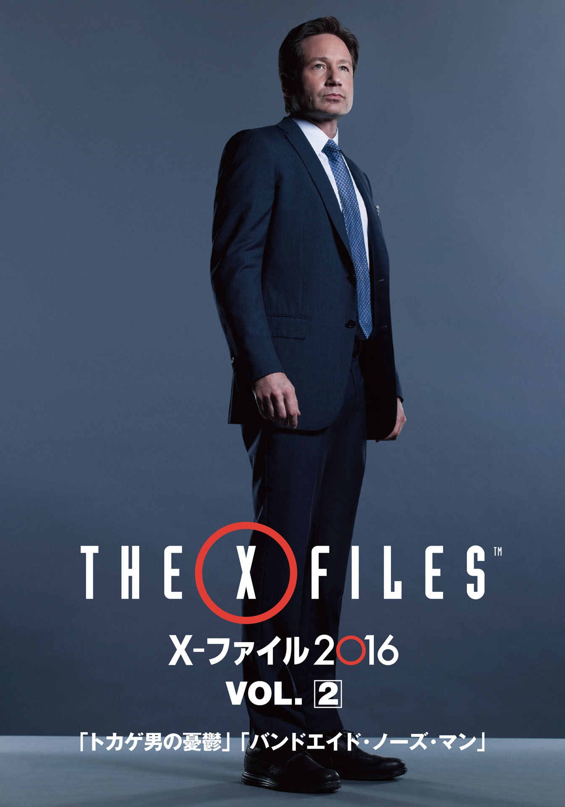
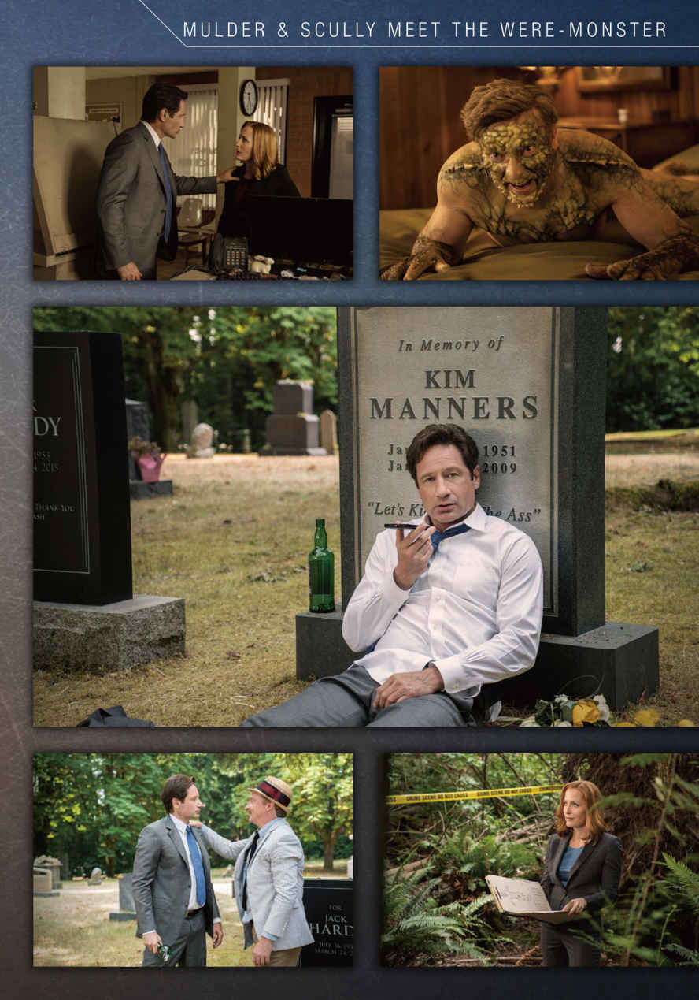
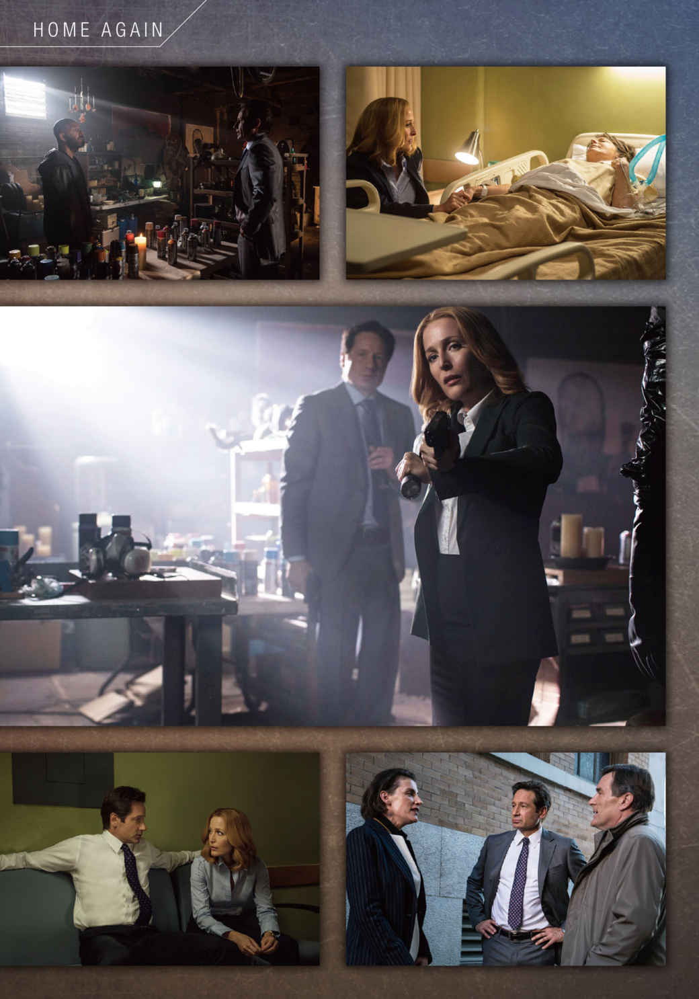
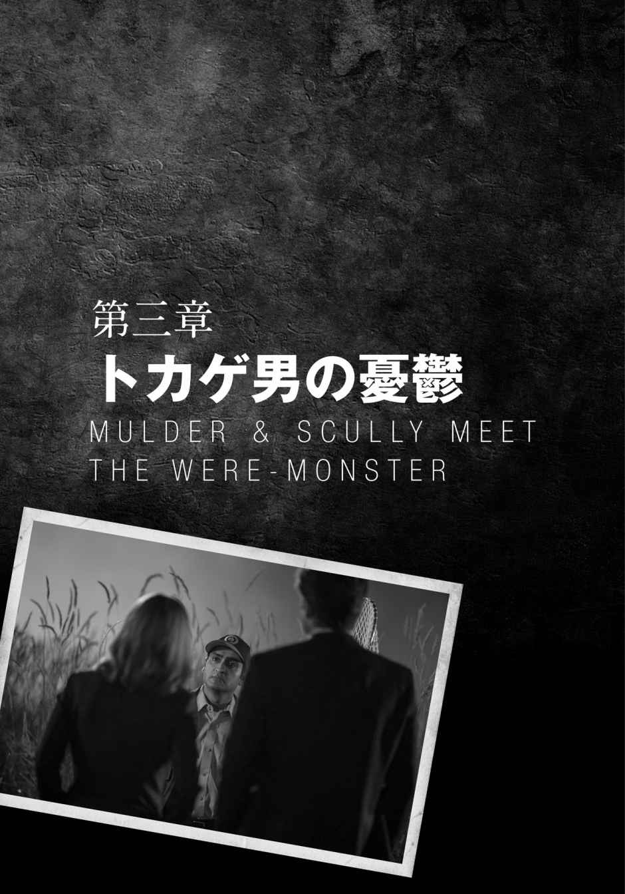
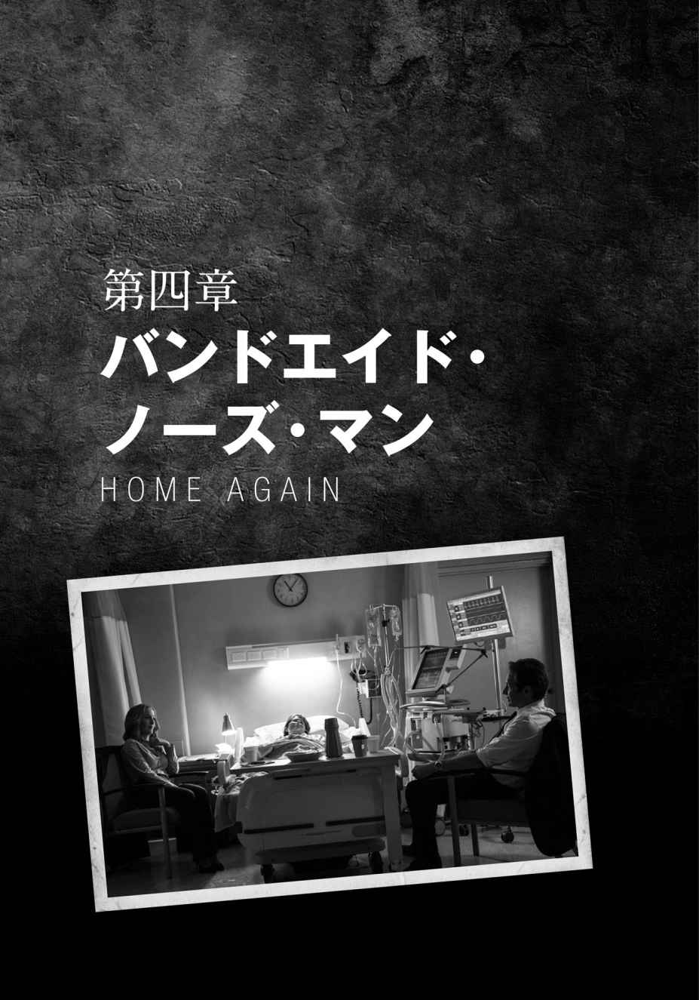

| X-ファイル 2016 VOL.2 (竹書房文庫) | |
| クリス・カーター | |
| (2016) | |
この作品は縦書きでレイアウトされています。
また、ご覧になる機種により、表示の差異が認められることがあります。
一部の漢字が簡略字で表示されていることがあります。



登場人物紹介
フォックス・モルダー .........FBI捜査官。超常現象事件などを担当するX-ファイル課所属。
ダナ・スカリー .........FBI捜査官。超常現象事件などを担当するX-ファイル課所属。
ウォルター・スキナー .........FBI副長官。
アナベル .........性転換した娼婦。
ガイ・マン .........ケータイ・ショップに勤める男。
ルマノビッチ .........精神科医。
ドロス .........フィラデルフィアの刑事
ダリル・ランドリー .........フィラデルフィアのホームレス地区の再開発計画推進者。
ジョセフ・カトラー .........フィラデルフィアのホームレス地区の再開発計画推進者。
ナンシー・ハフ .........バックス群教育委員会委員長。
トラッシュマン .........謎のアーティスト。
マーガレット・スカリー .........ダナの母。
ウィリアム・スカリーJr .........ダナの兄。
チャーリー・スカリー .........ダナの弟。
メリッサ・スカリー .........ダナの姉。かつて陰謀に巻き込まれて死亡。
ウィリアム .........モルダーとスカリーの息子。現在15歳。赤ん坊の頃に養子に出され、現在の居場所は不明。

１
森／シャワン／オレゴン州
その夜、オレゴン州シャワンの森の中から見上げると、空の中央には大きな満月があった。満月は黄色ではなく、うっすらと雲がかかってブルーグレイの妖 しい光を放っていた。昔ながらのホラー映画で狼男が出現するときには、決まってこういう月が空に出ていることになっている。
だが、その満月の下、森の中でデートをしていたのは、ホラー映画の定番登場人物である高校生の少年少女ではなく、そろそろ中年に差し掛かりそうな小太りの男と女だった。その男女──ストーナーとチックがやっていたのは、もちろんお月見ではないが、かといってデートというのともちょっと違うのかもしれない。ふたりはお互いを見つめ合うのではなく、それぞれが自分の手に持った紙袋の上に屈み込み、袋に入れた塗料から立ち上 る匂 いを嗅 いで、ハイになっていた。静かな森に時折聞こえて来る虫の声に混じって、ふたりが放つ〝スー、ハー〟という呼吸音が響いている。
男は、くしゃくしゃの髪に、鼻の下から顎 全体を覆う髭 を生やし、格子柄のネルシャツの上にコーデュロイの襟の付いたジーンズの上着を羽織っている。女は長いカーリーヘアで、Ｔシャツの上にジーンズのチョッキ。ふたりとも、悪事を働きそうにはない、人の良さそうな風 貌 で、およそオフィスで働く風には見えない。おそらくブルーカラー系だろう。
やがて、いたずらがしたくなったのか、チックは袋に顔をくっつけて吸引を続けながら、片手で、隣に座っているストーナーの脇 腹 をくすぐり始める。ストーナーは、笑いながら、彼女の手から逃げようとする。
「おいやめろって、くすぐったいよ。そんなことしたら、鼻からペンキが出ちゃうだろ。俺の顔、ペンキが付いたんじゃないか？」
そう言われたチックは、彼の顔を見上げるが、ハイになっている彼女は、ふと、彼の顔よりも、その後ろの空で輝いている月のほうに目を奪われてしまう。それにどっちにしても、ふたりはすでに、鼻から頰 から顎まで、ペンキでベトベトになっている。
「あの月、すごいよ、見てみてよ」
チックはストーナーの顔を月のほうに向けようとする。しかしハイになっている彼はとんちんかんな方向を見上げるので、彼女は男の顔を手で押さえて、月を見上げさせる。
「わぉ......」
「あんな月を見ちゃうと、思うよね......人生はなんて素晴らしいんだろうって。いつもラリってるばかりじゃもったいないって思わない？」
「俺はこういう月を見ると、狼男になりたくなるよ」
「狼男になったら、何するの？」
「とりあえずハイになる」
と、突然、男の悲鳴が聞こえ、何かが森を歩き回る足音がする。ふたりは音のする方を振り返る。
「なんだ？」
「ああああ！」悲鳴がまた聞こえてくる。
「あっちか？」
すぐ近くから聞こえてくるようだ。ストーナーが声の聞こえてきた方に歩き出すと、チックは彼の背中にしがみついて彼に付いていく。ふたりが鬱 蒼 とした樹木の隙 間 から、男の悲鳴のする方を覗 き込む。月の光が弱く、細かいところまでは見えないが、何者かが誰かを襲っているような光景が見えた。
その何者かは、ふたりの気配に気づいたのか、両手を顔の傍に置いて全ての指を大きく開き、ちょっと腰を落として、「ガァーッ」というような声を上げながら、こちらを振り向く。昔ながらのモンスターが敵を威 嚇 するときの定番ポーズだ。
正面から見えたその顔は、人間のものではなかった。基本的な造形は人間と同じようだが、頭部も顔もある種のトカゲのような気味悪い突起物でびっしり覆われている。特に顔の左右からは、鋭く長めの突起物が出ている。そして、目は赤い。その手は二本、足も二本のようだが、全身が爬 虫 類 のような鱗 で覆われているようだ。その姿は──まさに〝トカゲ男〟だ。そのスリムな体型は五四年製作のユニヴァーサル映画の名作『アマゾンの半魚人』を連想させる。あっちは魚だが、こっちはトカゲではあるが。
ふたりは怪物お決まりの威嚇ポーズに対し、同じくお決まりの反応で返す。
「うわあーっ！」
「キャーッ！」
ふたりは悲鳴を上げて、一歩後ずさった。が、そこから先はちょっと定番 ではなかった。お約束通りなら、そのモンスターが目撃者のふたりを襲うところだが、モンスターはふたりの間を通り抜け、森の奥へと一目散に去って行ったのだ。しかも走るときに、なんだか足を女子高校生ふうに、後に跳ね上げているように見えたのは、気のせいだろうか。いやいや、とストーナーは自分に言い聞かせる。自分は今、ハイになっている。だから幻覚を見てしまったのかもしれない。そうだ、チックに聞いてみようじゃないか。
「おい、今のは現実か？」
しかしチックもストーナー同様、自分がハイになっていることはわかっているので、この問いに自信を持って答えることはできない。う、ううん、どう答えようかなあ......と思いながら、チックがとりあえず笑顔を浮かべると、近くから男のうめき声が聞こえてきた。ふたりが声のした方を覗き込むと、男がうつ伏せに倒れている。さっき、トカゲ男に襲われた男ではないだろうか。ふたりはそう思って、すぐさま男に駆け寄る。
「おい。ちょっと。おい。あんた、大丈夫か？」
ストーナーが男の身体を仰向けにすると、男は上体を起こして、返事をした。
「うん、多分、大丈夫だ」
男はカーキ色のシャツと上着を着て、胸元にバッジをつけている。どうやら、動物管理局の職員のようだ。
「ちょっとあんた、大丈夫？」
さらにチックが問いかける。なんだこいつ、ハイになりすぎだろ。ストーナーはチックに注意する。
「おい、それはもう俺が聞いたって」
すると、チックが答える。
「違うよ、この人 じゃなくて、こっちの人 に言ったんだよ」
ストーナーがチックの指差す方向を振り返ると、そこにもうひとり、男が仰向けに横たわっていた。
「その人」
チックがもうひとりを指差す。
「うわ、これは！」
その男の首は真っ赤で、崩れて得体の知れない形になっている。何かに首の肉を嚙 み取られたかのように大きく切り裂かれていて、すでに大量の血が流れ出した後のように見えた。男の目は大きく見開かれたままで、その表面は濁り始めている。あらためて触るまでもなく、もう死んでいるのがわかる。
「こっちは......大丈夫じゃないかも」
ストーナーは、とりあえず、紙袋の中身をもう一度、吸うことにした。
２
Ｘ─ファイル課／ＦＢＩ本部地下室／ワシントンＤ．Ｃ．
「私は信じたい（I WANT TO BELIEVE）」
壁の掲示板に貼 られたＵＦＯが森の上空を飛行しているポスターには、そんなフレーズがくっきりと書かれている。このポスターは、フォックス・モルダー捜査官がＸ─ファイル課に所属された時から、壁に貼られていた。ＦＢＩの中でも、特殊な部署であるＸ─ファイル課は、現在証明されている科学では解明できない事件だけを扱う部署だったが、政府が隠しておきたい陰謀をしばしば暴きそうになったため、何度も閉鎖されてきた。そんな歴史の中で、このポスターも何度も失われたが、この課が再開されるたびに、なぜかまた新しいポスターが貼り出されることになる。今回のＸ─ファイル課の再開は本当に久しぶりだったが、今度もスカリー捜査官がどこからかこのポスターを持ってきて貼り出した。
しかし、現在、このポスターには、鉛筆が何本も突き刺さっている。そして、まさに今、モルダーが、このポスターの斜め前にある机に座り、新たな一本をこのポスターに向けて投げつけて、見事に突き刺したところだ。モルダーは机上のファイルを取りあげて、パラパラとめくって中身に目を通しては、つまらなそうにそれをゴミ箱に放り投げて、また、ポスターに向かって鉛筆を投げつける。モルダーの足元のゴミ箱は、彼が放り投げたらしいファイルで溢 れ、それらは床にも散乱していた。再開されたばかりのＸ─ファイル課の部屋は、まだ雑然とはしていず、資料は茶色いボール紙の箱に収納されているし、明るいグレーの掲示板にも、同じ色の壁にも、貼られている紙は少ない。この部屋の中で、このポスターはかなり目立つ存在だった。
退屈すると鉛筆を投げつけて突き刺す、というのは、昔から変わらないモルダーのクセだ。だが、かつては鉛筆は天井に向けて投げつけられていて、Ｘ─ファイル課の彼の席の上の天井には、何本も鉛筆が突き刺さっていた。モルダーがＦＢＩに追われる身になって地下に潜伏していた時も、鉛筆は彼の隠れ家の天井に突き刺さっていた。それが今、ポスターに向けて投げつけられているのは、理由がある。モルダーは今、このポスターが表明している「私は信じたい」という宣言に、疑問を抱いてしまっているのだ。
この言葉はかつて、モルダーの信念を表す言葉でもあった。自分以外のすべての人々によって否定されても、エイリアンと政府による陰謀の存在を信じ、超常現象の存在を信じ、そして、それらの真相を追求することが自分の使命だと信じていた時の──。しかし今、彼は自分の信念について、以前ほど確信が持てなくなっている。
「モルダー......私のポスター に何してるの？」
モルダーが声のする方を見ると、長年、この課で組んできたパートナーのダナ・スカリーが、部屋の戸口に立ってポスターの惨状を眺め、片 眉 を吊 り上げていた。今日のスカリーは、少しだけブルーがかったグレイのパンツスーツで、その下には同系色の燻 んだブルーグレイの襟のないブラウスを着ている。モルダーはごくわずかにブルーがかった白いワイシャツに、鈍い臙 脂 色に細い黒い線の模様が入ったネクタイ。ふたりともいかにも捜査官らしい服装だ。モルダーは、スカリーの問いに答えて、最近の自分の心境を話すことにした。彼女には、なんでも話すことができる。
「スカリー、Ｘ─ファイル課が閉鎖されて、僕たちがいなかった間に、〝説明のつかないこと〟がたくさん解明されてしまったらしいよ」
モルダーは机の上から大判の白黒写真を拾い上げて、スカリーに見せる。
「〝デスバレーの動く石〟──あのデスバレー国立公園の塩類平原レーストラック・プラヤにある、ひとりでに動く石は、単に地面に氷が張って、溶けるときに岩を動かしただけなんだそうだ。氷だぞ」
スカリー捜査官は、話を聞きながら、やれやれという顔をして、モルダーの向かい側の椅 子 に腰かける。モルダーはこの頃 、こういった類 の話をすることが多く、スカリーは少々、食傷気味なのだ。
モルダーはそんな彼女の反応にお構いなしに、謎の岩石モンスターが映ったモノクロ写真を見せる。
「僕は謙虚な性分だから誰にも言わなかったけど、密 かに、この動く石はコロラド州で何度も目撃された謎の岩石モンスターと関係があるんじゃないかとにらんでいたんだ。でも、このモンスターの正体は、地元の造園会社が作ったマスコット・キャラクターだった」
モルダーは、広告のカラー写真を見せる。色とりどりの花が咲いた円形の庭園の前で、先ほどの岩石モンスターが、両脇を金髪のチアリーダーに挟まれてポーズをとっている。背後にはプライマリーカラーの風船の束が飾られ、『スタンリーのホーム＆ガーデン堂々オープン』と書かれたバナーが吊 してある。開店記念でガーデンパーティが催されるらしい。無料のフラワーアレンジメント講習会もあるようだ。
モルダーは、その写真をひょいと背中の方に投げ捨てる。
「すごいよ、新鮮な目、曇りのない目で、昔のファイルを見直すと驚くよ。僕は賢くなったわけじゃないが、少しは分別がつくようになった。〝アマリロのアルマジロ男〟にしろ、〝ワラワラの毛むくじゃらなんちゃら〟にしろ......」
彼は、アルマジロ男の前世紀風イラストと、黒いシルエットの映った白黒写真をスカリーに見せては、またひょいと投げる。
「こういった事件はだいたい、大学生のいたずらか悪ふざけか、暇人かイカれた連中のでっちあげだ。それでも説明がつかない場合は、氷のせい だ」
「モルダー、薬ちゃんと飲んでる？」
スカリーは尋ねる。モルダーはかつてスカリーと一緒に暮らしていた時に鬱 病になったことがあり、その薬物治療は今も続いているはずなのだ。
モルダーはその問いには答えず、立ち上がると、ポスターの前に行って鉛筆を一本づつ引き抜きながら、話しはじめる。
「超常現象の先駆者チャールズ・フォートは、全人生を自然界や科学的な異常現象の研究に捧 げ、四冊の本を著 した。ぼくはその全部を暗記している」
モルダーはここでちょっと自慢げにスカリーを振り返る。それからまた、鉛筆を引き抜く作業に戻る。
「だけど、フォートは人生の幕を閉じるとき、時間を無駄にしたんじゃないかという自己疑念にとらわれたんだ。僕は晩年の彼が感じていた虚しさがよくわかるよ」
モルダーは鉛筆を全て引き抜き終わると、机に腰かけて、鉛筆の先を上に向けて、向きを揃 えていく。
「僕は中年なんだ、スカリー。そうは見えなくてもね」
スカリーはその言葉の後半には異論があるが、彼女がそれを口に出そうとするより先に、モルダーが両手でそれを制するジェスチャーをしたので、開きかけた口を閉じる。
「子どもっぽいことからは卒業する時期なんじゃないかな。サスカッチや蛾 男やツノウサギなんかからさ。もちろん、仕事に復帰するのは素晴らしいことだよ。だけど、僕は本当に、この先ずっとモンスターを追いかけて、一生を終えたいんだろうか？」
「事件の捜査依頼が来たわ、モルダー」
スカリーはモルダーの言葉には答えずに、業務連絡をする。
「新しい事件よ、モルダー。モンスターが 絡んでるの」
モルダーは、それを聞くとくるりと「私は信じたい」と書かれたポスターの方を振り向いて、ポスターに鉛筆を投げつける。また、命中だ。
森／シャワン／オレゴン州
オレゴンの森の事件現場は緑が鬱 蒼 と茂り、昼でもなお薄暗かった。空気もひんやりとして湿度が高い。スカリーは目撃者の証言によって描かれた、トカゲ男の似顔絵を見ていた。
「証言によると、犯人だと思われるモンスターは、目は三つ、またはひとつだそうよ」
その似顔絵には、角が何本も生えたトカゲのような生き物の全身と頭部が描かれていた。モルダーは腰に手を当て、現場周囲の木々を見回す。
「誰も写真を一枚も撮ってないなんてヘンじゃないか。今どき、誰でもスマホを持ち歩いてるのに」
スカリーが持っているファイルには、目撃者の証言も記されていた。
「現地にいる間に、目撃者の話を聞く？」
モルダーはスカリーの肩越しにファイルを覗き込んだ。このトカゲ男を見たという男女の証言を書き取ったレポートが綴 じられてあり、その上に目撃者ふたりの顔写真がクリップで留めてある。そのふたりは普通の勤め人ではなさそうな人相なうえに、その口元の周りが顎の先までたっぷりと金色の塗料に染まっていて、ふたりが明らかにハイだったことがわかる。
「んぁぁ......」
モルダーはうめいて、写真から目を背ける。スカリーは続ける。
「とにかく、このふたりは謎のモンスターが動物管理局の職員を襲うのを見たって言ってるわ。でも、助かった局員は、自分を襲った相手の姿は見ていないと言ってる」
ファイルの隣のページには、その動物管理局員の写真もクリップで止められている。そのインド系の男性は真面目な好青年のように見えた。
「もちろんさ。ピューマは背後から獲物を襲うからな。動物管理局の職員はピューマを見たという通報を受けて、それを捕獲しにここにやって来た。彼を襲ったのはピューマだよ！ もうひとりの犠牲者を殺したのもそうだ」
「地元警察もそういう見解だったわ。一夜明けて現場付近の捜索を行って、あっちの場所で、さらに三体の遺体を見つけるまではね」
スカリーは遺体発見現場に向かった。バリケードテープの張られた古い大木の根元には、人が何人も楽に入りこめそうな穴がぽっかり開いていた。モルダーはそれを見て、新たな犯人像を挙げる。
「犯人は狼だよ、スカリー。狼は獲物を巣に持ち帰る習性があるんだ」
スカリーは大木の根元に横たわる三体の遺体の写真と、犠牲者の首元を大写しにした写真を見て検証する。
「遺体の傷痕 はどれもまったく同じだわ。ところが三人目の犠牲者だけ、衣服を何も身につけていなかった」
モルダーは、現場写真には見向きもせずに、辺りをぶらつきはじめる。
「ヌーディストだったのかもな。裸で夜中のハイキングをしていたら、狼だかライオンだか熊だかに襲われた。三匹に同時に襲われたのかもな。楽しそうじゃないか」
モルダーはまったくやる気がない。スカリーはファイルから目を上げて、モルダーに視線を送る。
「傷痕が同一なのは、人間による犯行に多い特徴よ、モルダー」
「よせよスカリー、プロファイリングには、モンスター探しよりもずっと前にウンザリしてる。連続殺人犯なんて、どいつも同じだよ」
スカリーは、やっと振り向いたモルダーに、少し強い口調で語りかける。
「モルダー、あなたが今、人生に疑問を抱いているのはわかったわ。でも、人が殺されているのよ。私たちで犯人を阻止して人命を救えるなら、それは間違いなく有意義なことよ。犯人が動物でも人間でも、それ以外の何か でもね」
スカリーは「それ以外の何か」と言いながら、モルダーの前で、先ほどの三つ目の怪物のスケッチをヒラヒラと振って見せる。
「わかったよ」
モルダーはそのスケッチを指差して、宣言する。
「でも言っておくよ、スカリー、この犯人の目は二つだ」
ドライヴイン／オレゴン州
深夜。二つの 赤い目をしたトカゲ男は、長距離トラック運転手が給油や食事をするためのドライヴインの暗がりに身を潜めていた。すぐ近くでは娼 婦 のアナベルが、駐車しているピックアップトラックの運転席によりかかるようにして、客をひっかけていた。
「一緒にパーティしない？ ねぇ、いいじゃない。今日は満月よ、ベイビー。はじけましょうよ。料金は、ふたりでひとり分にお負けしとくわ。ひとりだったら......」
ブロンドの長髪に真っ赤な唇、黒い肌、ピンヒールを履いた大柄な美女、アナベラは、夜の暗さの中では一見、大柄で派手な美女に見えるが、よく見ると彼女が美しい女性の姿に装った男性だと気づかされる。そういうタイプの美女がお好みの男性もいるが、このトラック運転手は違ったようだ。
「またにするよ」
トラックは、アナベルを取り残して走り去ってしまった。
「何よ、ケチ！」
アナベルがトラックに悪態をついて、ふと振り返ると、そこに奇妙な生物の姿が。
「きゃーーっ！」
アナベルは大声で叫ぶと、ハンドバッグを両手で摑 んで、トカゲ男の顔を目がけて振り下ろした。
３
ドライヴイン／オレゴン州
「すごい一撃だな」
モルダーは、アナベラのバッグの中央にぽっかり開いた穴に感心しつつ、持ち主にバッグを返した。アナベラがモンスターを撃退してから、まだあまり時間が経っていない。モルダーとスカリーは事件の通報を聞いて、彼らが扱っている事件と関わりがあるのではないかと考えて、目撃者のアナベラに事情聴取に来ていた。アナベラは、自分がモンスターを撃退した時の、コントロールの良さを自慢する。
「バッグがツノに命中したんだと思うわ」
「ふむ」
スカリーが腕組みをしながら確認する。
「ツノがあったの？ ユニコーンみたいに？」
「ツノはあったわよ。でも一本じゃなくて、後頭部に何本もあるの、ツノトカゲか何かみたいに」
「もしかして、こんなやつだったかい？」
モルダーは、目が三つあるトカゲ男のスケッチを見せた。
「いいえ。目は二つしかなかった。それからパンツをはいてたわ」
「トランクス？ それともブリーフ？」
モルダーはなぜそんな質問をするんだい？ といいたげな顔でスカリーの顔を見るが、アナベラはそれに構わず即答する。
「白いピチピチのブリーフよ。昔の私と同じ。私、去年、性転換したの」
「どっちに行ったか見たかい？」昔の私 は無視をし、モルダーは聞いた。
「あっちよ」
アナベラが指差しながら言う。
「おまわりさんにもそう言ったのよ、でもおまわりさんは、私がクスリでラリってるっていうの」
「そうなの？」
モルダーが尋ねると、アナベルは〝そんなの当たり前でしょ〟というジェスチャーで答えた。
「もちろんよ」
その答を聞いて、モルダーとスカリーは顔を見合わせた。
パトカーから無線の音が聞こえて来る。
〈被害者を襲った動物はドライヴイン南西に広がる野原の方へ逃走した模様。範囲が広いので応援を頼む。逃走した動物はツノが複数生えておりかなり大型。なお被害者の話に疑わしい点があるため、不審人物も含め近隣の目撃情報を至急集めてください。現在二一号線は南ジャンクションまで交通規制中。現場検証が済み次第、解除の予定。各車輛は応答願います。繰り返します。被害者を襲った動物は......〉
その頃、同じドライヴインの駐車場の端で、背の高い草むらを覗き込みながら歩いている男がいた。それは、先日のトカゲ男襲撃事件の生存者だった、動物管理局職員だ。クリーム色のワイシャツの上に、ダークブラウンの管理局のユニフォームを着て、ユニフォームと同じ色のキャップを被り、片手には輪の形をした捕獲網を持ち、もう一方の手には網状の捕獲網を持っている。彼はインド系の青年で、黒髪を七三に分け、黒い目は大きく、眉も太く、唇も厚いという、濃い顔立ちだ。小柄で中肉、敏 捷 そうに見える。きっと普段は陽気な表情をしていることが多いのだろうが、今はどこか怯 えたような表情をしている。
昨夜に続いて、今夜も月は満月に近いが、空は曇り気味で、月明かりはあまり明るくない。さらに霧も立ち込めてきており、何か探し物をするには、視界はあまり良くない。職員は、左右に目をキョロキョロさせながら、小さな声で呼びかけて、何かをおびき寄せようとしていた。
「ヘ、へェェイ......」
職員は口笛を吹こうとするが、スピスピといった息が漏れる音がするばかりで、何の音色もでない。
「何かみつけたかい？」モルダーが声をかける。
「うわ、驚くじゃないか！ 後ろからこっそり近づくなよ！」
出し抜けに後ろから声をかけられた職員は、大声を上げて振り返った。
「ごめんなさい」
スカリーはそう謝ってから、その男の顔に見覚えがあることに気づく。
「あら、あなたこないだの夜に襲われた動物管理局の人じゃない？」
「そうだ。パシャだ」
「今夜、この辺りで、ヘンな生き物を見た人がいるの。心当たりがないかしら？」
「知らない。僕は、さっき、迷子の子犬か何かががこの辺をうろついているという通報があったから来たんだ......子犬でありますようにと祈りながらね。だって犬や猫なら、僕にも捕まえられるから。でも、それより大きい生き物ってことになると、もう、考え直さなくちゃいけないかもしれないから......」
「考えなおすって、職業についてかい？」モルダーは尋ねる。
「いや、人生について......」パシャが答えると、突然、すぐそばで大きな唸 り声が聞こえた。
「グアー」
すると、パシャは、あっという間に何も言わずに、声がしたのとは反対方向に逃げ出していき、見えなくなる。モルダーとスカリーは声のした方へと、背の高い草むらに分け入っていく。スカリーは静かに銃を抜いて構える。モルダーも慎重に構えた、が、それは銃ではなく、スマートフォンだった。彼がスマホを構えると、なぜかカメラのフラッシュが繰り返し何度も光った。
「何してるの？ モルダー......」
「そいつが目撃証言通りの顔をしているのか、写真を撮ってやるんだ」
「私はもしそいつが似顔絵どおりなら、全弾をお見舞いしてやるわ。そいつがアナベラが言ったみたいに下着姿でもね」
ふたりがそう言いながら、背の高い草の中を移動している間にも、モルダーのスマホのフラッシュは意味もなく何度も光る。この光は捜査の邪魔だ。
「ちょっとモルダー......」
「ごめん、操作に慣れてなくて。これ、新しいアプリなんだ。ちゃんと動いてるのかな、これ」
スカリーはいらだってモルダーのスマホを覗き込み、画面に表示されている画像に目をとめた。
「それ、何？」
人の首のアップだった。喉 の肉が大きくえぐり取られている。モルダーがスマホを持った手を下げると、ふたりの足元には、今、写っていた死体が、頭をこちらに向けて、横たわっていた。
いつの間にか満月は雲に覆われて、辺りは暗い。スカリーは死体のそばにひざまずき、懐中電灯で死体を照らし出し、検視する。こういう時には、スカリーの医師としての能力がものをいう。
「殺されたばかりね。まだ温かい」
スカリーがそう報告すると、背後で唸り声のような音がして、モルダーが振り返ると、少し離れた草むらの前を、似顔絵で見たようなシルエットが走っていく。モルダーはすぐさまそのシルエットを追いかけながら、前方にスマホを向ける。相変わらず、スマホのフラッシュは無意味に何度も光り続けている。モルダーは追いつけず、怪しい影はドライヴインの駐車場に向かい、トラックが数台駐車している辺りで姿を消してしまう。
モルダーが駐車場の中を、正体不明の何者かが隠れていそうな暗がりを覗き込みながら、注意深く歩いていく。すると、背後から何かが近づく気配がした。モルダーが振り返った途端、彼のスマホのフラッシュが光り、驚いた相手が悲鳴を上げた。
「わぁ！」
それは先ほどの動物管理局職員パシャだった。彼は早口で説明した。
「あっちでもの音がしたから、こっちに逃げてきたんだよお！」
相手がトカゲ男ではなかったことにがっかりしたモルダーは、すぐに向きを変えてトカゲ男の捜査に戻るが、またスマホのフラッシュが何度も光る。
「あんたのスマホ、故障してんの？」
パシャが尋ねる。
「わからない。アプリの調子が悪いみたいなんだ」
「写真を撮りたいのかい、それともビデオ？」
「わからん」
「なら、設定を見たら」
「どこだって？」
「だから、設定のところに行って......」
と、パシャがモルダーに説明しようとしていると、そこに何者かが近づいていき、ちょうどモルダーのスマホのフラッシュが光って、光の中にその姿が浮かび上がった──トカゲ男だ。
「うわあああ！」
「ひゃあああ！」
モルダーとパシャが発した悲鳴は、草むらの中で死体の検死を続けていたスカリーの耳に届いた。悪い予感にかられた彼女は、モルダーたちの悲鳴が聞こえた駐車場の方に戻ってくる。すると、駐車したトラックの間に、モルダーとパシャが倒れていた。
「モルダー！」
モルダーは仰向けに手足をまっすぐに伸ばし、硬直したような姿勢で倒れていた。スカリーはそのかたわらにひざまずいて額に手を当て、それから頰に手を当てる。
「モルダー！」
ひと声唸って、モルダーが意識を取り戻す。
「ああ、大丈夫だ」
その声はもう、平常通りだ。
「血がついてるわ」
スカリーが手についた血を見て言うが、モルダーは答える。
「僕の血じゃない」
すると、少し離れた、パシャが倒れている辺りから、声が聞こえて来る。
「あう......」
スカリーが振り向くと、パシャがうめき声を上げながら、身を起こしていた。パシャは網がズタズタに破れた捕獲網と、輪がなくなって折れ曲がったポールだけになった捕獲網を両手に持ち上げて、うんざり顔で見つめている。
「いい、もう限界だ」
パシャは、捕獲網とポールを力無く取り落とした。
「......やめる」
彼はポツリと呟 くと、帽子を足元に脱ぎ捨てて去っていった。
スカリーはモルダーに向き直り、トカゲ男のことを尋ねる。
「相手を見た？」
モルダーは微笑んで、スカリーにスマホを振ってみせる。
「写真を撮ったよ！」
すると再び、さらなる唸り声がして、トカゲ男のような姿をしたものが、駐車したトラックの向こう側──モルダーがいるのとは反対の方を走って行くのが見えた。モルダーとスカリーはすぐさまトラックの正面を回りこんだが、そこにはトカゲ男の姿がなく、ふと音のした方を見ると、駐車場の向こう側で、仮設トイレのドアが閉じられるのが見えた。トカゲ男はトイレに隠れたのに違いない。スマホを構えたモルダーと銃を構えたスカリーは、静かにトイレに近づき、トイレの左右に分かれて立つ。モルダーがドアの取っ手を摑み、引き開けた。すると、そこにいたのはトカゲ男ではなく、ただの中年男だった。パナマ帽を被り、白地にごく細いライトブルーのストライプの上着というオシャレな服装をしている。まるい大きな目に小さな口髭をたくわえた、愛嬌のある顔をした小太りの男だ。彼は、ズボンをくるぶしまで下ろして、便座に座っていた。男はモルダーとスカリーを見て、ムッとした顔をして咎 める。
「ちょっと！」
「ごめんなさい」
スカリーはすぐさま謝って、トイレとは逆の方向に向きを変える。
「閉めてくれません？」
男にそう言われたモルダーは、
「もしかして、見なかったかな......？」
と、言いかけるが、スカリーと目で合図を交わしながら、それよりも先にトカゲ男を追った方がいいだろうと判断した。仮設トイレのドアを閉め、スカリーと一緒にその場を離れて追跡に向かう。
モルダーとスカリーが去って、少し後のこと──仮設トイレのドアがゆっくり開いて、さきほどの中年男が出て来た。彼は立ち止まってパナマ帽を脱ぐ。すると、彼の後頭部には、三本の小さな緑色のツノが生えているではないか。しかしツノはゆっくりと小さくなって見えなくなっていき、男は帽子を被り直し、歩き去っていく。その向こう側では、モルダーとスカリーが、まだトカゲ男を捜し続けていた。
４
検死室／オレゴン州
検死室では、青い手術着姿のスカリーが、さきほど、ドライヴインの近くの草むらで発見された死体の検死をしていた。モルダーはスカリーの仕事を遮 って、自分が撮ったスマホの写真を彼女に見せようとする。モルダーはもう捜査当初のやる気のなさとは打って変わって、すっかりやる気満々の、いつものモルダーに戻っている。元気すぎて、スカリーには少しうるさいくらいだ。
「これは耳だな。それか......足かも」
モルダーは、スマホで撮った画像をスカリーに見せようとするが、スカリーは、邪魔なモルダーの腕を押しやって、検死を続行する。
「モルダー......」
「こいつは......目を細めて見るとわかりそうだ......何が写ってるのか。それからこれは......」
スカリーがもう一度ため息をついた。スカリーはモルダーの話に付き合いながらも、手を止めることなく、着々と検視作業を進めていく。
「これは......ピントが合ってる！」
モルダーが自慢そうに見せた画像は、まだらの緑色の鱗状の皮膚に、赤い点がついているように見える写真だ。
「でもこれ、何なの？」
「クローズアップだよ。クリーチャーのね。ほら、気がついたかい、〝モンスター〟って言わなかった。それにサスカッチじゃないよ。絶対に動物だ......人間サイズで、体毛はない」
「疥 癬 病 みのサスカッチだったりして」
「あ、動画もあるんだ。ほら見て」
モルダーは、自分がトカゲ男と鉢合わせしてしまって、叫び声を上げた時の動画を見せた。しかしカメラはその間ずっと、モンスターではなく、モルダーの顔に向けられている。
「モルダー、レンズの向きが逆よ」
「ああ、アプリに慣れていなくてね。でもここを見てくれ」
動画に映るモルダーの顔に、突然、血が吹きかけられた。
「トカゲ男は、僕に血をかけたんだ。目玉から血を飛ばしたんだよ、スカリー。多分だけどね。前方がよく見えなかったのは、きっと僕の目に血がかかったせいだ」
「まだ血液の検査はしてないけど、犠牲者を襲ったときにモンスターに着いた犠牲者の血が、飛び散って、あなたに付いたんでしょうね。それに──動物は目玉から血を吹きかけたりしないわ」
「へえ、そうかい？ それをツノトカゲに言ってやれよ。ツノトカゲは敵から身を守るために、目玉から血を噴き出すんだ。これは科学的事実だ！」
モルダーは、ネットのツノトカゲを紹介しているページを、スマホで検索して、スカリーに見せる。モルダーの鼻息は荒い。しかし、スカリーは冷静だ。
「モルダー、インターネットはあなたにはよくないわね」
モルダーはめげずに、スマホのツノトカゲの画像を、スカリーに見せる。
「これは目撃証言の似顔絵と似てないか？」
「え？ じゃあ身長一八〇センチのツノトカゲに襲われたって言うの？」
「待った。とりあえず、自然科学の常識の範囲内で考えないか？」
「検死結果から言うと、被害者たちの首の咬 み傷は、人間の歯によるものよ」
「じゃあ僕らが探しているのは、人間の歯を持った、人間サイズのツノトカゲ？」
ふたりはちょっとの間、お互いの顔を見つめ合う。
「ちょっと笑えないか？」
モルダーが言うと、スカリーも微笑む。
「そうね」
「楽しそうだな、スカリー」
「ええ。楽しいわ。この面白さを忘れてた」
ふたりの間に、お互いを理解しあった者同志の、充実した沈黙が流れる。
「今日は大変な一日だったわね、モルダー。もうホテルに戻って寝たらどう？ モンスターの夢は見ないようにして」
モーテル／オレゴン州
モルダーがモーテルに帰って眠りについた頃、空には雲に覆われながらも満月がかかり、外ではコオロギの鳴き声がしていた。ここは自然が豊かな土地柄なのだ。モーテルの建築も、この辺りの森林地帯の自然を味わいにやってくる観光客のためなのだろう、室内は木の素材がたっぷり使われた山小屋風なデザインで、壁には動物の剝 製 の頭部がいくつも飾られていた。ベッドの上で眠りこけるモルダーも、壁に掛けられた鹿の頭部の剝製ふたつに見下ろされていた。しかし、モルダーの眠りは、悲鳴で中断される。
「わあ！ 怪物だ！ 助けてくれ！ モンスターが出た！」
モルダーはすぐさま起きて、モーテルの事務所に向かった。そこでは老いたモーテル経営者が頭の傷をアルコールで消毒しているところだった。事務所も客室同様、木の板を多用したインテリアで、壁には大きな熊のほぼ全身の剝製を始め、鹿の頭部や、トナカイの頭部、カモの全身など、たくさんの剝製が飾られていた。モーテルの経営者は痩 せて、皺だらけの老人で、頭髪はごく短く刈られているが、それは頭のてっぺんが薄くなっていることをカモフラージュするためのヘアスタイルかもしれない。髪はもう銀髪になっている。グレーのＴシャツの上に、褪色した茶色のナイトガウンのようなものを羽織った彼は、傷口を消毒し終わると、そのアルコールの瓶に口をつけてぐいっとあおった。モルダーは、事務所の戸口からひょいと覗いて、この老人に声をかけた。
「何かありましたか？ さっき悲鳴が聞こえたようだけど」
「あー、ああ。お騒がせしてすみません。うるさい客とモメてただけなんですよ。もう済んだので、部屋へおひきとりください」
「〝怪物だ〟って叫んでたけど？」
「無礼な客が私に言ったんですよ、延滞料金を払うよう頼んだだけなのに。それで怪物呼ばわりですよ、ヒドイ話でしょ？」
「まあね」
「でしょ。さあ、わかったら頼むから消えてくれませんか、こっちは気が立ってるので！」
モーテル経営者の声は大声ではないが、言ってる言葉は、かなりキツい。彼は湿布にアルコールを振りかけ、またその瓶から一口飲んだ。この人物には何か、気が動転することがあったらしいが、それを隠しているようだと踏んだモルダーは、自分で捜査することにした。モルダーが、モーテルの外に出るとドアを開け放したままの部屋があることに気づく。叫び声はこの部屋の客のものかもしれない。中に入ると部屋にあったのは、まず、寝乱れたベッド。テーブルにはファストフードの食べ残し。それとスマートフォン・ショップの店名とおぼしき、「スマートフォン・イズ...アス！」というロゴが印刷された紙袋。
ベッド脇のランプは、床に落ちていた。壁にかかった絵は曲がっている。鏡は割れている。ここで乱闘が行われたのだろうか。鏡の下の引き出しの上には、薬の容器が入っていた。モルダーはそのラベルを読む。
薬局 ライカン薬局
氏名 マン、ガイ
薬名 抗精神薬クロザピン
服用 一日一錠
これは、この部屋の泊まり客のものか？ 手がかりになりそうだ。モルダーは容器をズボンのポケットにしまう。
それから、床に落ちていた剝製を持ち上げる。ツノウサギだ。それをひっくり返すと、目の部分に穴が開いている。壁を見ると、剝製がかけてあったと思われる位置に、剝製と同じ大きさの穴が開いている。穴に手をひっかけて引っぱると、その羽目板張りの壁に作られていた隠し扉が開いた。
モルダーが入ってみると、扉の裏側はクッションになっていて黒いビニールで覆われている。その秘密の通路は、泊まり客たちの部屋の背後を通っていた。反対側の壁にも別の穴があり、覗いてみると、客室の様子が見えるようになっていた。モルダーが覗くと、それはスカリーが止まっている部屋で、安らかな寝息を立てる彼女の姿が見えた。モルダーは、スカリーが安眠する姿を見て微笑むと、そっと目を外してその場を去り、モーテルの事務所に戻っていった。さっきのモーテル経営者に、今度は本当のことを話してもらおう。
モルダーが、秘密の通路から、事務所に通じている扉を開けると、きしる音がして、事務所に飾られていた大きな熊のほぼ全身の剝製が前方へと動きはじめた。この剝製は、秘密の通路に続く隠し扉を隠すためのカモフラージュだったのだ。モルダーが、その扉からひょっこり顔をのぞかせると、モーテル経営者は、まだ消毒用アルコールの瓶からチビチビと飲んでいるところだった。モルダーは彼に、何事もなかったかのように声をかける。
「あ、どうも。製氷機はどこにあるのかな」
モーテル経営者は、モルダーが秘密の通路から出てくるのを見て、急に慌て出す。
「ちょ、ちょっと。あんた、一体なんなんだ？ そっちは従業員専用で立ち入り禁止だ。入っちゃい、いかんよ」
そこでモルダーがＦＢＩの身分証を取り出して見せると、彼の返答は、さらにしどろもどろになる。
「その......あれは防災上の設備なんだ。９・１１以降に作ったんだよ」
「通報はしない。こんなモーテルにチェックインすれば、経営者が覗き魔なのは想定内だよ。だけど推測するに、あの荒らされた部屋の何かが、ひどくあんたを取り乱させたんじゃないか」
「言っても......きっと信じちゃくれないよ」
モルダーがさらに促す。
「試してみろよ」
そこで経営者は渋々説明し始めた。
少し前、彼は秘密の通路で、いつものように覗きに夢中になっていた。彼はモルダーの部屋も覗いていた。ベッドに大の字になって横たわるモルダーは、真っ赤な競泳用パンツのような下着だけを身に付けていた。経営者は嬉 しそうに呟いた。
「んんん......いいいぞ......ピチピチだ！」
すると、別の部屋から、男の声がした。何かに向かって怒鳴りつけている。
「毎日同じだ！」
いったい、何が起きているんだろう。ケンカだろうか？ モーテル経営者は好奇心を刺激され、モルダーの部屋の覗き穴から目を離して、怒鳴り声のする部屋の穴を覗いた。怒鳴り声はまだ続いている。
「なぜだ？ お前なんか嫌いだ！ こんなのやってられないよ！」
その部屋に泊まっていたのは、口髭をたくわえた愛嬌のある顔をした──確か宿帳にはガイ・マンと書いた男だ。経営者が覗き穴から見ると、男は鏡に映る自分を指さして、大声でなじっていた。
「毎日お前の顔を見てたら気が狂っちまう！ もうたくさんだ！」
ガイは怒りのあまり、鏡に椅子を投げつけ、割ってしまった。それを見た経営者はこっそり呟く。
「鏡の料金は請求してやるからな」
ガイの怒りはさらに続く。
「それからお前！」
次に男が指差したのは、サイドテーブルの上だ。
「こいつめ！」
彼がサイドテーブルの上から摑み取ったのは、アラーム時計だった。その時計はタイミング悪く鳴りはじめた。
「明日、俺を起こすんじゃないぞ、わかったか！」
男が時計を床に投げつけると、時計は壊れて粉々になり、部品が空を飛んだ。
「うんざりなんだ」
彼は一体何を怒っているのか。興味を抱いた経営者が見続けていると──。
「ああ......まただ」
その男は急に立ち止まって、両手を見下ろした。
「後生だ！ これで最後にしてくれ」
そして叫び始める。
「おおお！」
彼は走ってさっき自分で割った鏡の前に戻り、顔を見続ける。
「おおお！」
するとどうだろう、鏡の中で、その男の顔がみるみるうちに変 貌 していくではないか。皮膚は鱗で覆われ、頭部にはトカゲのような突起物がいくつも隆起してきて、目は赤くなり、やがて身体も鱗で覆われ、爪 が伸び、トカゲ男の姿になっていく。覗き穴からその変身を見ていた経営者は、思わず叫び声を上げてしまった。
「うわー！」
その声に驚いたトカゲ男が振り向くと、そこにはツノウサギの頭部の剝製があった。どうやら悲鳴は、その剝製から聞こえてくる。トカゲ男が剝製を壁から引き剝がすと、そこになんと、人間の顔が──。
「うわー！」
「うわー！」
顔が露出されてしまったモーテル経営者も驚くが、そんなところに人がいるとは思ってもいないトカゲ男も驚き、ふたりは一緒に悲鳴を上げる。
「怪物だ！ 助けてくれ！」
経営者が助けを求める声を聞いて、トカゲ男は部屋から飛び出して逃げていった。
「......あれはモンスターだ」
経営者は気を落ち着けようと、もう一杯、消毒用アルコールをひっかけた。
「あんたが見た生き物はこいつか？」
モルダーは彼に三ツ目のトカゲ男のスケッチを見せた。
「でも目は二つだった？」
「ああ、目は二つだ。でも、この絵のモンスターだよ」
「そして、泊まっていたのは、この男だった？」
モルダーはスマホで撮った、仮設トイレに座るガイ・マンの写真を見せた。
「ああ、この顔だ。この男が怪物になったんだ」
モーテル スカリーの部屋／オレゴン州
モーテルのスカリーの部屋で、モルダーはベッドのそばを行ったり来たりしながら、夢中になってトカゲ男のことを話し続けている。スカリーはベッドに腰かけ呆 れ顔で聞いていた。スカリーの部屋の壁には狐の頭部を始め、いろんな剝製が飾られている。モルダーはさっき自分が覗いていた穴の部屋側にあった剝製が〝狐 〟だとわかり、洒落 にならないと思った。
「モンスターだよ、スカリー。単純にして明快だ」
モルダーは、こんなものは無用だとばかりに事件のファイルをベッドの端に投げ出す。
「しかもそれはただの、そんじょそこらにいるモンスターと違って、姿をコロコロ変えるんだ。人からモンスターになって、またモンスターから人になる。わかってるよ、君はこう言うつもりなんだろう、『でもモルダー、それは狼男の伝説よ、まだ狂犬病が医学的に発見される前に、人々が狂犬病の患者の暴力的な行動を説明するためにひねり出したお話なのよ』って。でもある種の伝説は、人々の無知から生み出されたんじゃなくて、実際に起きたことが元になって生まれたんじゃないかな？」
スカリーが何か言いかけるが、モルダーがその隙を与えない。
「君はこう言うつもりなんだろう、『でもモルダー、それはあらゆる科学と自然の法則に反するわ』って。その通りだ、スカリー、あらゆる既存の 法則にはね。でも、僕たちがここで出会ったこの生物が、生命に対する僕たちの理解に、まったく新しい認識を与えてくれる存在だとしたら？ あるいは科学の力で、自然に反する新種の生物が作り出されたんだとしたら？ 軍事会社や農業法人、巨大製薬会社による遺伝子組換え実験が暴走したのかもしれない。でなければ、この男は主任遺伝学者で、無謀にも自分を実験台にした結果、人間の肉を食らう悪魔に変身したのかもしれない」
スカリーは口を挟もうとするが、モルダーはそれを許さない。
「わかってるさ、君はこう言いたいんだろう、『でもモルダー、そんなのはまるで頭のイカれた人間の偏執的な妄言にしか聞こえないわ』って。僕はヤツが何者なのか、なぜこうなったのかは知らないよ、スカリー。だけど、これだけは言える。あれは正真正銘のモンスターだ」
スカリーはゆっくり頷 いて、微笑む。
「そうよ、モルダーはそうでなくっちゃ」
「じゃあ僕に賛成？」
「まさか！」
モルダーは、ベッドの上に投げ出された事件のファイルを指で突き刺す。
「じゃあ、この事実はどうなんだ？」
「どの事実？」
モルダーはスマホで撮影した便器に座る男──ガイ・マンの写真と、事件のファイルの犠牲者の写真を見せる。
「モーテルの経営者が〝モンスターになるのを見た〟という男が、被害者の一人の服を着ていた、っていう事実さ。仮設トイレで見た時はそれを見逃したんだ、僕らが追いかけてるのは動物だと思ってたからね。半分だけ当たってたわけだ」
「わかったわ。そうね、この男になぜ被害者の服を着ているのか、その事情を聞かないと」
「彼はもう、あのモーテルの部屋には戻ってこないんじゃないかなあ。でも、あの部屋で彼が持っていた薬を見つけたから、この薬を処方した医者に会おうと思う。彼の居所を摑む助けになるかもしれない」
「それはよさそうな捜査プランね」
「でも最初にしないといけないのは......」
モルダーは部屋の壁にかかる狐の頭部の剝製を見た。秘密の通路のことは、スカリーには言わないでおこう。
「このモーテルを引き払うことだ」
５
カウンセリング・オフィス／オレゴン州
モルダーは、ガイ・マンに薬を処方した、東欧系の精神分析医、ルマノビッチ医師のカウンセリング・オフィスに来ていた。そこは、誰もが東欧系の精神科医がカウンセリングをするならこう言う部屋だろうと想像する通りの部屋で、古いヨーロッパの家具とカーテン、壁には絵画、机の上には何かの胸像があり、昼でも窓にレースのカーテンがかかっているために明るくはない。居心地は良いが、あまり広くはない。医師自身も、薄くなった頭部に丸い眼鏡、古びているが仕立ての良さそうなスーツを身にまとった、いかにも な風貌をしている。もちろん、その言葉には東ヨーロッパ風のアクセントがあり、そのアクセントが、彼の語る話に、一種の信 憑 性 のようなものを与えているようにも感じられる。そして、その口調は、あくまでも静かで穏やかだ。
「昔々、人食い大トカゲに悩まされている村があった。この土地の巡査はこの生き物を退治しようとあらゆる努力をしたが、どうしても退治できなかった。それで、とうとう、彼はジプシーを訪れて相談した。どうやったらこの怪物を倒せるのかとね。するとジプシーは答えた。このモンスターを殺す唯一の方法は、緑色のガラスで作った槍 で盲腸を突き刺すことだとな」
「なぜ緑色のガラスなんだ？ なぜ盲腸を？」
ルマノビッチは手を振りながら、にこやかに答える。
「そんなこと知らんよ。古いおとぎ話では、怪物は常に何かに貫通されて滅ぶことになっているんだ。銀の弾丸や、木の杭みたいな、ね。明らかに祖先たちは現代の我々同様、インポテンツの悩みに取り憑 かれていたのかもしれないな？ それでこの巡査は、緑のガラスの槍で、怪物の盲腸を貫いた。しかし──」
ルマノビッチは〝核心〟に触れる前に一呼吸おいた。
「怪物が死ぬのを見ていて、巡査はハタと気づいた、彼は鏡に映る自分を見つめていたんだ。ずっと、彼自身が怪物だったんじゃよ、な？」
「彼は倫理的な人間なのに？」モルダーが素直な疑問を口にする。
「人間は、怪物は外の世界にいると思う方が楽なんだ。真の怪物は自分の中にいる、ということを受け入れるよりもね。しかし本当は、怪物は例えば、こことか、こことか、ときにはここにいる」
医師は自分の頭部を指し、次に心臓を指し、最後に盲腸を指した。
「すべてを心理学に集約することはできませんよ」
「君はそう思うわけだ。とにかく、この話を思い出したのは、君が捜査している容疑者が、自分は月が出ると狼男に変身するという妄想に苦しんでいたからだ」
「狼男？」
モルダーが持ってきた薬の容器を手にして医師が言う。
「失礼、〝トカゲ男〟だった。狼男は月曜日の患者じゃった。いずれにせよ、彼にはこの抗精神病薬を処方したが、たいして効いたとは思わんね」
「なぜですか？」
医師は頭を左右に振った。
「彼はかなり重症だった」
「先生の記録には、あまり情報が載っていませんでした。それにガイ・マンが本名とは思えない。どうしたら彼を見つけられると思いますか？」
「墓地に行ってみたまえ。彼にアドバイスしたんだ、次に症状が出たら手近の墓地に散歩に行けとな。人は誰でも、不安に押し潰 されそうな時がある。だがどんなに苦しくとも、墓に葬られ、永久の眠りについた時には解放される。墓地に行けばそれを思い出せるからな」
「カウンセラーらしくないアドバイスですね」
「私の経験談だ」
「お手間をとらせました、先生」
「あー......ちょっと待ちなさい」
ルマノビッチ医師はサイドテーブルに手を伸ばし、メモ用紙とペンをとり、紙に何かを書きつけると、一枚引きちぎってモルダーに手渡した。
「処 方 箋 だ......君用のね」
「僕用の？ なぜ僕に？」
「必要なければいいが、気になってね、どっちに、より抗精神病薬が必要なんだろうと。自分をトカゲ人間だと言う男か、それとも、その話を信じる男のほうか。どうかな？」
モルダーは処方箋をテーブルの上に置いて立ち去った。ルマノビッチ医師は静かに微笑み、モルダーの置いていった薬の容器から錠剤をたっぷりと手のひらに出すと、それを自分の口に放り込んだ。
スマートフォン・ショップ／オレゴン州
スカリーは、トカゲ男の部屋にあったロゴが印刷された紙袋──スマートフォン・ショップ「スマートフォン・イズ...アス！」の店舗の前に立ち、電話をかけていた。その店の外に面した部分は全てガラスばりで、インテリアは白と明るいグリーンを基調としていた。店内は明るく白いプラスチックの飾り棚には、最新型のスマートフォンがずらりと並べてある。よくあるタイプのスマートフォン・ショップだ。今は店内には一人も客がいない。あの仮設トイレにいたパナマ帽の男、ガイ・マンが、この店の販売員のユニフォームである、真っ赤なチョッキを着て、カウンターに寄りかかっていいた。その陽気なユニフォームはなかなか彼に似合っていたが、今はお客がいないからだろうか、彼は片手で顎を支えてカウンターに肘をつき、かなり退屈しているように見えた。
「モルダー、私よ。自分がこんなこと言うなんて信じられないけど......あなたの ツノトカゲ男を見つけたわよ」
「ほんとか？」
「ええ」
「どこにいる？」
「モーテルのそばのスマホの店。彼はここで働いてるらしいわ」
「すぐ行く」
「でもモルダー、今研究室から結果報告のｅメールをもらったんだけど、昨日の血液検査と矛盾してるの」
返事がない。
「モルダー？」
電話は切れていた。スカリーはため息をついて電話を切った。ドアを開けて店内に入ると、ベルがチリンチリンと鳴った。ガイ・マンはパッと起き直り、思いっきり営業スマイルを浮かべた。
「『スマートフォン・イズ...アス！』へようこそ。何をお探しですか？」
「いくつか質問してもいいかしら」
スカリーはＦＢＩの身分証明書を男の目の前に提示した。
スカリーからの電話を受け、モルダーは黄金色のフォードを飛ばして店まで来た。しかし、店の前にスカリーの姿が見えないのを訝 しみ、彼女の姿を探して左右を見渡しながら店内に入ると、そこに、スカリーがひとりで立っていた。彼女の周囲は、まるで室内に嵐が吹き荒れたかのような様相を呈していた。ディスプレイは倒され、床には色とりどりのスマートフォンが散らばっている。
「一体何が起きたんだ？」
「わからない。店にはトカゲ男一人しかいなかったから、店に入って彼に質問していいか聞いたのよ、そしたら突然、『辞めてやる』って叫んで、暴れだしたの。部屋中を荒らし回った後で、店の奥の倉庫室から外に飛び出してったわ」
「君は何してるんだ？ 援護なしに危険な容疑者に近づくのはマズイって知ってるだろう？ やつはどこへ行った？」
「あっちよ、裏通りの方へ行ったわ」
スカリーが示した方向を確認すると、モルダーはすぐさま彼を追って出て行った。後ろからスカリーは慌てて声をかける──。
「でもモルダー、研究所からの結果が......」
だが、その言葉はモルダーには届いていなかった。
墓地／オレゴン州
陽の光が降り注ぐ、真昼の明るい墓地は、周囲をやわらかな黄緑の樹々に囲まれていて、人影は少ない。墓地の中にもたくさんの樹木があり、時おり、遠くで鳥の鳴く声がする。もしも他の人間たちに煩 わされずに静かな散歩をしたいと思ったら、ここはそれに適した場所だろう。その静かさの中を、ガイ・マンは、浮かない顔で歩いていた。手には、緑色の酒瓶の入った、紙袋を持っている。彼は、辺りに誰もいないのを確かめると、その瓶からグイっと一口飲んだ。彼は、先日カウンセリングを受けた精神科医の助言に従って、墓地での散歩をしているのだ。医師は、墓地に来れば、〝人間は死ねばどんな悩みからも解放される〟ということを思い出して楽になれると言っていた。だが、彼は、まったく楽な気持ちにはなれない。この療法は、彼には効き目がないようだった。
その墓地へ、モルダーが自動車で乗りつけてきた。彼は、ガイ・マンが精神科医の助言に従うだろうと考えて、ここにやってきたのだ。彼が墓地の中を歩いていると、遠くの方にガイ・マンの姿が見えた。ガイは墓石の前で立ち止まり、片手を墓に乗せて、何やら思いにふけっている。モルダーは墓参りに来た人物のふりをして彼に接近しようと考えて、近くの墓石に供えてあった、白と黄色の花束を拝借し、ガイの方に歩いていく。そして、彼が立っている墓の隣の墓石前でひざまづいた。碑銘にはこうあった。
キム・マナーズ
一九五一年一月一三日生
二〇〇九年一月二五日没
ぶちかまそうぜ
モルダーは墓に花を供え、墓石の墓碑銘に一瞬手をやってから立ち上がり、手でこすって墓石の上の埃 を振り払った。それを見ていたガイは、モルダーの思惑通り、彼を墓参りに来た人だと思ったのだろう、モルダーに向かって、黙って酒瓶の入った紙袋を差し出してきた。〝ひと口、どうだい？〟という顔をしてモルダーを見る。モルダーは口で「結構です」の形を作って礼儀正しく断ってから、彼に話しかけた。
「最近、誰かお亡くなりに？」
「ああ。僕がね」
ガイは既に少し酔っ払っているようだ。モルダーが怪 訝 な顔をして彼の方を見ると、彼は説明を始めた。
「変に聞こえるだろうけど......数日前まで、俺は死ぬんだってことがわかってなかったんだ。いや、死というものがあることは知っていたよ。でも、本能的に死を避けてきた。でも知らなかったのは......何をしようと、最後にはこういう場所に行きつくってことさ」
男は辺りを見回して、手を振り回す。モルダーも思わず、彼と一緒に辺りを見回す。周囲は緑に包まれた美しい場所だが、そこにあるのは、冷たい、物を言わない墓石だけだ。
「確かに、考えると、理不尽だよな？」
モルダーはガイに話を続けさせようと、相槌を打つ。すると相手は乗ってくる。モルダーが先日、彼を見たのは、夜の暗い仮設トイレ、しかも一瞬のことだったので、彼を明るい場所でじっくり見るのは初めてだ。モルダーは彼を観察する。年齢は四〇代から五〇代くらいだろう。なかなか愛 嬌 のある顔をしている。性格も、本来は陽気なのではないだろうか。どこかお茶目で憎めない雰囲気を漂わせている。明るい茶色の髪に、口髭。目はくりんと丸くて大きく、話をしながらよく動く。そして服装には、特別なセンスが感じられる。頭にはおしゃれなパナマ帽。上着はほとんど白に近く、ごく細いブルーのストライプが入っている。その下のワイシャツは明るい水色。ネクタイは濃紺。そしてズボンは明るい燻 んだブラウン。その下に履いているのが白いブリーフなのは、先日の簡易トイレで確認ずみだ。ブリーフはさておき、このファッションは六〇年代の人気テレビシリーズ『事件記者コルチャック』の主人公の衣装にそっくりだが、おそらくそれは偶然だろうとモルダーは思った。
「まったくだよ、全然、納得いかない」
「詮 索 するつもりはないが、なんだかひどい悩みを抱えてるみたいだな。よければ話を聞くよ。話せば楽になるかも知れない」
「つまり......秘密を打ち明けろってこと？」
「打ち明けるべきことがあるならね」
モルダーはガイの方に向き直って、彼を正面から見つめた。ガイは何かを考えているようだ。が、ついに決心したらしい。
「よし、告白するよ。こんな無意味な人生は、終わりにしたいんだ」
ガイはモルダーの目を正面から見つめて、きっぱり宣言する。
「でも、ばかなことをしでかすつもりじゃないだろ？」
「いいや。そんなことはしないよ。僕はただ君を......」
彼はモルダーの目を見つめる。
「殺す」
何だって？ モルダーが、自分が聞き間違えたのかと思って、怪訝な顔をする。
「用意はいいか？」
ガイはそう言うと、大きな目をさらに見開いて、手に持っていた紙袋から、緑色の酒瓶を取り出し、目の前の墓石に叩 きつけて割ると、モルダーに向かって突き出した。
モルダーがそれをよけ、内ポケットから銃を取り出そうとすると、彼はそれを押しとどめる。
「ダメダメ、銃じゃ、ダメだ！」
ガイは意外なことに腕力が強く、モルダーの腕を握ると、彼を地面に投げつけた。モルダーの銃はどこかに飛んでいく。モルダーが倒れると、ガイが前に立っていた墓の碑銘が見えた。
ジャック・ハーディ
一九五三年三年七月
二〇一五年三月二四日
現ナマよりありがたきものなし
さらにガイは、モルダーを地面に叩きつけておきながら、彼に声をかける。
「大丈夫か？」
「え？」
モルダーが驚いていると、ガイはわざとモルダーの隣に、先ほど割った瓶を取り落とし、大げさに両手を広げて叫んだ。
「ああまずい！ 手が滑って、武器を落としちゃった！」
モルダーがその瓶を拾って起きあがると、ガイはモルダーが瓶を握っている手を摑んで自分の腹部に近づけていく。そして、もう片方の手でシャツをめくりあげて自分の腹をさらし、モルダーの瓶を持つ手を、自分の盲腸の方に引っ張り寄せていく。
「ここだって！」
モルダーは、それに逆らって、瓶を持つ手をガイから遠ざけ、彼から離れていく。ガイはそれでもあきらめず、モルダーに近づいていき、両手をモルダーの首に回して叫ぶ。
「さあ、首を絞めるぞ、その瓶で向かってこいよ！」
しかし、モルダーは反撃しない。彼はガイに話しかける。
「君の狙 いはわかってる。〝緑色のガラスで盲腸を刺す〟だろう？」
ガイはその言葉を聞いて、モルダーの首にかけていた手を緩める。それでは彼は知っているのか。ガイ・マンはしょんぼりとしてモルダーの首から手を離し、彼から離れる。モルダーは彼に声をかける。
「でも僕はやらない。君を殺したくない。助けたいんだ」
ガイはそれを聞いて俯 く。そして深刻な表情で、モルダーに語りかける。
「僕を助ける唯一の方法は......僕を殺すことだ。お願いだ。みじめな境遇から救ってくれ」
「わかった。やるよ。殺してやる」
ガイの顔がパッと明るくなる。彼は大きなえくぼを浮かべてにっこりすると、モルダーの肩を〝君は親友だ〟とばかりに親しげに叩く。ガイは本当に嬉 しそうだ。
「ありがとう、ミスター！ あんたは僕が出会った、たったひとりのいいヤツだよ！」
しかし、モルダーは条件を出す。
「だけどまず、君に何が起きたのか話してほしい」
ガイ・マンは大きなため息をついた。
「そうか......」
「何もかもだ」
「わかった」
マンは上着の内ポケットに手を入れて、まだ蓋 を開けていない酒瓶を取りだした。
「でもきっとこれが必要になるよ」
彼は瓶の栓を小気味いい音を立てて抜く。
「何しろ刺激の強い話だから」
モルダーは瓶を見てため息をついた。が、どんな話が聞けるのか、内心、気持ちが高揚しているのも感じていた。
６
墓地：ガイの話／オレゴン州
ガイ・マンは、そっと小さなため息をついて、話し始めた。
あの夜の月は、まん丸で、少し雲がかかっていたけど、ほんとに綺 麗 だったなあ。吹いてくる風も気持ち良かった。僕は人間から見たらトカゲのような姿をしているらしいけど、月を綺麗だと思う気持ちは、人間と変わらないんじゃないかな。姿だって、そんなに違うわけじゃないよね、目はふたつ、手足もふたつだし、大きさだって、普通の人間と同じくらいだし。そりゃ、体の表面に鱗があったり、頭の上や後ろや、顔の周りにトゲがあったりするのは、人間とは違うけど。そうだ、服を着ていないところも人間とは違うよね。でも、草の上で寝転がる時は、服なんか着ていないほうが、ずっと気持ちがいいよ。特に、夜のひんやりした空気の中で、月を眺めるみたいな時にはね。
あの夜も僕は、いつものように草の上に寝転んで、月にうっとり見とれてた。そういう時の僕のお気に入りのポーズ、頭の後ろで手を組んで、足は片方の膝 にもう一方の膝を預けてね。そうだ、口には僕の大好きな長草を一本くわえてたよ、あれって人間がタバコをくわえるのと同じような感じなんじゃないかな、リラックスしたい時に口にくわえて、香りを楽しむんだ。そうやってのんびりしていたら、なんだか、聞いたことがない音が聞こえてきたんだ。人間の男が何か叫んでた。『やめろ、近づくな！ うわあ！』って言ってるように聞こえたよ。
僕はすぐに飛び起きたよ。経験上、人間たちに見つかると厄介なことになるのはわかっていたからね。人間たちに見られないように、早く逃げなくちゃいけないと思ったんだ。ところが、その声は、どんどん僕のいる方へ近づいてくるじゃないか。僕はとりあえず、地面にうつ伏せになったよ、どうか見つかりませんように、ってお祈りしながらね。
でも、ダメだった。男ふたりが取っ組み合いをしながら、僕のすぐ近くにやってきたんだよ。その上、僕が寝ていた場所のすぐ隣に倒れこんだんだ。ふたりが地面の上で取っ組み合いを続けるから、僕がそーっと横目で見てみたら、なんと、上になってる方の男が、下になって倒れてる方の男の上にのしかかって、彼の首に嚙み付いてるんだよ。それってもう、普通じゃないだろ。
だからとにかくコイツを追っ払わなくちゃ大変だと思って、威嚇することにした。立ち上がって、いつも人間たちをビックリさせる時みたいに、両手を顔の両脇で広げて、両目をぐっと見開いて、唸り声を上げたんだ。このポーズをすると大抵の人間は逃げていくんだよ。
ところが、この男は違った。逆に僕に突進してきて、僕の首に嚙み付いたんだよ！ もう、ビックリするわ、痛いわで、僕は大パニックさ。とにかくこの男から離れなくちゃいけないと思って、走り出したら、そのすぐ近くにいた中年の男女にぶつかったよ。あのふたりはなんだか叫び声を上げてたな。ひょっとしたらあの時何が起きたのか見ていたのかもしれないけど、そんなこと、かまっていられない、僕はもう、もう一目散に走って逃げたよ──。
「ちょっと待った」
モルダーが、ガイの話を中断させた。
「もう混乱してきた。最初から話してくれなくちゃ、わからないよ」
ガイは憤慨したように背を伸ばして、口を尖 らせ、片手を広げて見せる。
「だから、最初から話してるじゃないか。これが元々の始まりだよ。あの時、あのままうつ伏せになって、じっとしていればよかったんだよなあ。でもパニックになっちゃって、アイツを脅かそうとしちゃったんだ。だから相手はもっと荒れ狂って、嚙みついてきたんだな、きっと。僕はいつもの得意技も出せなかったよ。いつもは、相手を驚かすときに、目玉から血を吹き飛ばすんだ」
おや、それはこないだスカリーに話した、ツノトカゲの習性と同じだな、とモルダーは思うが、それはさて置き、まず、もっと重要なことを確認することにした。
「つまり君は、人間に嚙まれたっていうのか？」
「そうだよ。ほら、ここさ」
ガイはシャツの襟を広げて、その時の傷を見せた。
「なんか、キスマークみたいだけど」
モルダーがそういうと、ガイは説明する。
「今は、僕が普通の姿 をしていないから、そう見えるんだ」
そこでモルダーは、ピンとくる。何しろ目玉から血を吹き飛ばすんだし。
「君の普通の姿って、こんな感じなのかな？」
モルダーは目撃証言から描かれた人相書きを見せる。と、ガイはそれを見て、眉をひそめる。
「何だいこれは!? 」
彼が憤慨したのは、その容貌ではない。目の数だ。
「目が三つ!? それはないだろ」
それから、にこやかな顔に戻って、似顔絵を認める。
「でもまあ、他はいい線いってるね」
モルダーにも話が見えてきた。彼はさらに問い質す。
「それじゃ、君が初めてその......変身したのはいつ？」
「ああ、それはその翌日の朝だったんだ」
ガイの顔はまた曇り、話の続きを語りだす。
嚙まれた後は、とにかく彼から逃げようと走って、走って、もうこれ以上走れないと思ったところで倒れ込んで、そのまま眠ってしまったんだ。
翌朝、目が覚めたら、僕がいたのは森のはずれだった。地面の上に倒れた木があって、僕はその上で寝ていたんだ。いつもの朝のように、小鳥の鳴き声が聞こえたよ。でも、伸びをしようと手を上げたら、その手がもう、いつもの自分の手の形じゃないんだ。人間の手だったんだよ。体を見下ろすと、体も違う。人間のあまり若くない、ぷよぷよした男の体だ。そう、今、君の目に見えている、この姿になっていたんだ。
しかも変化したのは、体だけじゃなかった。頭の中で声がしたんだ、自分の声が。それで初めて、僕は〝自意識〟というものを知ったんだ。そして、その声が最初に告げた事実はこれだ、『僕は裸だ！』。その声が聞こえた途端に、僕はどういうわけか、自分の体を何かで覆いたくてたまらなくなった。
そこで何かないかと辺りを見回すと、あるじゃないか、すぐそばの木のうろに、人間の死体が三体、転がっていたんだ。なぜそんなところに死体があったのかなんて、わからないよ。なんだか三体とも、首の辺りの肉が、ざっくりえぐられていたなあ。とにかく、僕は一番近くにあった死体に近づいて、その服を貰 って着ることにした。死んでしまったら、服がなくても問題なさそうだったしね。僕は、人間の服なんて、それまで一度も着たことがなかったんだけど、本能的にわかるものなんだね。ちゃんと着ることができた。それが今着ている、この服さ。帽子もあったから、それもいただいた。
そこで、やれやれ良かった、これで服を着たから安心だ、と思ったよ。ところが、まだ終わりじゃなかった。今度は、ものすごい不安に襲われたんだ、必死に抵抗したけど、不安はどんどん大きくなった。もう自分ではその不安をコントロールすることができない。とにかく〝それ〟を手に入れない限り、この不安は無くならない。だから僕は、〝それ〟を探しに出かけたんだ──。
モルダーは、勢い込んで尋ねる。
「〝それ〟って、人間の犠牲者のことかい？」
しかし、ガイの返事は、モルダーが期待していたものではなかった。
「いや、〝仕事〟だよ」
「ああ......」
本当に彼はモンスターなのか？ モルダーは落胆する。ガイの話は続く。
「とにかく、無職じゃ落ち着かなくてね。その不安は、定職を手に入れるまで治ることがなかった。そこで人間たちがたくさん暮らしている街に行ってみた。そういう場所で探した方が見つかるという気がしたんだ。すると思った通り、仕事はすぐに見つかった。幸か、不幸かね......。その仕事がスマートフォン・ショップ〝スマートフォン・イズ...アス！〟の販売員だ。
僕はもらったマニュアルを一生懸命に勉強したよ。だからもう、お客様相手に、どんなセールストークもできた。女性のお客さんに向かって、滔 々 と熱弁したよ、『このモデルは三千ギガバーツのピクセルビッツが......』なんてね。僕にはピッタリの仕事だったよ。だって、自分が何を言ってるのかまったくわからなくても、何の問題もなくて、しかもお客さんの方も自分が何を言われているのかわからなくても、何の問題もないんだから。僕はその日の終わりには、その店の店長になっていた」
ん？ 何かおかしいぞ。モルダーは思わず、口を挟んでしまう。
「ちょっと待てよ、社会保障番号も推薦状もないのに？」
マンは自信満々に答える。
「そんなものいらないよ。なぜって僕は、動物の頂点に立つ人間だけが持っている、最も進化した、もっとも強力な能力を手に入れたからさ。それは、〝噓 をつく〟っていう能力だよ！ トカゲはよく、身を守るために擬態するけど、それより、こっちの方がずっと便利だ」
ガイが自慢げにペラペラ話すのを聞いて、モルダーはふと心配になる。
「今は、口からでまかせを言ってるんじゃないだろうな？」
ガイはあっけらかんと答える。
「どうだろ。もしかしてそうかも？ なにしろ、自分の言ってることの半分も、わかってないからな」
「それは......ちょっと混乱してきた」
「さらにヤバイのは、初日の仕事の後でしたことだ。僕は、あまりに疲れて、どうかしてたんだ......」
ガイは首を振り、がっくりと肩を落とす。
「殺人を犯したんだ......」
お！ いよいよモンスターの真価を発揮するぞ！ モルダーはまた、身を乗り出す。
「誰を殺した？」
「ウシだ」
がっかりするモルダーをよそに、マンはその時の行動を詳細に語りだす。
疲れ果てて歩いていたら、ふと、いろんなバーガーのステキな写真が並べられているボードが目に入った。どれも光り輝いて見えたよ。すごく美味しそうだった。そのボードを見ていたら、ボードの真ん中辺りに、音声が出てくる場所があって、自動車に乗った人間たちが、そこから自分の食べたいものを注文していたんだ。だから僕もそのボードに近づいて行って、みんなのまねをして、みんなが話しかけている場所に話しかけたんだ、『ダブルチーズバーガーとフライドポテトのＬサイズ』ってね。すると、『お客様、車でお越しでなければ、店内でご注文ください』って言われたよ。だから僕は『なぜ？』と聞き返した──。
モルダーはちょっとヤケ気味に、一応、確認してみる。
「普段の君は、ベジタリアンなのか？」
「いや、僕は昆虫を食べてる」
ああ、やっぱり聞くんじゃなかった、とモルダーは思う。しかし、ガイはなおも説明を続ける。
「そうは言っても、昆虫が好きなわけじゃないよ。昆虫同士だって、お互いに嫌いあってるしね」
ガイはなおも、現在の状況に至った経緯を話し続ける。
とにかく僕は、肉を手に入れて、モーテルにチェックインして、あとはボーッとポルノを見て過ごした。モーテルのテレビに映っているあれ、ポルノっていうんだろ。どこが面白いのか僕にはわからないけど、なんだかそれを見るのが普通の行動なんだっていう気がして。モーテルの部屋に入ったら、帽子と上着を脱いで、ベットの上に転がって、ハンバーガーを食べながら、テレビに映っているポルノを見る。そういうことをするのが、なんだかあたりまえな感じがしたんだよ。でも飲み物は別だ。飲み物の入ったコップは、ベッドサイドの小さなテーブルの上に置いておいて、飲みたくなったらコップを両手でしっかり押さえて、コップの上に顔を近づけて行って、人間の舌に可能な限り舌を素早く出し入れして、舌の先ですくって飲む。あれだよね、人間の舌って、液体を飲むのには適してないよね。液体を入れる容器も、もっと適した形があるんじゃないかと思うなあ。
で、そうやって過ごしていたら、夜中になって、急に変化が起きたんだ。テレビを消そうとして、ベッドの上のリモコンに手を伸ばしたら、その手がトカゲの形に戻っているんだ。そこで驚いて、もう一方の、まだハンバーガーを持っている手を見てみると、やっぱり変わってる！
もう、ハンバーガーを食べてる場合じゃない。僕は大喜びで、ベッドから飛び起きて、ウキウキ跳ねながら、部屋の端っこに置いてある鏡の前に行ってみた。もしかしたら、他の部分も変わってるんじゃないかと思ったんだ。そしたら、思った通り！ 最初は君が今、見てる、人間のオヤジの顔だったけど、頰 からツノがニュッと生えてきて、顔の表面もどんどん緑色になって、鱗が生えてきてたんだ。思わず、『やった！』と叫んじゃったよ。
大喜びでシャツを脱いでみたら、シャツの下にも鱗が生えてきていた。ズボンを脱いだら、足も緑色になってきてた。僕はもう大喜びで、踊りながらズボンを脱ぎ捨てたよ。そして白いブリーフ一丁になって、『バンザイ！』って叫びながら、ベッドの上に飛び上がってジャンプしまくった。そのうちにもうすっかり元の姿に戻ってた。あんなに嬉しいことってなかったな！ 元の姿になった僕からは、もう不安な気持ちはまるでなくなっていた。やった、戻れた、もう万事解決だ。そう思ったら、とっても安心した。それでぐっすり眠ることができたんだ。
翌日の朝は、目覚まし時計の音で目が覚めたけど、僕は目覚まし時計を投げ飛ばしたよ、もう、あんなもの、関係なくなったんだからね。そして、ああもう、本当に嫌な体験だったなあ、と思ってあくびをしたら、なんてこった、奇妙なことに、コーヒーが欲しくてたまらないんだ。それで気づいた。僕はまた、人間の姿になっていたんだよ。もう、コーヒーが欲しくて欲しくて、たまらない。コーヒーマシンにコーヒーを落としてないことがわかったら、もう、我慢できなくて、コーヒーの粉をそのまま口に入れて、ちょっと嚙んでから飲み込んじゃったよ。ぜんぜん、美味しいもんじゃないね、あれは。でもそうしたら、落ち着いた。
もう人間に戻っちゃったんだから、仕事に行くしかない。僕は、昨日のスマートフォン・ショップに戻った。あの店の店員のユニフォームの赤いチョッキを着て、スマホが並べてある棚の前に立って、きっちり営業スマイルを浮かべたよ。でも、不思議なんだ。定職がなかった時は、あんなに仕事が欲しかったのに、こうやって仕事を手に入れてしまうと、もう、仕事がイヤでたまらないんだ。仕事がイヤでイヤでイヤで、僕は、スマートフォンを並べていた棚をひっくり返してこう叫んだ、『もうイヤだ、僕は辞める！』。そして、ユニフォームのチョッキを脱いで、壁に投げつけた。
そりゃ、一瞬はスッキリしたよ。でもそれは、本当に一瞬のことだった。すぐに、また不安が押し寄せてきたよ。この仕事辞めたら、どうやって請求書を払えばいいんだ？ 仕事を辞めた時に襲ってくる恐怖感が、あまりに大きくて、僕はうろたえたよ。やっぱり、仕事を辞めることはできない。そして、ひざまづいて、さっき棚をひっくり返した時に床に散らばってしまったハンドセットを拾い始めた。だって、仕事がなくなったら、住宅ローンも組めないんだよ。住宅ローンって、何のことか知らないけど。それに、老後の蓄えもない。それに気づいて、心配で押し潰されそうになったんだ。僕は大きなため息をついた。
仕事はイヤだが辞めることができない。転職のあてもない。小説家になる才能もない。だから、僕は行き詰まって、まじない師を訪ねたんだ──。
まじない師、と言う言葉に困惑したモルダーは、声を出さずに〝誰だって？〟と尋ねる。
「精神分析医だよ」
「ああ......」
「でも医者がくれた薬は俺を直してはくれなかった、ただ意識をボンヤリさせただけだった」
モルダーは同意して、頷く。
「でもだからって......なぜ僕は、あんなことをしてしまったんだろう」
モルダーはまた、興味を持ち直す。
「誰かを襲って殺したのかい？」
「違うよ、子犬を飼ったんだ！」
モンスターが動物を飼う？ モルダーはがっくりとするが、そんなことはおかまいなしに、ガイはさらに思い出に浸る。
かわいい犬だったなあ。ダグーって名付けた。小さな白いテリアで、耳の先っぽだけ薄茶色なんだ。背中もうっすらと茶色っぽい。それにああ、あのつぶらな瞳 。僕はダグーを胸に抱き上げて、彼の目を見つめながら何度も彼の名前を呼んだよ。彼の頭のてっぺんにキスして呼んだよ、ダグー！ 彼の首をくすぐりながら呼んだよ、ダグー！ ダグー！ ダグー！ そしてすぐにわかったんだ。人間が幸せになる唯一の方法は、人間じゃない生き物と一緒にいることだってね。
僕はダグーを抱きしめてダンスを踊った。ダグーと一緒に床の上を這 いまわった。夜通し遊んだよ、楽しかったなあ。ダグーは、僕が人間の姿をしていても、トカゲ男の姿をしていても、まったく気にしなかった。どっちの格好をしていても、僕にキスしてくれた。
だけど翌日、僕が両手にいっぱい、彼のためのご馳 走 やおもちゃを買ってモーテルに戻ると、彼の姿が見当たらないんだ。僕は部屋中を探し回った。ベッドの下も覗いてみた。でもいなかった。きっとモーテルの掃除係がうっかり逃がしてしまったんだ。
僕は泣きながら、彼を探したよ。モーテルの近くから始めて、一晩中探し回ったよ。でも、どこにもいなかった。僕は地面の上に倒れ込んだ。そうさ、最初から望みはなかったんだ。なぜなら人生に望みはないからだ。幸せは一瞬だけで、あとは喪失感と嘆きしかない、それが人生なんだ。
そして、ダグーを探している途中で、僕は恐ろしいものに出会ってしまったんだ。もう、夜が更けていた。ダグーを探しながら、長距離トラックの運転手たちが行くドライヴインの駐車場の辺りまで行った時だ。僕は駐車場の向こうの草むらで、泣きながらダグーを探した。そして草むらの前で、膝をついて崩れ落ち、地面の上に倒れ込んでしまった。もうダグーのことは諦めるしかないのかもしれない、そんなふうに思い始めてたんだ。そんな時、見たんだよ──。
「ダグーを？」
「違う！ 僕を嚙んだ男だ。僕をこんな体にした男だよ！」
ガイは話を続ける。
「そいつは地面に倒れている僕には気付かずに、僕の横を歩いて行った。彼を目にした瞬間に、僕はそれまで以上に人間らしくなった。つまり、この地球で唯一、人間だけが抱く感情にとらわれたんだ。それは〝復 讐 したい〟という感情だ。僕は歯を食いしばって立ち上がり、彼の後をつけていった。どうしても、復讐したかった。奴に忍び寄って......」
「襲って、喰 おうと？」
「そうだ！」
「そうこなくっちゃ」
モルダーは、これこそ求めていたものだ！ とウキウキしながら、話の続きを促した。
殺して、食ってやる！ と思ったよ。そして、あいつの後ろから、そっと近づいていった。一歩、一歩、近づくたびに怒りが強くなっていった。
だけど、ついにあいつのすぐ後ろに接近して、さあ、首を絞めてやろうと思ったら......あいつがもう、同じことを別の人間にやってたんだ。あいつは、地面の上で、倒れた人間の上に馬乗りになって、首を絞めていた。その上、その首に嚙み付いて、肉を引きちぎったんだ。あんな暴力、見たことないよ。必要もないのに、殺すなんて。僕は恐怖のあまり硬直して、動けなくなった。
だから、月が出てきたことにも気づかなかったんだ。ふと自分の腕を見たら、トカゲの形に変化していたから、月が出てきていたんだと思う。僕は人間の本性ってものを見て、もう、人間でいるのが嫌になった。だから、人間の服なんか脱ぎ捨てて、野性に戻るって決めたんだ。僕はその凶暴な男から離れて、後ずさりしながら、どんどん服を脱いで、森に近づいていった。
でもその途中で、まだブリーフを脱ぎ終わってない時に、ドライヴインの駐車場に差し掛かったら、そこにいた背の高い女の人に見つかって、大きな叫び声を上げられちゃったんだ。そして、顔をバッグで殴られた。そしたらもう、目が回っちゃって、倒れちゃったよ。あれは男みたいな力だったな──。
モルダーは頷く。
「わかるよ、だってその女性はかつては......っていうか前には男......つまり性転換したんだ」
ガイは驚いて聞き返す。
「なんだって？ 性別を変えることなんて出来ないよ！ どうかしてる！」
「いや、実際、よくある医療処置なんだ。厳密には外科手術は必要なくて......」
「だったら、その方法で僕も治るかも！ それが治療法だ！」
「違うよ」
「手術すれば、変身しなくなるかも！」
「それはぜんぜん違う話だよ」
「出費はいくらかかろうが構わない、手術するよ」
ガイはモルダーが何を言っても、耳を貸さない。そこでモルダーが言う。
「その手術では、君の生殖器を切り落とすんだぞ」
それを聞いたガイは一瞬、固まる。それから、考え直す。
「それは、やめておこうかな」
「ああ」
ガイは話の続きに戻る。
「さてと。バッグで殴られたところまでは話したよね、まあ、とにかく、それで気を失ったんだと思う。その時の衝撃で、それから後のことはひどくぼんやりしてるんだ。駐車してるトラックの周りで、誰かに追いかけられたような気がする。それで仮設トイレに逃げ込んで、ついでにトイレで用を足していたら、誰かにトイレのドアを開けられて、写真を撮られたような気もするんだけど......」
「実を言えば、あの時、トイレのドアを開けたのは僕なんだ」
ガイはなぜか嬉しそうに答える。
「やっぱり！ なんだか見覚えがあると思ったんだ！」
「だけど待てよ、なぜ君はあの時、人間の姿に戻れたんだ？ まだ朝じゃなかったのに......」
「どういう仕組みになってるのかなんて知らないよ。僕は科学者じゃないんだ」
「自分で、こうなると姿が変化する、みたいな法則は感じないのか？ そういう理屈があればいいのに」
「なぜだ？ 第三者から見たって、この変身には何の法則もないだろ？」
そう言われてモルダーもため息をつくしかない。
「とにかく、また人間の姿になってしまったから、僕はモーテルの部屋に戻ったよ。他に行くところもないし。そしたらまた、奇妙なことが起きたんだ。部屋の壁に掛かってるツノウサギの頭の剝製が、俺に向かって叫びはじめたんだよ。あれは一体何だったんだろう！ 実はツノウサギって、恐ろしくてしかたないんだ。前に、友だちがツノウサギのツノに突かれて死んじゃったことがあってさ」
モルダーはこの方面の情報には詳しい。
「ツノウサギは実在しない。一九三二年にワイオミングの剝製師が作った架空の動物だ。だから......実在しないんだ」
落胆の言葉を吐くモルダーに、ガイが少しヘソを曲げる。
「そうかい、じゃあそれを僕の死んだ友だちのジョージに説明してやってくれよ！」
とにかく、俺はそれでモーテルの部屋から逃げ出して、次の朝、人間の姿でいつもの仕事に出かけた。そしたら、またそこで不思議なことが起きたんだ。
いつものように赤いチョッキのユニフォームを着て、お客様を待っていると、ドアが開いて、赤毛の美人が入ってきた。僕はさっそく、マニュアル通りに声をかけたよ。『スマートフォン・イズ・アスへようこそ。何をお探しでしょう？』。するとその女性が『ちょっと質問したいんだけど』って、すごくセクシーな感じで話し出したんだ。
『私のスマホが故障したんじゃないかと思うの、カレからのアレの写真がちっとも届かないのよ。だから、代わりに撮ってもいいかしら、あなたのを』。そう言って、その美女は上着を脱ぐと、奥にある倉庫の方へズンズン、歩いていくんだ。そしてドアの前で僕の方を振り向いて、ブラウスのボタンを一つ外すと、『こっちへいらっしゃい、いいことしてあげる』、なんて言って、倉庫の方に頭を振ってみせるんだよ！ そんなことされたら、行かないわけには行かないだろ？ 僕らは立ったままで、アレをしたんだ、彼女を壁に押し付けて。彼女のブラウスの下のブラは豹 柄だったよ。僕は下の方は全部脱いだけど、上の方は赤いチョッキを着たままさ。彼女が『あなたはケダモノよ！ ケダモノよ！』って何度も言うから、ドキドキしたよ、僕が本当は人間じゃないことに気づいているのかなって。彼女はスゴくて、僕も『昇天しそうだ！』って声を出しちゃったよ。彼女も言うんだ、『まだ、やめないで！ やめないで！』──。
７
墓地／オレゴン州
「やめろ」
冷たい声でモルダーはガイの話を遮る。
「それは事実じゃない」
しかしガイは、墓石の上に手を置き、もう一方の手を腰においてポーズをつけながら、首を振る。
「信じがたいのはわかるよ、でも僕はどうも絶倫らしくて」
モルダーは動じない。店に彼を訪ねてきた女性の話はどうやらスカリーがモデルらしいからだ。
「それは、君の作り話だろ」
ガイがじっとモルダーの目を見つめてくる。しかし彼が動じないので、あきらめた。
「バレたか。実はそうなんだ。なんか、人間になってから、性生活について誇張して話さないではいられなくなっちゃって。でも僕の話で、真実じゃないのはそこだけだ。他はみんな本当の話だよ」
モルダーはもうお腹いっぱいな気がして、墓石によりかかって空を仰いだ。
ガイは急に真面目な顔になって、モルダーに尋ねる。
「これで僕の話は全部だよ。約束通り、殺してくれるかい？」
モルダは眉をしかめた。マンはその顔を見てがっかりする。
「僕の言うことを、信じないんだな？」
「信じるつもりだったんだけど......まるで夢物語みたいで」
「どこが夢物語だよ、悲劇じゃないか！」
「いや、つまり、バカバカしいっていうか」
「なんだって、僕の人生だぞ」
ガイは憤慨するが、モルダーにとってもこれは大事 なことなのだ。
「僕の人生でもある。君と僕は、同類だよ、ガイ。僕らは現実じゃないことを信じたがってるんだ──ありえないことでも」
「〝天と地のあいだには、夢にもおよばぬことがある......〟」
ガイが言い始めると、モルダーが続きを言う。
「〝......お前の哲学では〟──知ってるよ、『ハムレット』だろ」
「だけど第一稿では一部違っていたんだ、〝我々の哲学では〟だったんだよ、知ってたかい？」
「じゃあハムレットは、ホレイショーを無知だと言っただけじゃなく、僕らみんな、誰もが無知だと言ってたのか？」
「そう思うと、慰められるだろ？ 人生には、すでに知ってること以外は何もないんだとしたら......人生に残るのは、心配、自己不信、後悔と孤独しかない」
モルダーはそれを聞きながら、真面目な表情になっていく。ガイもだ。ふたりはその言葉について考える。
それから、ガイは苦笑して、大きなため息をつくと、モルダーの前に歩みよって彼に懇願する。
「フォックス、なあ、僕をこの苦痛から解放してくれよ！ 明日また目覚めるのも、出勤するのも、もうイヤなんだ！」
そう言いながら、モルダーの上着を摑んで揺さぶっていたガイは、彼の胸ポケットに何かが入っているのに気づく。取り出してみると、それはＦＢＩの身分証だった。
「こりゃなんだ？ あんたは警察か？」
モルダーは上着の乱れを直して姿勢を正し、ＦＢＩ捜査官らしい態度できっぱりと言う。
「僕は殺人事件を捜査しているんだ」
ガイはムッとして声を荒げる。
「それで僕はその容疑者なのか？」
モルダーは否定しない。
「僕がそういう種類のモンスターだと思ってるのか？ 君は僕を助けたいんじゃないんだな。僕を逮捕するために噓をついたのか？ そんな汚いやり方ができるのは、人間だけだ。君は、まさに人間だよ。人間の卑 怯 者 だ」
ガイはそう言ってモルダーの胸を叩くと、立ち去ろうとするが、ふと、振り返って、もう一度、モルダーに宣言する。
「俺はいかれて なんかいない。僕は自分が何者なのか知ってる。俺はモンスターじゃない。モンスターなのは君だ！ このムッシュー・ひとでなし・モルダーめ！」
マンは怒りながら歩き去り、花束を墓に供えている高齢のカップルの脇を通り過ぎながら、ふたりに警告する。
「気をつけろ！ あそこにモンスターがいるぞ！」
彼は墓地の向こうに去っていきながら、何度も振り返ってはモルダーを指さして叫ぶ。
「あそこにモンスターがいる！ 逃げろ！ モンスターだ！」
やがてガイは木々の向こうに歩き去り、姿が見えなくなる。彼を見送ったモルダーの顔色は冴 えない。彼は、上着のポケットから緑色のバーボンの瓶を取り出して、一口飲む。その味は苦い。そして、ため息をつく。
モルダーは、ふとスマートフォンの着信音に気づいて目覚めた。彼はどうやら眠ってしまっていたようだが、そんなに長い時間は経っていないのだろう、まだ墓場は明るかった。モルダーが目覚めたのは、さっき、ガイ・マンと別れた墓石の前だ。彼は大の字になってのびていた。上着は脱ぎ捨てられていて、傍には空になったバーボンの瓶が転がっている。モルダーは地面の上に横になったまま、手を伸ばして、上着のポケットからスマートフォンを取り出し、応答する。
「スカリー？」
「モルダー、なにをしていたの？」
モルダーは上体を起こして、墓石に背をもたせかけながら答える。
「禁酒の誓いを破ってたんだ、スカリー。モンスター・ハンティングの勘をちょいと取り戻したと思ったら、一本空けてた」
「つまり、トカゲ人間を捕まえたってこと？」
「ああ、でもトカゲ人間じゃなくて、人間トカゲだった。人間がトカゲに変身したんじゃなくて、トカゲが人間に変身したんだ」
「違いが見えないけど」
「そこがポイントなんだよ、スカリー。違いなんてないんだ。どっちにしてもバカげてる。そして僕は愚かにも信じて......まあ、単に僕がばかだったのさ。ずっと前からそうだったのかも」
モルダーは、スカリーと電話しながら、前夜、トカゲ男の追跡中に撮った写真と動画をブラウズして、自分が顔面にトカゲ男が目から発射した血しぶきを浴びている自撮り動画を削除した。
「君はどこにいるんだ？」
「動物保護センターよ。あの事件の被害者の動物管理局職員を待ってるの」
モルダーは自分のスマートフォンに入っていた、その職員──確か名前はパシャと言ってたな──の写真も削除した。
「じゃあ、仕事を辞めると言っていたのに、辞めてないんだ？」
「そう。きっと私たちと一緒なのよ、辞めるに辞められない」
「あ、痛っ！」
「なに？ どうした？」
「この子犬、今、私に嚙みつこうとしたの」
「嚙みつく？」
〝嚙む〟という言葉を聞いて、モルダーはスマートフォンで見ていた、トカゲ男の皮膚がアップで撮られた画像を、もう一度見直す。緑の鱗のある皮膚に、小さな赤い点が、楕 円 を描いて並んでいる。それは、人間の歯が嚙んだ跡のようにも見えた。
「ちっちゃくてかわいい子犬なのよ。前に飼っていた犬のクィークェグを思い出しちゃう」
モルダーは何かに気付きかけてるが、あと一歩のところで点が繋 がらないもどかしさを感じていた。何かを見落としてる......。
「あのね、最近の比較認知研究でわかったんだけど、犬は、飼い主を傷つける人間に敵意を示すんですって。主人の敵を攻撃するの。つまり、犬は愛情を注ぐことができるだけじゃなくて、飼い主の恨みも晴らしてくれるわけ。また犬を飼うのもいいかもね──」
スカリーの言葉が急に途切れ、電話の向こうから何か揉 み合うような音が聞こえて来る。スカリーが何者かに襲われている!? 気にはなるもの一刻を争う事態に、モルダーはスカリーとの通話をすぐさま切って、警察に救援要請の電話をかけた。
「こちらはＦＢＩのモルダー捜査官。動物保護センターに至急応援を頼む。それから──動物保護センターってどこだ？」
動物保護センター／オレゴン州
モルダーは、動物保護センターに急行し、パートナーの名前を呼びながら、入っていった。彼の後ろから、制服を着た地元の警察官たちが続く。
「スカリー！」
周囲には、さまざまな動物の檻 が積み重ねられている。空の檻も沢山ある。受付のデスクの上には、そこで販売している犬のおもちゃが多数置いてあり、壁には動物愛護関連のさまざまなポスターが貼ってある。その中を羽根が空中を舞っている。檻から解放されたニワトリや猫たちがその辺を我が物顔に歩いている。カウンターの上の檻の中で、白い小さな犬がワンと一声吼 える。これがスカリーが電話で話していた犬だろう。ホワイトテリアと書いてある。確かガイの飼っていた犬も同じ犬種だったはず──。そんな事を考えていると、向こうからスカリーの声がする。
「あら、あなた、いいところを見逃したわよ」
彼女は、床の上に伏せた職員パシャに手錠をしているところだった。今日のスカリーは、黒のパンツスーツだ。彼女のちょうど肩に掛かる長さで、毛先が外側に向かって跳ねている赤毛と相まって、ファッショナブルに決まっている。
「無事かい？」
「ええ。でもがっかりさせて悪いけど、犯人は普通の人間だったわ。この事件はモンスターが逃げまわって、人々を殺して肉を喰らっていたわけじゃないの」
その犯人は、スカリーの前で、床にうつぶせになって悔しそうな顔をしている。
「君はここに来る前に、犯人を知ってたのか？」
「ええ。検視報告によると、実際の死因は絞殺だったの」
スカリーは、説明しながら、両手を背中に回した両腕に手錠をかけられている動物管理局の職員、パシャを立たせる。その動きに反応して、周囲の空の檻の上を歩いていたニワトリが、訝 しげにそちらを見る。
「それで、ピンと来て、こいつが残していった捕獲網を分析したら、以前の犠牲者の血液と身体組織が出たのよ」
すると、パシャがいきなり話し出す。
「すべては子どものときにはじまった......小動物をいじめたい欲望が抑えられなくなった。大きくなると、衝動はおさまるどころか......」
とにかく誰かに聞いてほしいらしい、ずっと何を話すか考えていたかのように、感情たっぷりの表情で、とうとうと語り始める。
モルダーはうんざりして首を振る。まったく、殺人者って奴はみんな、自分の子供時代から現在までの長編物語を語るのが好きだよな。スカリーもパシャの話を遮る。
「わかった、わかった。そういう話は裁判でやってちょうだい」
地元の警官たちが、パシャをスカリーから受け取って、連行していく。
「あなたは正しいわ、モルダー。連続殺人犯は、みんな同じ」
連行されていくパシャは、なおも振り返って話そうとする。
「でも、まだ言いたいことがあるんだ......おれは......」
しかし警官たちがそれを遮って、ドアの外に連行していく。
ふたりになったモルダーは、スカリーに注意する。
「スカリー、君が単独で危険な容疑者に近づくのは、これで二度目だぞ。どうしたんだ、危ないじゃないか？」
「あなたはトカゲ男とふたりきりになりたいんじゃないかと思ったのよ」
モルダーは思わず苦笑する。スカリーはモルダーの胸を指で突きながら、笑って続ける。
「それに、忘れたの？ わたしは不死身なのよ」
これはふたりの内輪ジョークだ。スカリーは以前、捜査で関わった、人間の死期がわかるという霊能力者に、自分がどのように死ぬのかと尋ねて、「あなたは死なない」と言われたことがあるのだ。モルダーは、はいはい、わかりました、という顔をする。
今度は逆にスカリーがモルダーに尋ねる。
「モルダー、あなたは何で彼が犯人だってわかったの？」
「ああ、僕が撮った写真を見直してたら、トカゲ男の傷に気がついたんだ。もし、あのトカゲ男の話が本当で、彼を嚙んだやつがいたとしたら、と考えて......」
と、そこまで説明して、モルダーは、はっと気付く。
「そうか、彼の話は本当だったんだ！」
モルダーはすぐさま飛び出して、トカゲ男、ガイ・マンを探しに行く。スカリーは、モルダーが急にどこかに行ってしまうことには慣れている。ああ、また始まった、と思いながら彼の後姿を見送るスカリーに、白い犬ダグーが吠える。それは〝僕ならここにいますよ〟と言っているようにも聞こえる。スカリーは犬の方に振り向いて、尋ねる。
「あら、ワンちゃん。あなた、ウチの子になりたいの？」
白い犬は〝はい！〟と返事をするように、また、一声吼える。スカリーは辺りを見回して、この事務所に誰もいないのを確認すると、そっと白い犬が入った檻を持ち上げて、一緒にドアから出て行った。
８
森／オレゴン州
夜の森は静かで、ただ夜の鳥と昆虫の鳴き声が聞こえてくるだけだ。モルダーは、ガイ・マンに、自分は彼の話を信じるということを伝えたくて、この森にやってきた。彼がいるとしたら、ここだろう。モルダーが自動車で森に入っていくと、森の中をガイ・マンが人間の姿でゆっくり歩いているのが見えた。彼は歩きながら、上着のボタンを外している。
「ガイ！ おいガイ！」
ガイは地面に上着を捨て、次にシャツのボタンを外しながら歩いていたが、モルダーの声を聞いて立ち止まり、振り返った。
「殺人犯を捕まえたぞ」
「それで？」
ガイは両手を広げて〝だからどうした？〟のジェスチャーをする。
「それで......君への容疑は晴れた。僕は君が犯人かもしれないと思ってた時期があるんだ」
「そりゃ、ありがとう......って、お礼を言うべきなのかな」
ガイの口調は、ちょっと皮肉っぽい。そうやってモルダーと会話しながらも、着ているシャツのボタンを外していく。モルダーは、この言い方では十分じゃない、彼に伝えたいことはそのことじゃない、と、もう一度、話し直す。
「つまりその......僕は今、わかったんだ、君の話は本当だって」
ガイはその言葉を聞いて、ちょっと呆れた顔をする。
「なんだか、まだ確信がないみたいじゃないか？」
モルダーは首を横に振ってそれを否定しながら、ちょっと口を尖らせる。
「その、君だってわかるだろ、ちょっとばかばかしい話だって」
「ちょっとばかばかしいだって？ いや、すっごくばかばかしいよ。だって、このネクタイを見ろよ。首に布を巻くなんて、いったいどんな天才が発明したんだ？ 誰かに絞め殺して欲しいって言ってるみたいじゃないか」
モルダーもガイの話を聞きながら、それに同意して頷く。ガイは話ながらネクタイを外して、地面に投げ捨てた。それから、パナマ帽を脱いで、モルダーに差し出す。
「帽子、いる？」
「いらない」
モルダーがそう答えると、彼は帽子も地面に放り投げる。しかし、ガイはどうして服を脱いでいるのか。モルダーは尋ねる。
「何してるんだ？」
「この時期、俺たちの種族は冬眠するんだよ」
ガイはあの愛嬌のある目をぐるっと回すと、シャツを脱いで上半身裸になり、ズボンのジッパーを下ろして、パンツ一丁になりながら、モルダーに告げる。
「冬眠中に変身しなけりゃいいんだけどね。次に目が醒 めたら、何もかも綺麗さっぱり忘れていたいよ。変身もしなくなっててさ」
ここでまた、いつものモルダーの癖が出てしまう。モンスターの習性を追求しないではいられないのだ。
「ちょっと疑問なんだけど、爬虫類って冬眠するのかな」
「おい！ その呼び方は差別的だ。俺は爬虫類じゃないぞ」
ガイは真面目な顔で憤慨する。モンスター界の差別用語のニュアンスは、さすがのモルダーにもちょっとわからない。しかし差別はよくない。
「あー、あ、そうなんだ、わかったよ。そ、それでどれぐらいの期間、冬眠するんだ？」
さすが、モルダー、差別を謝りながらも、習性の追求は止めない。謝罪ですっかり機嫌を直して答えるガイは、基本的に素直ないい奴だ。
「ううんと、僕はまだ、人間の日数の数え方には慣れてなくてね。ええと......数えてみる」
ガイは俯いて、指を折りながら、何かを計算する。
「ええと、太陰周期だろ、あんたたちの暦は四種類あるからな、それから季節があって、ほぼ......」
ガイは計算を終え、両手を下ろして胸を張り、モルダーに伝える。
「一万年だな」
そして、くりっとした目を見開いて、にっこりする。
「そりゃ、ありえない」
モルダーはその数字を聞いて思わず言ってしまうが、するとパンツ一丁姿のガイが、怒り出す。
「またはじまった、僕を信じない！」
そう言うと、彼は最後のパンツも脱いで素っ裸になり、モルダーに背を向けて森の奥の方に向かって歩き出す。ああ、違うんだ、僕はそう言うことを言いたくて来たんじゃなかった。モルダーは、ガイの背中に向かって、思わず呼びかける。
「ぼくは信じたいんだ！」
その言葉、「I WANT TO BELIEVE」は、Ｘ─ファイル課の壁にも、潜伏中のモルダーの部屋の壁にも貼ってあった、モルダーの座右の銘だ。だが、この度、Ｘ─ファイル課に復帰して以来、モルダーはこの信念に疑問を抱いてしまっていた。しかし今、モルダーは自分が、この言葉を信念を持って口にすることができたことに気づく。しかも大きな声で叫ぶことが出来た。それも裸の男に向かって。
そして、その声に宿っていたモルダーの心は、ガイに届く。ガイはその声を聞いて立ち止まる。そして、ゆっくり振り返る。モルダーの目とガイの目が、まっすぐにお互いを見つめ合う。ガイは、ゆっくりとモルダーの方に戻ってきながら、彼に語りかける。
「これから僕が言うことを、あまりに個人的に受け取りすぎないでくれると嬉しいんだけど。実は、ここ数日は、僕にとって大変な時期だったんだ。まるで何かに試されているみたいだった。いろんな経験をしたよ。でも君みたいな人物と知りあえて......その、僕が言いたいのはつまり......君に会えてよかった」
ガイはモルダーを見つめ。モルダーもガイを見る。ふたりとも微笑みを浮かべている。ガイはモルダーに向かって、片手を伸ばした。それを見て、モルダーも同じように手を伸ばす。そして、ふたりは固い握手を交わす。お互いを理解し、お互いを信じて、強く、お互いの手を握り合う。
モルダーがふと顔を上げると、ガイ・マンはもうトカゲ男の姿になっていた。モルダーはこの時、初めてトカゲ男の姿をはっきりと見た。なるほど、似顔絵はよく似ていた。トゲのような突起が沢山ある。目は赤い。でも、やっぱり目は二つしかない。
トカゲ男はモルダーともう一度、眼差しを交わすと、小走りで森の奥へと走り去っていった。やっぱりちょっと女子高校生のようなヘンな小走りで。
モルダーは、片手をさっきの握手の形にしたままで、その後ろ姿を見送った。そして、今、体験したばかりの出来事を嚙み締める。すると、静かに喜びが込み上げてくる。僕は本当にモンスターに会ったんだ。モンスターは本当に存在したんだ。そのうえ彼は、自分がどんな体験をしたのかを、その時の彼の気持ちを正直に語ってくれた。僕を信じてくれて、僕が彼を信じていることを信じてくれた。モルダーはにっこり微笑んだ。そしてやっと、彼がモルダーに言ってくれた言葉への返事を、口にすることができた。
「こちらこそ」

１
フラディルフィア西部／午前五時一五分
まだ夜が明け切らず、だが街や人がそろそろ活動を始める午前五時過ぎ。夜の暗さと静寂の残る街中に、まるで豪雨のような大量の水が打ちつけられる音と、それに続く人々の悲鳴が響き渡る。
「何をするんだ！」
「やめて！」
その悲鳴の元は、自分のわずかな荷物をビニール袋やカートに入れて路上で眠る人々──ホームレスと呼ばれる男女のものだ。
豪雨のような音の源は、空から降ってきたものではなく、給水タンクから高圧ホースによって放たれる水音である。黄色いヘルメットと防水服をまとった男たちが、給水タンク車から引き出された高圧ホースを手に、激しい勢いで噴射される水を、辺り一面に吹き付けている。彼らは、ホームレスたちがどんな悲鳴をあげても関係なく、なおも彼らをホースで追いかけて、彼らがその位置を移動するまで激しい噴射を浴びせ続ける。ホースの水は、まるで、壁面に描かれた落書きや、路上の隅の溝にこびりついたゴミを洗い流すのと同じやり方で、彼らを路上から押し流そうとする。
まだ夜明けが来ていない暗い通りで、ホースの水が放射されている場所にだけ、強烈なライトで光が当てられ、その部分のみが明るくなる。ホースから噴射される水は、街路の壁に貼 られている、市の通告文を記した張り紙をも剝 がしていく。その紙にはこんな文字が書かれていた。
退去通告！
地区清掃実施日時
二〇一六年二月八日
月曜日
午前五時
先ほどからホースの水を噴射している、黄色い防水服の男たちは、この地区の土地開発事務所の職員たちで、今、行われているのは、この張り紙に告知された「清掃」という作業なのだ。
ホースから激しく噴き出す水は、なおも悲鳴を上げるホームレスたちに容赦なく吹き付けられていく。ホームレスたちの大切なものを満タンに詰め込んで壁に沿って積み上げられていた、ブルーや黄色、白など、様々な色のビニール袋が、放射された水の勢いで崩れ落ち、道路の上に散乱する。
水の攻撃に耐えかねて、ホームレスたちは止むを得ず、手に持てる限りの所持品を抱えて、水が当たらないところに移動していく。するとすぐさま、黄色い防水服の職員たちが、彼らが去った場所にやってきて、彼らが持っていくことができなかった所持品を、まるでそれらがゴミであるかのように、手荒に収集してゴミ集積車に入れていく。
そして、逃げ惑うホームレスたちに、さらに追い打ちをかけるように、こんな言葉が投げつけられる。
「前もって通知しておいたぞ。これは再開発計画の第一段階だ、お前たちはバックス郡の旧フランクリン病院跡に移送される！」
大声でそう通告しながら、周囲を歩き回っているのは、この撤去作業を監督している米住宅都市開発省の職員、ジョセフ・カトラーだ。歳の頃は四十代くらいか、毛髪の生え際には白いものが混じり、額には皺 が刻まれている。その皺は、彼の真面目さを証明している。彼は自分に課せられた仕事は全てきっちりやってきた。しかし、それが彼の人間としての限界で、大きなビジョンを持った仕事をすることはなかった。それゆえもう若くない今でも、こうして現場を仕切る仕事をしている。だが、彼はそれに納得している。自分は今も、自分に課せられたことをしっかりやっているという自負がある。現場の人間であることを証明するために、シャツの上には背広ではなく、作業員と同じ黄色い防水服を着ている。そして今も、歩き回りながら、自分が告知しなくてはならないことをするために、声を張り上げている。彼の声は、ホームレスたちの悲鳴や激しい水音に負けまいと、どんどん大きくなっていく。
「今夜、個人の所有物を没収したのは、アメリカ合衆国住宅都市開発省だ。所有物を引き取りたい場合は、事務所まで来るように。事務所の住所は、サウスウォルナット通り一八〇四番地だ」
しかし、身を守り、所有物を守ろうとして慌てるホームレスたちには、そんな通告が聞こえている様子はない。相変わらず、ホームレスの男女の悲鳴は続いている。
「やめてちょうだい！」
「ダメだ！」
そして、この現場にはもうひとり、役人風の男の姿があった。その男は阿 鼻 叫 喚 をものともせず、白いカップから優雅にスープを飲んでいる。男は、人々の悲鳴が大きくなっても、この騒ぎがまるで自分とは無関係であるかのように、スープを飲み続ける。男は、先ほど通告を怒鳴っていたカトラーよりも年上で、彼が着ている上質そうなコートとスーツは、今、行われている作業にはまるでふさわしくない。カトラーの上役といった立場の役人なのだろう。彼の後には、ヘルメットを被り、盾を持って暴動鎮圧用の装備をした警官も待機している。
カトラーが大声で告知を言い終わっても、辺りの騒ぎはますます大きくなるばかりだった。だが、カトラーは、これで自分のやるべきことはやったと判断し、事務所に戻ることにした。彼らに聞こえていようが、聞こえていまいが、それは自分とは関係ない。俺はちゃんと告知したんだからな。カトラーは振り向くと、彼の後ろに控えていた、スーツ姿のまだ若い助手に、声をかける。
「今夜は事務所にいる。車で送ってくれ」
まだ、大学を卒業したばかりではないかと思われる初々しい顔で、茶色の短髪に似合う茶系のスーツを着た若い助手は、こうしたホームレスの撤去作業を見るのが初めてだった。彼は、この作業が暴力的でホームレスの人権を無視していることに驚いて、先ほどから思わず眉をひそめて現場を見ていたが、自分はまだ仕事に就いたばかりで、上司に意見が言える立場ではないこともわきまえていた。そこで上司のカトラーの言葉に黙って頷 き、カトラーとともに車の方に向かう。
先ほどの役人風の男は、ふたりが去っていくのを目で追いながら、自分は現場に残り、またひと口、スープをすすった。
住宅都市開発省 事業所／フィラデルフィア／午前六時五分
朝の六時とはいえ、まだ周囲は暗い。先ほどの撤去現場から少し離れた住宅都市開発省の事務所の前も、路上にはホームレスたちが溢 れ、周囲には、彼らの所有物でいっぱいになったカートやビニール袋がびっしりと積まれていた。
まだ辺りは暗いが、この場所にいるホームレスたちはみな眠っていなかった。彼らは、先ほど近くの場所で起きたホームレス撤去騒動を知って、寝ていることができなくなっていた。その現場から逃げてきたというホームレスの話が、すでにここにも伝わってきていたのだ。彼らはその噂 話について、仲間たちと話し合うが、かといって有効な対策があるわけではなく、お互いの不安は増すばかりだ。
自動車で事務所に戻ってきたカトラーは、車から降りた途端に、先ほどの撤去現場で見たのと同じようなホームレスたちがたむろしている光景を目にしてうんざりし、事務所の入り口に向かいながら、大声を上げた。
「この通りの立ち退きは、明朝だ！ 前から警告しているぞ。それまでに立ち退くように！」
さらにその勧告を強調するかのように、カトラーは入り口に向かう階段を上りながら、入口の壁に貼られた退居通告の張り紙を、拳 で叩 く。その張り紙にはこう記されている。
退去通告！
地区清掃実施日時
二〇一六年二月九日
火曜日
午前五時
カトラーは事務所に入っていき、残されたホームレスたちは途方に暮れた。
その時、突然、不思議な風が吹いてきた。通告の張り紙の端が、風に煽 られて捲 れ上がる。そして、奇妙な振動が辺りに伝わっていく。まだ暗い、街灯の光の下、オレンジ色にぼんやり照らし出されている舗道の上で、潰 れた濃い赤色のジュースの空き缶が、小刻みに震えたように見えた。すると、空き缶でいっぱいになったショッピングモールのカートを押していた、老いた女性が、何かに気づいて足を止めて振り返る。同時に、そこに集まっていたホームレスの人々にも動揺が広がっていく。あるものはその場所を去り、あるものはテントを飛ばされないようにテントを押さえつけ、その中に隠れる。その間にも、潰れたジュースの缶の震えが大きくなっていく。風はさらに強まっていく。退去通告の張り紙も、壁から引き剝 がされて、夜の闇 の中に消えていく。
あっという間に、通りは無人になった。
そこに、まだ暗い闇の中から、一台の大きな汚れたゴミ収集車が、軋 んだ音を静かに立てながら、姿を現した。車体は、オレンジ色の街灯のせいなのか、車体を覆う錆 のせいなのか、オレンジ色がかった黄色に見える。運転席の窓は大きいが、真っ暗で、運転手の姿は見えない。まるで窓の内側には、黒々とした闇だけが充ちているかのように見える。収集車は事務所の前の通りに数秒間、停止していたかと思うと、また静かに去っていった。まだ夜明けは訪れず、空は黒く、路上に人の気配はない。
だが、清掃車が去った後に目をこらすと、一人の背の高い痩 せた男が立っているのが見えてくる。黒いロングコートを着ているために、闇の中に紛れて見えにくくなっているが、その背は高く、普通の人間のものではない。頭部の毛髪はとても短く、遠目にはスキンヘッドのようにも見える。男に表情はなく、どことなく人間とは異なる存在であるかのような気配を漂わせている。男は、その身長に相応しい大 股 で、静かにゆっくりと事務所の方に向かって歩いていく。
事務所のデスクに戻ったカトラーは、さっそく仕事に取りかかっていた。いつも現場から帰ってきた時にはそうしているように、机の上に常備してある消毒用のジェルのボトルのポンプを押して、手にそのジェルをたっぷりつけ、こすり合わせて消毒する。まったく、ああいう場所にはどんな雑菌があるか、わかったもんじゃない。そう思いながら、ケータイを取り出して電話をかけた。
「ランドリーさん、カトラーです。まだそこにいますか？ すべて順調ですか？ 何か問題はありませんか？」
先方は留守番電話だったのだろう、カトラーの話しぶりはぞんざいだ。彼は話しながら、辺りに、異様な臭気が漂ってきたのに気づく。その匂 いの正体を確かめようと嗅 いでみると、その刺激臭はあまりにきつく、思わず、むせてしまう。そればかりか、咳 も出てくる。いったい何なんだ、これは。
「うう」
あまりの匂いに、話すどころではなくなったカトラーは、電話を切る。
すると突然、照明が点滅して消え、部屋が真っ暗になる。カトラーは、ビルの外の街灯から入ってくるわずかな光で辺りを見回すが、ほとんど何も見えない。すると、部屋の外から、鉄パイプをハンマーで叩くような、金属音が聞こえてきた。音は連続しているが、その間隔は緩やかで、まるで大きな男が広い歩幅でゆっくりと歩いているかのような速度だ。
「誰かそこにいるのか？」
カトラーは問いかけるが、返事はない。ゆったりとした金属音は続いている。
ふと見ると、この部屋の廊下に面した窓の曇りガラスの向こうに、背の高い人物の影が見えた。その影は、この部屋の入り口に向かって、ゆっくりと近づいてくる。
カトラーは慌ててケータイを取り出して通報電話をかける。ケータイを首で挟んで左手で抑えながら、利き腕の右手で机の引き出しの中にしまっておいた銃を手に取る。
「こ、こちら、ジョセフ・カトラー。住所は、サウス・ウォールナット通り一八〇九番地。今、侵入者が入ってこようとしている」
カトラーの声は震えている。彼はこうした特殊な事態に慣れていないのだ。もちろん、強盗にあったこともない。ホームレスたちに対する態度はでかいが、もともとは気の小さい人間なのだ。怪しい人影が、この部屋の入り口の前で静止したのが、ドアの磨りガラスを通して見える。なぜか、その人影はそのまま静止している。
カトラーは、その男が侵入してきたらすぐに発砲しようと、拳銃を入り口のドアに向け、狙 いを定める。彼が耳に当てている電話の向こうから、オペレーターの声が聞こえて来る。
「今、近くの警察に通報しています。身の安全はどうですか？」
カトラーは、全神経を侵入者を撃つことに集中しているため、電話に応答することができない。銃を持つ手は、極度の恐怖のために震えている。その間も人影はゆっくりドアに近づいてきて、大きくなっていく。
「もしもし？ 現状を教えてください。もしもし？」
いきなり、ドアが吹き飛ばされ、ドアにはめられていたガラスが砕けて、破片が床に散らばって落ちた。その破片を、巨大な足が踏み潰す。カトラーは悲鳴を上げる。
侵入してきた何者かは、悲鳴を上げるカトラーの身体を両手で摑 むと、およそ人間のものとは思えない異常な力で、いきなり左右に引きちぎる。両手に元は人間だったものをぶら下げながら、その両手を左右に広げて直立する、巨大な男──その異様な十字架のような形が、窓から差し込んでくる外の街灯の光の中で、巨大なシルエットとなって浮かび上がる。それは一瞬の出来事だった。
「もしもし、そこにいますか？」
電話からはまだオペレーターの声が聞こえているが、この部屋にはもう、その電話に答えられるものは誰もいない。
背の高い男が、カトラーの事務所の玄関から外に出て行く。と、玄関のすぐ前に、先ほど去ったはずの廃車のようなゴミ収集車が待っていた。男は無言で収集車に近づいていき、車の後部の収集されたゴミを入れる開口部のプレートの上に、何かを投げ込む。それは人間の腕のようだ。そして男は、今、ゴミを投げ入れたばかりのプレートの上に、自分の身体を静かに横たえる。すると上方からゴミを圧縮する部位がゆっくり降りてきて、開口部が閉じていく。ゴミの収集を終えた車は、何事もなかったかのように発車し、まだ暗い無人の路上を走り去り、闇の中に消えていった──。
２
カトラーの事務所／フィラデルフィア
翌日、地元の警察がカトラーの事務所の現場検証をしていた。何人もの鑑識技官が忙しそうに立ち働いているのは、地元警察が、決してこの事件を軽視していないことを物語っていた。
事務所の床の上には、まだ、昨夜のガラスの破片が散らばっている。若いアフリカ系の鑑識技官が、床についた血染めの足跡の写真を撮っていると、ブーツを履いた二組の足が床の上を近づいてくるのが見えた。技官が目を上げると、その足の持ち主はスーツ姿の男女で、二つのＦＢＩの身分証を技官が見えるように掲げて見せた。
「わたしは特別捜査官ダナ・スカリー、こちらは特別捜査官フォックス・モルダー」
そう言った女性は、肩に掛かる長さのストロベリー・ブロンドの髪を緩やかに外側にカールさせ、真ん中から分けて肩に流し、濃紺のスーツに薄いブルーのシャツ、首元には細い金のネックレスといった出で立ちで、清潔で有能そうな、いかにもやり手のＦＢＩ捜査官に見えた。その隣にいる男性は、ブラウンの髪を後ろに撫 でつけ、燻 んだブルーグレー系のスーツと白いワイシャツ、ブルー系のネクタイという服装はいかにも捜査官らしくはあったが、どこかあまり規則を守ることに厳しそうではない、ちょっと変わり者の雰囲気を漂わせているように見えた。しかし、そう見えたのは、この事件を担当するドロス刑事に、あらかじめ、彼らがどんな人物なのかを聞いていたせいかもしれない。ドロス刑事は、この現場に着くなり全員に、この現場にＦＢＩ捜査官ふたりが訪ねてくるので、来たらすぐに刑事に声をかけるようにと通達していた。そして、理 由 をこう説明していた──「彼らを呼んだのは、彼らがこうした〝奇妙な事件〟の専門家だからだ」と。鑑識技官は、すぐに大声で刑事を呼んだ。
「刑事！」
すると、部屋の向こう側で、女性捜査官と話をしていた男が振り向いて、ふたりの方に近づいてきた。その男性は三〇代後半くらい、アフリカ系だが他にも複数の人種の血を引いていそうな風 貌 で、着古したカーキ色のトレンチコートに短髪の出で立ちは、キビキビとした動きと相まって、いかにも有能なベテラン刑事らしい。
「よろしく。アーロン・ドロスです。ＦＢＩに電話した者です。おふたりがこの手の、その......変わった 事件の大家だとうかがいまして」
〝変わった 事件〟か──〝スプーキー〟が、かつて自分が若い頃にＦＢＩで働いていた時につけられたあだ名だったことを思い出して、モルダーは思わず〝やれやれ〟という顔をしてしまう。その顔を誤解したドロス刑事は、慌てて抗弁する。
「別に、捜査の主導権を争うつもりはないんです......」
「ある程度の争いがなきゃ、フィラデルフィアらしくないよな？」
モルダーが、フィラデルフィアという街の名前が〝兄弟愛〟を意味する古代ギリシャ語から取られていることを踏まえて、軽くジョークを言うと、ドロス刑事はそれを真面目に受け取って、さらに抗弁する。
「応援はお願いしましたが、捜査をあなた方に押しつけるつもりではないと言ってるだけです」
それには構わず、モルダーが事件の現場を見渡すと、事務所の床の中央にかなり大きな血の染みができているのが見えた。モルダーはさっそくその血 痕 に近づいて、屈み込む。
刑事の弁解には、モルダーに代わってスカリーが返答する。
「刑事、あなたにあらためて説明する必要がないのは承知していますが、連邦省庁職員の死亡事件は、ＦＢＩの管轄ですよ」
刑事は、居心地悪そうに少々苦笑のようなものを浮かべながらスカリーから目を逸らす。スカリーの指摘通り、もちろん、彼にもそれはわかっているのだ。
モルダーは刑事とのやりとりをスカリーに任せて、自分は床に残された、加害者のものと思われる大きな足の形をした血の跡をじっくり観察する。そして、彼の隣で調査をしている、さっき刑事を呼んでくれた若い鑑識技官に尋ねる。
「ポリビニルシロキサンで、足紋を検出してみたのかい？」
足紋とは、足の裏の皮膚紋理のことで指紋と同じように個体によって異なるので、捜査上の重要な証拠になる。
「検出しようにもしようがないと言うか......検出すべき足紋がないんです。足跡はありますが、隆起線はありません。つまり、足紋がないんです」
「ほう、この人物は生まれつき足紋がないのかな。そんなことは、ありえないんだが......」
モルダーの隣にひざまずいて足跡を見ていたスカリーは、ドロス刑事に問いかける。
「犠牲者の遺体は、どこで見つかったんですか？」
「まだこの部屋にあります」
刑事はそう答えたが、一見したところ、室内には血痕があるだけで、遺体らしきものは見当たらない。どういう意味だろう。困惑しながら立ち上がるスカリーに、ドロス刑事は、被害者のカトラーが使っていた机の後を指し示す。
「まず、あそこです」
スカリーが、刑事が指差す方に近づいて覗 き込むと、机の向こう側には、血まみれの大きな肉片が横たわっていた。
「それから、頭部は......こっちにあるゴミ箱の中に」
刑事は足下のゴミ箱を指し示した。
モルダーが、ボソッと呟 きながら立ち上がる。
「ゴミの分別 が出来てないな」
ドロス刑事は、その不謹慎なジョークは聞こえなかったことにして、さらに死体についての説明を続ける。
「両腕は、見当たりません。切断には刀剣か鉈 を使ったんでしょう」
モルダーは刑事の説明を聞きながら、ゴミ箱の中を覗き込む。机の向こう側の肉塊を調べていたスカリーが、報告する。
「棘 上 筋 と三角筋が大きな力で引っ張られて、引き裂かれたようだわ。刃物の傷ではないわね。他の分断された部分も同じ形状をしている」
それを聞いたドロス刑事が、スカリーに尋ねる。
「つまり、引っ張られて、裂かれたと？」
「まあ、それが人間ひとりの力で可能だとは思わないけど......」
部屋のあちこちを観察していたモルダーが、カトラーの机の後ろの窓の外に目をやると、足を止めた。彼の目を捉 えたのは、向かいのビルの上にある巨大な広告板だ。その広告板には、黒一色のステンシル・アートで、膝下まであるロングコートを着て両腕をだらりとたらした、背の高い痩せた男が描かれている。ステンシル・アートとは、厚紙などを切り抜いた部分に、スプレー塗料などで作品を描く手法のこと。ストリート・アーティストによく使われる手法で、英国の覆面アーティスト、バンクシーが有名だ。モルダーの目を捉えた、巨大な広告板に描かれた男の背丈は、ビル二階分ほどもあった。モルダーは、何か気になるものを感じて、その画をじっと見つめた。
一方、ドロス刑事はさらに状況説明を続ける。
「被害者のカトラーは、路上で暮らすホームレスたちに憎まれていました。彼がホームレスの移転事業を仕切っていましたからね。彼らは自分たちが旧フランクリン病院に追いやられるのは、カトラーのせいだと思っていました」
彼の話の途中で、スカリーのスマートフォンが鳴った。スカリーがポケットから出して画面を見ると、発信者の名前は〝ウィリアム〟と表示されていた。スカリーは、突然、息子の名前を見たことで一瞬、たじろぐ。〝ウィリアム〟は、スカリーとモルダーの間に生まれた息子の名前だ。しかし、事情があって、赤ん坊の時に養子に出し、それ以後、会っていない。彼がどこに住んでいるのかもわからず、もちろん、電話番号も知らず、登録もしていない。発信者名として表示されるはずはないのに、なぜこの名前が──。
しかし、スカリーが画面を見直すと、表示されていたのは、〝ウィリアム・スカリー・ジュニア〟だった。父親から名を譲り受けた、スカリーの兄だ。兄からの突然の連絡に一抹の不安を覚えたものの、今は仕事中なので、あとでひと段落してからかけ直そうと、一 旦 、電話を切った。モルダーは、今回の現場から連想したものについて話し出す。
「中世の処刑では、罪人の手足を四頭の馬に縛り付けて四方向に引っ張って、文字通り四つ裂きにした」
スカリーの電話がまた鳴った。また、兄からだ。何度もかけてくるからには、緊急な要件なのだろう。スカリーは今度は電話に応答した。
「ビル？ 今、殺人現場にいるの。変わりない？ まだドイツにいるの？」
すぐに電話を切るつもりだったスカリーだが、兄の言葉を聞いて顔色を変える。そして呆 然 とした様子で立ち上がり「わかったわ」とひと言告げると電話を切った。
彼女の様子が変わったことに気付いたモルダーが声をかける。
「スカリー？」
「......兄からよ。救命士が兄の電話番号を見つけたの。あの......母が心臓発作を起こしたのよ。ワシントンの病院の集中治療室に運ばれたって......」
スカリーは冷静に話そうとしていたが、そう語るスカリーの顔からは表情が失われていて、その様子を見るだけで、彼女が大きなショックを受けているのがわかる。モルダーはそっと彼女の腕を取って、すぐに病院に駆けつけるよう、促した。
スカリーはそのまま、何も言わずに部屋を出て行った。モルダーとスカリーは、Ｘ─ファイル課で何年も共に過ごした仲だ。お互いを理解し、信頼している。何も言わなくても、スカリーがいない間はモルダーが捜査を続け、捜査が解決する前でも、モルダーが移動できるようになったらすぐに、スカリーの元に駆けつける。そんなことは、口に出して言う必要はなかった。スカリーが、現場から出て行く時に、ドアのフレームを摑んで支えにしたことからも、彼女は体に力が入らない状態になっていることがわかり、モルダーは彼女の後ろ姿を心配そうに見守った。
今、スカリーは普通の状態ではなくなっていた。廊下を歩いている時も、階段を降りるときも、彼女の目には周囲の世界が急に狭くなり、揺れているかのように見えた。
モルダーは、さらに気を引き締める。スカリーのことはとても心配だが、事件を投げ出すわけにはいかない。スカリーがこの部屋を出て行く後ろ姿を見送って、ふと、この部屋のドアの上に設置されている防犯カメラが、不自然な方向に向けられているのに気がついた。この映像には何かが記録されているかもしれない。モルダーは、ドロス刑事と共に、防犯カメラの映像を調べることにした。
ふたりは四つのカメラで撮影された映像を、コンピュータのモニター画面を四分割にして、同時に映し出して、検証を始める。
「四台ある防犯カメラのうち、まず一台目が動かされた。そして二台目、三台目。それからカトラーの事務所内のもの。この映像によれば、カトラーの目線はドアよりも上を見ている。ということは、容疑者はバスケット選手並みの身長だ。身長二一一センチのティム・ダンカン選手クラスの身長だ。でもフィラデルフィアの地元チームのセブンティシクサーズの選手たちは容疑者から外せるな。シュートが下手だから」
モルダーは熱狂的なバスケットボールのファンなのだ。しかし、ドロス刑事はこのジョークにも反応してくれない。モルダーは、モニターの映像に目線を戻し、あることに気がついた。
「あれを見ろよ。事務所の窓の外にある広告板だ。何も描かれていない。犯行時刻には、あの広告板は白紙だったんだ」
モルダーは、怪 訝 そうな顔をするドロス刑事を窓際に連れて行き、広告版を見るように促した。そこには今は、黒いロングコートの長身の男が描かれている。
「あのステンシル・アートは、今朝、描かれたんだ。カトラーの殺人の後にね。あの画を描いたアーティストは、何かを見たかもしれない。または、何か言いたいことがあるかもしれない。あの画に署名があるか、誰かが作者を知っていないか、調べてみるよ」
「わかった」
ドロス刑事と一緒に事務所を出ようとしたところで、モルダーは廊下の給水塔の近くで、何かを踏んだ感触に気づいて、足を止める。その靴底を上に向けると、一枚のバンドエイドがくっついていた。彼はそれをペーパーナプキンを使って注意深く剝がしてみる。それはひどくベタベタして糸を引き、血の染みがついていた。かなり粘着力が強い。これは、犯人に何か関係があるものかもしれない。しかし、それにしてもひどい臭いだ。モルダーは、もう何枚かペーパーナプキンを取って証拠物件を包むと、ドロス刑事の後を追った。
３
ベアトゥス医療センター／ワシントンＤ．Ｃ．
スカリーは、巨大な医療センターの迷路のような通路を足早に進み、母が入院している循環器科病棟へと急いだ。薄いグリーンがかったクリーム色の壁も、床のブルーと白の市松模様も、いかにも病院らしい清潔さに溢 れているが、スカリーの心は安らがない。母はどのような状態なのだろうか。スカリーの焦りは募っていく。つい最近まで何年もの間、医師として働いていたこともあり、彼女にとって病院という場所は、通常であれば決して居心地の悪い場所ではない。しかし、自分の愛する母親が、しかも緊急状態で入院しているとなれば、まったく違う。ここが設備の整った大きな施設であるにもかかわらず、彼女の不安な気持ちは膨れ上がっていき、その廊下の雰囲気までもがよそよそしく冷たく感じられ、彼女を落ち着かない気分にさせた。
目指す病棟に繫 がるドアを開け、前方に進むと、やっと母のいる病室が見えてきた。広い病室だが、たまたま、この部屋に今いる患者は、スカリーの母だけらしく、全体がセピア色がかった薄闇に包まれていて、病室の入り口近くの、母のいるベッドだけが、枕 元 の明かりの柔らかな光に包まれていた。
母の姿が目に入り、スカリーは思わず足を止めた。母は人口呼吸器に繋がれていて、口には呼吸のための透明なプラスチックの管が差し込まれ、その管は二本の水色の管に分岐して酸素供給器に繫がっている。その向こう側には青白く光るモニターが、彼女の状態を数値で表示していた。その姿が痛々しい。母の目は閉じられていて、意識はないようだ。
スカリーは、そっと病室に入り、静かに母に近づくと、ごく小さな声で呼びかける。
「......ママ」
そして、両手で母の手を握りしめてから、そっと額を撫でた。
「マーガレット・スカリーさんのご家族の方ですか？」
水色のユニフォームを着て、黒髪を後ろで束ねた、アフリカ系の女性看護師が声をかけてくる。
「ええ、娘です。ダナ・スカリー」
彼女はスカリーが家族であることを確認し告げた。
「さっき、一瞬、お母様の意識が戻ったんです。そして、繰り返し名前を呼んでいたんです、チャーリーと」
スカリーは一瞬、絶句する。なぜ、チャーリーなんだろう。いつも母と親密に接してきた私や、兄のビルではなく？
「チャーリーは、弟です。末っ子の。でも疎遠になっているの」
「お伝えしておこうと思って」
スカリーはなんとなく納得がいかない。看護師にたずねてみる。
「私かビルの名前は呼びませんでしたか？ 孫たちの名前は？」
看護士は、「残念ですが」といったように首を振った。
「呼んだのは、チャーリーという名前だけです」
そう言って看護士は病室を出て行った。スカリーは屈み込んで、母親の頰 を手の甲で撫でた。そして、そっと話しかける。
「ママ。私よ、ダナ。ここにいるわ。私、そこにいたことがあるの。私がいつもエイハブ船長と呼んでいたパパがそこにいるのは知ってるわ。メリッサ姉さんも。でもママ、私はここ。ビル兄さんもここ。それにウィリアムも......」
スカリーはその名前を口に出してから、改めて、モルダーと自分の息子ウィリアムのことを考える。今日、この名前が現れたのは、これで二度目だ。兄のビルから母の入院についての電話が来た時にも、一瞬、スマートフォンの画面に、ウィリアムの名前が表示されたように見えた。彼が今、自分ともモルダーとも一緒にいないのには事情がある。彼は、普通の人間の赤ん坊とは異なる存在だった。そのため、エイリアンと政府の陰謀に関連して彼を誘拐しようとする企てがあり、彼自身の命が危うくなった。その頃、ウィリアムの父親であるモルダーも行方不明になっていた。そこで、私は、ウィリアムが無事に成長することが出来るように、彼の素性を伏せて、まったく知らない土地の知らない人々に養子に出したのだ。それ以来、ウィリアムには会っていないが、彼のことを思い出さない日はない。スカリーは涙をこらえて、繰り返す。
「私の息子ウィリアムもこっちにいるわ。それに、チャーリーも。お願い、ママ、まだ逝 かないで。私にはママが必要なの」
自分と母しかいない病室で、スカリーは母を見つめ続ける。静かな薄暗がりに包まれた広い病室で、ふたりのいる辺りだけが、枕元の電灯が放つほのかな光に包まれている。
事業所／サウス・ウォールナット通り
お昼近くのサウス・ウォールナット通りは、人々が行き交う明るい通りだ。建物の正面玄関を出たモルダーは、入り口前で待機中の制服警官に声をかけ、建物の裏手の広告板を指さす。あの黒のロングコートを着た背の高い男が描かれた広告板だ。
「あのビルの屋根に登りたいんだけど、どうやったら行けるかな？」
「調べてみます」
警官はそう言って、その場を立ち去った。
「頼むよ」
モルダーが、警官の帰りを待ちながら、広告板に描かれた男を見上げていると、激しく言い争う男女の声が聞こえてきた。その声は、事務所のビルの角を曲がった方向から聞こえてくる。モルダーがその声を追って、ビルの角から裏通りに入ると、その通りの雰囲気は、正面玄関前の表通りとはまるで違っていた。そこは日陰で暗く、多数のホームレスたちが通りに座り込んでいた。中には持ち物をまとめて移動しようとしている者もいる。路上には彼らの所有物が入ったビニール袋が積んであり、テントのように張られた毛布もある。路上にはゴミのように見えるものも散乱していた。
しかし、口論している男女は、ホームレスたちの仲間ではなかった。むしろ、彼らとは対極にある、高そうな服を身にまとっている。男はモスグリーンのコートに高そうなスーツ、女は紺のコートにレースのブラウス、二重になったパールのネックレス。ふたりとも大声で自分の主張を怒鳴るのに慣れているところを見ると、どこかの役人のようだ。
「ランドリー、まだ話の途中よ！」
「おい、いいか、ハフ。この通りは明朝、一掃されることが決まってるんだ！」
「その前に差し止め命令をもらうわ。この通りは犯行現場なのよ！」
「この哀れな連中が、ジョセフを殺したって言うのか？」
「彼が殺されてやっと、この人たちがあなた方のやってることをどんなに恨んでるか、わかったんじゃない？」
「脅してるのか？」
「あなたの方こそこの六ヶ月間、ずっと脅してるじゃないの」
「黙れ」
モルダーが、ふたりに近づいて行って声をかける。
「もういい、止めるんだ」
ふたりは口論を中断してモルダーの方を見る。彼は身分証を掲げた。
「ＦＢＩ特別捜査官のモルダーだ。それで、〝兄弟愛の町〟という愛称で呼ばれるフィラディルフィアを代表する、この麗しいおふたりはどなたかな？」
モルダーの嫌味で一時休戦となったふたりは、互いにそっぽを向きながらも、渋々自己紹介をする。
「住宅都市開発省のダリル・ランドリーだ。この土地を再開発しているんだ。昨夜亡くなった職員のジョセフ・カトラーと組んでやっていた」
やはり役人だった。その口調はどこまでも偉そうだ。モルダーは自分の勘が正しかったことに得心がいく。ランドリーと名乗った男は、茶色の髪にはかなり灰色のものが混じり、顔には皺がたっぷりある。これまでも何かとうまく立ち回ってきたベテラン役人なのだろう。モルダーは女性の方にも身分を尋ねる。
「それであなたは？ なぜここの人たちが殺したと思うんです？」
「ナンシー・ハフよ。セントラルバックス郡教育委員会の会長です」
彼女も一種の役人だった。四十代くらいだろうか、ランドリーよりずっと若く見えるが、その口調はランドリー以上にきつい。肩よりは短いブルネットの髪をオールバックにして、顔にはきっちり化粧をし、明るく灰色がかった青色の目の眼光は鋭い。彼女は激 昂 したまま話を続ける。
「このろくでなし とカトラーがホームレスの強制移動を......」
そこまで聞いてモルダーが口を挟む。
「あれ、君たち結婚してるの？」
「彼と？ いいえ！」
ハフは嫌悪感丸出しで、それを否定する。
「そう？ ろくでなし って言うから、てっきり結婚してるのかと......」
ハフは、そんなモルダーのジョークには取り合わない。
「この男とカトラーは可哀想なホームレスをこの地域から追いだして、ここに一〇階建てのアパートを建てて、高級住宅地にしようとしているのよ」
ランドリーがすかさず反撃する。
「彼女が反対しているのは、ホームレスの異動先の旧フランクリン州立病院が、彼女の担当地区にあるからだ。だけど、あそこはずっと空き家だった。我々は可哀相な人々 をそこに移住させて、ドラッグの売人やネズミや糞 尿 だらけの路上から解放してやろうとしているんだ」
ハフも黙ってはいない。
「私だってホームレスの人たちには、安全で快適でいて欲しいと思ってるわ。だから、感謝祭ごとにここに来て七面鳥をふるまってるわよ」
モルダーが割って入る。
「そうですか。〝でも〟？」
と、モルダーは「でも」と続くだろう、彼女の主張を引き出す。
「でも 、旧フランクリン病院は、ペンスベリー高校から二ブロックしか離れていないの。もしホームレスの人たちの誰かがカトラーを殺したんだとしたら、自分の子どものそばに近づいて欲しい？」
「わかった、わかった」
ふたりの言い分を聞いたモルダーは、ウンザリする。
「あなたがたはふたりとも、彼らのためだと言って発言しているけど、どちらも自分の都合のためだ。ここには本当の彼らの味方はいないのか？」
ランドリーでもハフでもない、誰か が答えた。
「バンドエイド・ノーズ・マン」
まるで呪 文 か、ラップの決めフレーズのようだ。モルダーたちが声の主を見ると、その言葉を放ったのは、近くにいたホームレスの一人だ。アフリカ系のもう若くはないが老いてもいない男性で、黒いドレッドヘア、汚れたトレーナーの上にベスト型のダウンジャケットを着て、大型のゴミ箱に寄りかかっていた。彼は、黒いロングコートの男が描かれた広告板の方角を指差していた。
モルダーは彼に近づきながら尋ねる。
「バンドエイド・ノーズ・マン？ それはあの画に描かれた男の名前なのか？ それとも画を描いたアーティストの名前か？ 彼にはどこにいけば会える？」
しかし、そのホームレスの男はそれ以上は何も言わず、挑戦的な目つきを残して立ち去っていった。だが、その男がさっき指差した方向を見上げたモルダーは驚いた。先ほどまで広告板があったところには、何もなくなっていたのだ。
黒いロングコートの男は、広告板ごと消えていた。
４
ベアトゥス医療センター／ワシントンＤ．Ｃ．
スカリーは母親のベッドのそばに座り、首にかけた十字架をもてあそびながら、物思いに沈んでいた。母親の意識は依然として戻らない。母に付き添いながら、スカリーはいつしか、自分が今の母親のように生死の境をさまよっていたときのことを思い出していた。自分がかつて、エイリアンにアブダクトされ、その後で昏 睡 状態で発見された時のことだ。自分はその時のことをまるで記憶していないが、何かの人体実験をされたのではないかと思われる。そのまま意識が戻らない可能性もあっただろう。意識が戻ってから、あの時、自分の病床には母も、当時は健在だった今は亡き姉も付き添ってくれていたことを知ったが、自分が覚えているのは、モルダーの手の感触だ。
今、自分が母の手を握っているのと同じように、あのとき、自分の手を握ってくれていたのは、モルダーだった。もちろん意識はなかったが、なぜかそのことは知っていた。握ってくれた手の感触も覚えている。そして、モルダーが囁 いた言葉も、はっきりと思い出せる。
「君を連れ戻す助けになるかどうかはわからないけど......僕はここにいるよ」
だが、そんなことが本当にあったのか、モルダーが本当にそう言ったのかは、本当のところわからない。もしかしたら、生と死の間をただよっていた時に見た夢、または頭の中の想像に過ぎないのかもしれない。モルダー本人にも確かめたことはなかった。
ぼんやりと考えごとをしていたスカリーの目が、ふと、ベッドのサイドテーブルの上に止まった。そこには、患者の所持品を入れる茶色い封筒が置かれており、母マーガレット・スカリーの名前とＩＤ番号一七一九二七、品物の数三が、黒いマジックで、しっかりとした字体で書かれてあった。スカリーは封筒をそっと手に取ると、掌に中味を空けた。入っていたのは、ゴールドの指輪がふたつと、二十五セント銀貨のネックレスだった。ネックレスは、スカリーが見たことがないものだった。スカリーがその銀貨に刻印されている製造年を読み取ろうと、硬貨を照明にかざしていると、サイドテーブルに置いておいたスマートフォンが振動し始めた。画面に表示された発信者は、兄のウィリアム・スカリー・ジュニアだった。
「ハイ、ビル。ここには何時頃来れる？ フランクフルトからのフライトは何時に着くの？」
スカリーが、電話をしながら、背後に看護士たちが何かの作業を始めたのを感じて振り向くと、向こう側のベッドに寝ていた患者の心臓モニターが停止したらしい音がした。すぐに看護士とポーターふたりが、遺体を運び出す準備をはじめたようだ。彼らはベッドの枠を外し、遺体を白い布で包み始める。その手配の迅速さと、彼らの手つきの事務的な様子に、スカリーは戦 慄 した。彼女はビルと話しながらも、彼らの動きから目を離すことができない。彼らは遺体を布で包んだ上から、さらに白い布をかける。
「そう。できるだけ早くここに来て。わからない......私にわかるわけがないでしょ、あなたがママの臨終に間に合うかどうかなんて。そんなこと言えないわ、ビル。ええ、わたしは医者よ、でも、ママの娘でもあるのよ。ええ、生命維持装置を使うわ。それがママの望みだから。そう。以前、私が昏睡状態になったことがあるでしょ、あの後で、ママと話しあったの。ママはあらゆる手段を使って、生かして欲しいって言ったわ。事前指示書にそうあるはずよ。ええ」
スカリーの電話が終わる頃には、すでに看護士たちは白い布を被せた遺体を、車輪付きのストレッチャーに載せ、病室から運び出していくところだった。彼らの作業に迷いはない。彼らにとって〝死〟は、毎日行っている、通常の仕事の一部なのだ。その白い布が被せられたストレッチャーが自分の目の前を通り過ぎていくのを見送って、スカリーは深いため息をついた。
法医学研究所／ワシントンＤ．Ｃ．
「何もないだって？」
モルダーは法医学研究室の椅子に座り、中央を大きなガラスで仕切られた白い大きなデスクに座っていた。部屋には、無数の分析装置やモニター、試験官、ビーカーなどの器具が置かれ、それらの金属とガラスのせいで無機質な印象だが、それは、法医学研究というこの部屋の性質によく似合っていた。デスクの反対側には、白衣を着た若い科学者、ジャック・バドが座っている。黒髪の短髪に、くるくるよく動く黒い目をして、白衣を着たバド博士は、ペンを持ちながら、モルダーに分析結果を説明する。バドのデスクの上には無数の試験管が並べられている。その前に置かれたペトリ皿の中にあるのは、殺されたカトラーの事務所でモルダーが踏みつけた、あのバンドエイドだ。
「まっさらだって？」
「ええ、まったくもって。何もありません」
バド博士はきっぱり返答する。モルダーはさらに尋ねる。
「病原菌がついていないってことかい？」
「いえ、モルダーさん。つまり、何もない んです。というか、何かはある。何かが付着しているように見えるのに、そこには何も存在しない。後方散乱電子像を使って無機物と有機物の分離を試みましたが、どちらも見つかりませんでした。このバンドエイドには有機成分はないし、無機成分もない。生きてもないし、死んでもいないんです」
それはいったい、どういうことなのか。モルダーは興味をそそられ、ペトリ皿の中にあるバンドエイドを、もう一度、じっと見つめた。
ベアトゥス医療センター／ワシントンＤ．Ｃ．
母親に付き添っていたスカリーは、母親の点滴装置から母の腕へと繋がっている管の向きが気になり、それを直していて、ふと点滴溶液の袋に書いてある文字に目が留まる。これは何かの間違いなのではないだろうか。そこで、隣室にいる看護士に声をかける。
「看護士さん、この点滴はおかしいんじゃない？ 心臓発作の患者に高張液を投与するのは、適切な処置かしら？」
問われた看護士は、書類を手にスカリーの近くにやってくる。薄いグリーンのこの医療センターのユニフォームを着て、浅黒い肌に長い黒髪を後ろで束ねた彼女は、書類を示しながら、スカリーに説明する。
「スカリーさん、私たちは、お母様の事前指示書を確認しました。お母様は〝意識不明になるか人工呼吸の必要が生じた場合には蘇 生 処置を拒否する〟と指示しています」
スカリーが驚いているのを見て、看護士は、確認のため書類を手渡す。
「去年、変更されたようです。ここにお母様の署名があります。証人として海軍の退役将校ふたりが立ち合ったようです」
スカリーはショックを受けて、返事をすることができない。彼女は書類を受け取り、振り返って母親の顔を見直す。自分がよく知っていると思っていた母には、自分の知らない部分があった。母は大きな決断を、自分には伝えずに行っていた。そのことに、スカリーは動揺する。スカリーが母の顔を見つめていると、母は苦しそうに呼吸を続けていた。
５
倉庫／フィラデルフィア
広い倉庫内に台車が床の上を滑る車輪の音がする。ふたりの美術窃盗犯──フィッツパトリックとプラウドリーは、入荷したての商品 を大きな台車に乗せて、倉庫の奥に運んできたところだ。
ふたりとも二十代半ばほどの年頃で、どちらもナイキのスニーカーを履いている。アフリカ系で体格のいいフィッツパトリックはジーンズのベストを着て、キャップを被っている。ラテン系の小柄なプラウドリーは、口髭を生やして、チェックのシャツの上に黒いジャンパー。ふたりともアート愛好家には見えないが、商売はアート関係 だ。正規の取引ではなく、ちょっと怪しげな品物が専門だ。わけあり のもの──例えば、盗品だったり、親の家から拝借したものや表だった取引がしにくいときには、彼らに声がかかる。彼らのお得意先は、望むものさえ手に入るならうるさいことは言わない特別な顧客だ。
彼らがこんな天井も高くて、天窓から光も入る、床面積も広々とした、立派な倉庫を借りることができているのも、そういう顧客の一人が、好意から安く貸してくれているせいだ。もちろん、その顧客好みの作品が手に入ったときには、誰よりも先に、まず彼に声をかけるのが約束だ。もっともこの商売には、ある程度、立派な倉庫は不可欠だ。特に今回のような、大きなサイズの作品を扱うときには、それが収納できる倉庫がないことには話にならない。
「さあ、どんな感じかな」
ふたりが商品に被せられていたビニールを剝がすと、黒いロングコートの男の画が見えてきた。
「へえ、でかいな」フィッツパトリックが感嘆の声をもらす。
「ああ」プラウドリーも久しぶりの大型商品に満足気だ。
「新境地だな。いつものあいつらしくない作風だ。サザビーの美術品オークションにだって、出品できそうだ」
「ホームレスのおかげで、こんなに金儲 けできるとはな」
「お得意さんのコレクターには、俺が電話するよ。あっちに置いとけ」
フィッツパトリックはプラウドリーに指示をだし、肩を叩いて出て行った。
プラウドリーはゆっくりと台車を押して、戦利品を倉庫の奥に運んでいく。室内のあちこちには、保護シートや白い布に覆われた、絵画やオブジェが置かれている。アートは、すぐに売れるとは限らない。それに複数の顧客に声をかけて値段を吊 り上げようとするときにも、やはりある程度時間はかかる。その間、保管しておく必要がある。また、室内には、作品だけではなく、撮影用の機材も並べられていた。コレクターたちに作品の写真を見せるためには、高品質の写真が必要だ。そのため、撮影用の照明やカメラは、プロ仕様のものを使っている。
「よし、と」
プラウドリーは商品を載せた台車を止めて、数歩下がった。そして、商品に背を向けて、スマートフォンをいじりはじめる。ふと、彼の耳に台車の車輪が軋む音が聞こえてきた。触ってもいないのに、台車が動いているんだろうか。プラウドリーがその物音に気付いて立ち止まると、いつもはこの部屋で見たことがない蠅 が、一匹、飛んでいる。彼が台車の方を振り返ると、あの黒いロングコートの男の画が消えていた。商品そのものが消えたのではない。描かれた男がいなくなって 、ただの白い無地になっている。
プラウドリーは、ありえないと思いながらも、ひょっとしたら台車が動いて、画のある方が裏側になったのかもしれないと思って、裏側に回り込む。彼の耳に、また、蠅の羽音が、聞こえてくる。
一方、フィッツパトリックは、少し離れた机に座り、コンピューターで作業をしていた。彼はプラウドリーに呼びかける。
「おい、先週会った新しいお客の電話番号は登録したか？」
フィッツパトリックはプラウドリーの返事がないので、彼がいる倉庫の方に歩き出す。と、彼のスマートフォンがテキストメッセージを受信した。画面を見て、彼の目が輝く。
「例のバーのウェイトレスからだ。彼女、友だちがいるってさ」
それなら、プラウドリーと俺と女性ふたりでダブルデートができる。フィッツパトリックは浮かれて、さっそくプラウドリーとデートの計画を立てようと考えながら、彼が台車を止めた辺りにやってくる。だが、おかしい。プラウドリーの姿が見えない。ふと商品を見ると、真っ白で何も描かれていない。
「何やってんだ？ なんで逆に向けたんだよ？ 日光でインクがまだらに剝 げて、画がダメになっちまうぞ」
彼が向きを直そうと商品に近寄っていくと、台車のそばの床に、プラウドリーの足が見えた。彼の上半身は見えない。
「おい、何してんだよ？」
彼が台車に近づいて、裏を覗き込むと、相棒の上半身は白い布が被さったオブジェにもたれていたが、その頭部には黒いビニール袋が被せられ、首には紐 が巻き付けられていた。死んでいる。だが、いったい誰がやったんだ？ なんの物音も聞こえなかったのに？
突然、大きな手が商品を押しのける。するとそこには、黒いロングコートの男の画にそっくりの何かが出現していた。男はとんでもなく背が高く、痩せていて、まるであの画がそのまま生命を持って三次元の存在と化して現れたかのようだ。そしてその鼻には、バンドエイドが貼られている。
バンドエイド・ノーズ・マンだ。
フィッツパトリックは慌てて逃げようと背を向けたが、先回りをした謎の男と正面衝突しただけだった。次の瞬間、黒いロングコートの男は、獲物の頭部と腕を持ち、真っ二つに引きちぎる。
ザクッ。
水分や油脂をたっぷり含んだものが引き裂かれるような音がして、真っ赤な血 飛沫 が、辺りの床の上に、派手に飛び散った。かつてフィッツパトリックだったものは、今、アクション・ペインティングで知られる人気アーティスト、ジャクソン・ポロックの作品のようなものと化していた。
バンドエイド・ノーズ・マンは、二つの遺体を引きずって、床の上に血痕を残しながら、倉庫から出て行った。床の上に残る血の跡も、アクション・ペインティングのようだ。男が倉庫の扉をあけると、そこにはあの廃車のようなゴミ収集車が駐車し、後部の口を開けて、バンドエイド・ノーズ・マンの乗車を待ち受けていた。
彼がいなくなると、倉庫は再び静寂に包まれた。白い布で覆われた美術品たちが並ぶ間に、あの広告板を乗せた台車も、今は微動だにせず静止している。広告板からは黒いロングコートの男の画がなくなって、何も描かれていない白紙となったかに見えたが、よく見ると、版の下方の隅に、小さく〝トラッシュマン〟というサインが残されていた。そして今、そのサインの上に、先ほど広告板の表面にも飛び散った血の滴が、音もなくゆっくりと流れ落ちてきた。
ベアトゥス医療センター／ワシントンＤ．Ｃ．
スカリーは、母が眠っているベッドの足元に置かれた椅子に座っていた。彼女たちしかいない広い病室は薄暗い。まだ意識の戻っていない患者の眠りを妨げないようにという配慮からか、枕元のスタンドのライトも、ベッドのほうを直接照らすことなく、下方に向けてある。どうしてこの病室はこんなに暗いのか。それとも実際はそんなに暗いわけではなく、私の心理状態が、この部屋を暗いと感じさせるのだろうか。しかし、今はそんなことを考えている場合ではない。先にやらなければならないことがある。
今、彼女の向かい側の椅子には、母の担当医であるコルクィット医師が座っている。医師はスカリーよりも年上の女性で、これまで十分な経験を積んできたことを感じさせる落ち着いた物腰を持っていた。彼女なら多くの患者の信頼を得ているだろう。同じ職業の経験を持つスカリーの目から見ても、彼女は医師として有能に見えた。しかし今、スカリーは、彼女の顔を直視することができず、自分の両手が無意識に母の硬貨のペンダントをいじりまわしているのを見つめていた。スカリーは今、ある決断をすることを求められていた。いや、決断ではない。すでに結論は出ている。ただ、コルクィット医師は、患者の家族への思いやりとして、スカリーの承認を求めていた。たとえ、彼女がそれを拒否したとしても、結果に変わりはないにも関わらず。
医師は、静かな声でスカリーに伝えた。
「お母様の抜官をいたします」
医師の口調は、思いやりに満ちたものだったが、スカリーは目を上げることができない。母が、それを希望したことは間違いない。事前指示書は、先ほど確認した。理性では理解しているのだ。しかし、それを母が自分に相談することもなく決断した理由がわからない。自分にそれを伝えてくれなかった理由もわからない。だから、理性とは裏腹に、気持ちの部分では、それを認めることができない。
「人工呼吸器を外したからといって、必ずしもすぐにお亡くなりになるわけではありません。私たちは法律的にも、ご本人の意志を尊重しなければならないんです」
コルクィット医師の言っていることは、正しい。それはわかっているのだ。ただ、私がそれを認めたくないだけだ。スカリーがどう返答したらいいのか考えあぐねて、黙っていると、スカリーのスマートフォンが振動し始めた。
画面に表示された呼び出し人の名前は〝ウィリアム〟。まただ。スカリーは驚いて、もう一度よく画面を見ようと、電話を手元に引き寄せた。すると、画面表示は、次の瞬間には〝モルダー〟に変わった。捜査の経過を報告してきたのだろう。彼女は電話に応答する。その声にいつもの力はなく、弱々しい。
「もしもし......」
「来たよ」
その懐かしい声は、電話から聞こえるのと同時に、近くから、生でも聞こえてきた。スカリーが病室の入口を見ると、モルダーが病室の閉じたドアのすぐ前に立って、こっちを見ていた。それまで固く結ばれていたスカリーの口元が、モルダーの姿を見て、一気に和 らぐ。彼女は自分が、本当に久しぶりに微笑んでいることに気づいた。
住宅都市開発省事業所の外／フィラデルフィア
まだ夜が明け切らない暗い街の中をまばゆいライトを照らしながら、黄色いバスが近づいてきて、住宅都市開発省事業所の前に止まった。事務所の前では、昨夜亡くなったカトラーの上司ランドリーが、バスが到着するのを待ち構えていた。彼は、バスが到着するやいなや、その前から壁沿いに並ばせていたホームレスたちに向かって、大声を張り上げる。
「ようし！ 新しい家に行く時間だ。みんなバスに乗れ」
ランドリーは、昨夜、カトラーが謎の死を遂げたのにもかかわらず、予定通り、ホームレスの撤去を進めるつもりだ。しかし、カトラーがいない今は、彼自身が現場の指揮を執るしかない。ホームレスたちは、それぞれの手に自分たちの大事な荷物を抱え込んで、路上にひしめきあっていた。作業員たちが彼らを急かして、バスに乗せていく。
「さあ、さあ、早く乗れ」
ランドリーも、先頭に立って彼らを急かす。そこに、昨日、彼と口論した郡教育委員会長、ナンシー・ハフが足早に近づいてくる。手には白い紙片を持っている。
「ちょっと」
「なんだ、またあんたか」
ランドリーがやれやれといった顔でハフの方を向くと、彼女は手に持っていた紙を彼に手渡して、勝ち誇ったように言い放つ。
「裁判所の差し止め命令よ、ランドリー。このバスが旧フランクリン病院に現れたら、バックス郡の保安官が追い返します」
ハフはランドリーにそう宣言すると、彼の返答も待たずに、ハイヒールの音を高らかに響かせながら、その場を立ち去っていく。ランドリーは返す言葉もなく、啞 然 として、その紙を持った手をだらりと落とす。裁判所の命令だって？ なんてこった。それじゃあ、今日はホームレスを移送することができないってことか。こんなに早く令状が取れるってことは、あいつ、裁判官の誰かにコネがあるのに違いない。そっちがそういう手を使うなら、こっちにもやり方はある。彼は、去っていく彼女の後ろ姿を見送りながら、次の打つ手に考えを巡らせていた。
一方、ランドリーをやり込めたハフは、自分の圧倒的な勝利に酔いながら、意気揚々と通りを歩いて行った。だが、彼女は気づかなかったが、彼女が通り過ぎて行った後で、その建物の壁がオレンジ色の街灯に照らし出されると、そこには新しいバンドエイド・ノーズ・マンの画が描かれていた。
ベアトゥス医療センター／ワシントンＤ．Ｃ．
スカリーはモルダーとともに、病室の外の通路に置かれた、椅子を横に複数繋げて長椅子状にしたものに腰掛けていた。それは、病室を訪ねてきた訪問者たちが、患者の邪魔にならないようにベッドから離れて、患者につきそう人たちと話をするためのものだろう。スカリーとモルダーも、今、まさにそのようにその場所を使っていた。そこに腰掛けたスカリーの両手にはまだ、母の硬貨のネックレスが握られていて、今もそれを無意識に触っていた。モルダーは捜査の進 捗 状況を説明し始める。
「殺されたカトラーの事務所の外の広告版には、ある画が描かれていた。そこに描かれていたのは、路上生活者たちが自分たちの守護者だと信じている男の画だ。彼らはその画の人物を〝バンドエイド・ノーズ・マン〟と呼んでいる」
スカリーはモルダーの説明を黙って聞いているが、モルダーの方は見ていない。彼女の目は別の方向を向いている。彼女には事件よりも気になっていることがあるのだ。そんな彼女の様子を見て気遣いながらも、モルダーはさらに説明を続ける。
「その画の作者は〝トラッシュマン〟と呼ばれるストリート・アーティストだ。誰も彼の本名を知らない。彼に会った者もいない。おそらく、容疑者は使命感に燃える殺人者で、移送計画の関係者を襲撃することで、ホームレスを助けていると考えているのかもしれない。僕は君のもとに残りたいが、容疑者はまた殺人を犯すおそれがある」
モルダーは一通りの説明を話し終えて、口をつぐんで、スカリーの返答を待った。スカリーはモルダーが話をしている間、何度も頷いていたが、一言も話していない。モルダーが話し終えても、彼女はまだモルダーの方を見ない。彼女はしばらくしてやっと、囁くような小さな掠 れた声で話し始めたが、それは事件とはまったく関係がない内容だった。
「ママはチャーリーに会いたいと言ったらしいの、意識が戻った時に」
スカリーは、こう話してやっと、モルダーの目を見る。
「弟さん？」
「ええ。彼の名前だけ。兄のビルでも私でもなく......。弟は今、どこにいるのかもわからないのよ。もう四年も、母にも私たち兄姉にも音 沙 汰 なしなのよ。なのになぜ母はチャーリーに会いたがるのかしら？」
モルダーは優しく、なぜだろうね、僕にもわからないな、とでも言うように、小さく首を振った。
「それに、母はどうして、私に相談せずに事前指示書を変えて、延命拒否をしたりするの？」
そうか、そんな事があったのか。それでスカリーはそのことを考えずにはいられないのか。モルダーは難しい顔をして、上を見て大きく息を吸い、ベンチに背中をもたせかけた。スカリーの気持ちはわかる。スカリーがそれを誰かに話したがっているということもわかる。そして、スカリーがその返事を求めていないこともわかっている。だから今は、黙ってスカリーの話を聞いていよう。モルダーはそう思う。
スカリーは、これまでずっと手に持っていた、母の硬貨のネックレスに、改めて目を向ける。
「それに、これは何？ 母がこんなのを身につけてるのなんて、見たことないわ。硬貨の製造年には何の意味もない」
スカリーはモルダーに、そのペンダントを手渡す。
「その硬貨に刻まれている製造年は、家族の生まれた年じゃない。父やメリッサが亡くなった年とも違う。母はなぜ、この二五セント硬貨をペンダントにして首にかけていたの？」
その時、スカリーの母のベッドの方から、誰かが何かを話す声が聞こえてきた。スカリーがそちらを見ると、ベッドの近くでコルクイット医師と看護士ふたりが、打ち合わせをしていた。そこに男性の研修医が加わる。
「抜官の準備はいいですか？」
「はい、先生」
スカリーが、黙ったままゆっくりと、ベンチから立ち上がる。そして、ベッドの方へ歩き出す。モルダーはその後をついていく。
「ステントは持ってますね？」
「チューブをはずします」
「次の呼気を合図にします」
「いいですか？」
医療スタッフたちがスカリーの母の抜管を進めていく。病室の入り口近くから、それを見守りながら、スカリーの肩が細かく震えていく。モルダーはスカリーの背後から近づき、そんなスカリーの肩を両手で優しく包み込む。スカリーは、処置されていく母の姿を見つめ、泣いてしまいそうになるのをこらえながら、モルダーに言う。
「今は、大きな疑問なんてどうでもいいの、モルダー。ただ、ママに小さな質問をしたいだけ」
モルダーはスカリーの肩を抱き、彼女の腕をそっと撫で続ける。
６
ハフ邸／フィラデルフィア
雨が激しく降っている、夜のフィラデルフィアの高級住宅街。郡教育委員会長ナンシー・ハフが運転する自動車は、立派な門構えの豪邸に入っていき、ポーチの前で停車した。カーラジオから流れているのは、英国の女性シンガー、ペトゥラ・クラークの一九六四年の大ヒット曲『恋のダウンタウン』。この曲は英国のヒットチャートではビートルズの『アイ・フィール・ファイン』が第一位だったために二位どまりだったが、アメリカでは第一位を記録した。その曲調は明るく楽しく、その歌詞は、ダウンタウンの楽しさを歌っている。
あなたがひとりぼっちで孤独な人生なら
ダウンタウンにくりだせばいい
心配ごとがあるときは、にぎやかでせわしい
ダウンタウンで気晴らしして
ハフがイグニションを切ると、音楽が止まった。彼女は疲れた様子で自動車を降り、家に入っていく。今日の彼女は、ベージュのコートを着ている。家に入った彼女はコートを脱いで、白いシャツ姿になると、夫のトムからのボイスメールを聞きながら、現代的なデザインのキッチンに入り、冷蔵庫のドアを開けた。すぐに食べられるものは、ヨーグルトくらいだ。彼女はそれを取り出して食べる。空腹だが、夫も子供も不在なので、自分一人のために料理をする気にはなれない。
〈やあ。ホテルにチェックインしたよ。会議に行く途中で電話する。子どもたちのことは安心してくれ。友達のエドとミランダのところに泊めてもらってる。愛してるよ〉
彼女は夫の伝言を聞くと、すぐに電話を切る。豪華な家。忙しくて不在がちだが、これといって欠点のない夫。子供たちも、問題があるわけではない。この生活の何が不満というわけではないが、満足しているとは言えない。疲れて家に帰ってきたのに、愚痴を言う相手もいない。しかしまあ、夫が子供たちを他 所 に預けてくれたのはありがたい。
ハフは、明るく近代的なシステムキッチンのゴミ入れを開けると、食べ終わったヨーグルトの容器を無造作にそこに投げ入れた。そしてスイッチを入れると、ゴトゴト音がして、ゴミが粉砕されていく。このゴミ箱は、ゴミ粉砕機にもなっているのだ。
ハフは、コーヒー豆ではなくカプセルを入れるタイプのコーヒーマシンをセットし、抽出口の下に紙コップを置いて、ボタンを押す。マシンが振動してコーヒーが注がれ始める。すると、カウンターの上に置いたスマートフォンが振動する音がして、ハフは電話を取るが、画面には何も表示されていなかった。ハフは不審に思って、眉をひそめる。そんなことをしながら、出来上がったコーヒーを一口飲んでみたが、味が気に入らなかった。ハフは未使用のコーヒー・カプセルが何個も入っているパックを、丸ごとゴミ箱に捨てる。そしてゴミ粉砕機のスイッチを押す。
ハフはいつもの就眠前の習慣として、豪華な邸宅の中を歩き回り、玄関や窓の鍵 が閉まっているか、家中の戸締りを点検していく。
突然、家の電気が停電する。しかし、窓の外の街灯は消えていない。ということは、地域的な停電ではない、この家だけが停電しているのだとすれば──。ハフは階段を降りようとして、そこに何かがあるのに気づいて屈み込む。
そこにあったのは、緑色をした粘着力のありそうな何だかわからないものと、その周囲で蠢 いている何匹ものウジ虫だった。これは一体何なの！ どうして私の家にウジ虫が！
雷が光り、ハフが光が入ってきた窓の方を見上げると、階段の一番上に、見知らぬ長身の男が立っていた。夫でも子供でもない。まったく知らない人物だ。その出現の唐突さと、その容 貌 の異様さに驚 愕 して、彼女の体は硬直してしまう。雷が光ると、男の周囲に蠅が飛んでいるのが見える。
街を行き交う人々のかなでる音楽を聴いて
ネオンサインが綺 麗 な歩道に立てば
迷子になんかならない
ここはずっと明るいわ
悩みなんか全部忘れて、心配することなんか何もない
そんな彼女を見下ろしながら、長身の男はハフに向かって階段を降りはじめる。とにかく逃げなくては！ 硬直状態を脱したハフは、男に背を向けて逃げ出す。しかし男の方がずっと身長が高く歩幅がある。男はすぐに彼女に追いついて、その衣服を手で摑むが、それで怯 むようなハフではない。彼女は逆に振り返って、握り拳を作り、男の顔を思いっきり殴って、また逃げていく。
その一撃で、男の頭部は、奇妙なことにまるで粘土で出来ているかのように背中の方に折れ曲がるが、そのまま元の位置に起きてきて、殴られる前の状態に戻る。しかし、今は男の鼻の穴から口元にかけて、緑色の粘着質の液体が付着している。その液体は、男の鼻から流れ出ているようだった。男の鼻の穴を塞ぐようにに貼られていた、バンドエイドが取れている。
その間に、ハフは家の中を走っていき、フレンチドアから外へ出ようとする。しかし、先ほど彼女が戸締りを確認したばかりの窓は、しっかり鍵がかかっていて、開けることができない。雷が光ると、窓に雨が激しく打ち付けているのが見える。
もう一度、雷が光ると、ハフのすぐ目の前に男が立っている。ハフはその顔を間近に見て、息を飲む。男はにっこり微笑んだように見えた。
男は、豪華なキッチンに立ち、先ほどハフがやっていたのと同じように、ゴミ箱の蓋 を開ける。そして、黒いビニール袋に入った、何か赤黒い色をした柔らかそうに見えるものを、その中に投げ捨てていく。そして蓋を閉めようとするが、量が多すぎたのか、うまく閉まらない。男はもう一度蓋を開けて、腕をその中に入れて中に入っているものの位置を動かす。男が、もう一度、蓋を閉めると、今度はうまく閉まった。男はゴミ粉砕機のスイッチを押す。それを見下ろす男の顔の中央にある鼻の左右の穴が、一枚のバンドエイドで塞 がれていた。流れ出ていた緑色の液体は止まっている。その鼻の近くを、どこから来たのか、蠅が飛んでいる。
家の外では、降りしきる雨の中に、ゴミ収集車が停まっていた。男はその後部の開口部にゴミ袋を投げ入れてから、自分も静かにその上に横になる。開口部の上から圧縮板がゆっくり降りてきて、開口部が閉じられる。〝収集〟の済んだゴミ収集車は、雨の夜の中を静かに走り去っていく。
ラジオからは『恋のダウンタウン』が流れていた──。
だからダウンタウンにくりだそう
ダウンタウンにいればなんでもうまく行く
両手を広げてあなたを待ってる、ダウンタウン
ダウンタウン
ダウンタウン
ダウンタウン
７
ベアトゥス医療センター／ワシントンＤ．Ｃ．
今、病室にいるのは、スカリーとモルダー、そしてスカリーの母だけだ。スカリーは、母のベッドの頭の方に置いた椅子に座り、モルダーはベッドの反対側の足に近い方の椅子に座っている。モルダーは上着を脱いで、ワイシャツの腕を肘 の近くまでまくっている。スカリーの母の意識は戻っていないが、ふたりはずっと彼女を見守っていた。スカリーとモルダーが、こうしたふたりだけの親密な時間を持つのは、本当に久しぶりだった。スカリーの母の危篤という緊急事態ではあるが、こうしてふたりで一緒にいると、どこか落ち着く気持ちがすることに、ふたりとも気づいていた。そしてふたりで一緒に体験したさまざまな事件、さまざまな出来事が、知らず知らずのうちに思い出されてくる。
スカリーがモルダーに話しかける。
「いつだったかしら......人を生き返らせる能力を持った人に会ったんじゃなかった？」
モルダーは、スカリーがかつてふたりが出会った超能力者のことを言っているのだとわかったが、別の答え方をすることにした。
「その力は僕が発明したんだ。君が昏 睡 状態だった時に使ったよ」
「あなたは黒魔術師なのね」
モルダーは肩をすくめて見せて、それから笑った。
「今頃、気づいた？」
スカリーはモルダーが自分を笑わせようとしていることを知って、その心遣いに温かいものを感じ、少し微笑む。すると、サイドテーブルに置いたスカリーのスマートフォンが震える。スカリーは、怪訝な顔をしながら、電話に出た。
「もしもし？ チャーリーなの？」
スカリーの背が、ピンと伸びる。モルダーも思わず、姿勢を変える。スカリーの母が会いたがっていたという、スカリーの弟が電話をかけてきたのだ。
「ビルが電話したの？ ええ。その......ママがあなたに会いたがったの。チャーリー、ママに何か話してくれない？ お願い。なんでもいいから。ただ......わたしにはできないことをやって。ママの意識を戻してよ。わかった。スピーカーフォンにする」
スカリーは立ち上がって、母に語りかける。
「チャーリーを摑まえたわ。電話に出てる。ママには聞こえてるって、わかってるわ」
彼女は、母の耳元にスマートフォンを向ける。チャーリーの声が聞こえて来る。
〝ママ？ 僕だ。チャーリーだよ。ぼくを探してるって聞いて、それで......電話したんだ。何か言いたいことがあるの？ それとも僕に何が聞きたいの？〟
チャーリーが母に話しかけている間に、スカリーはモルダーの方を向いて尋ねる。
「どう？ 母の生体モニターに何か反応はある？」
「そうだな、脈拍は早まった。だけどそれだけだ」
ふたりはスカリーの母を見つめた。すると、彼女がまばたきをした。モルダーは思わず立ち上がって、彼女の方に身を乗り出す。スカリーも母により近づく。
するとスカリーの母は、ゆっくりと目を開ける。そして、周りを見回した。
「ママ？ 今、目を開けたわ」
スカリーが思わず声を上げる。モルダーが屈み込む。
「どこにいるかわかります？ 自分の名前は？」
スカリーの母はその声を聞いて、わずかに頭をモルダーの方に向けた。そして、腕を伸ばしてモルダーの手を握り、その目を見つめる。スカリーがモルダーに微笑みかけ、ふたりは目を合わせる。スカリーの母が、モルダーに話しかける。
「わたしの息子も......ウィリアムというのよ」
モルダーとスカリーはまた、顔を見合わせて微笑み合う。だが、スカリーの母は、それだけ話すと、ゆっくりと息をはきながら、全身の力を失っていった。
「ママ？ ママ？ ママ。ママ、ダナよ」
彼女に接続されていた心臓モニターが止まる。スカリーの母は逝ってしまった。それでもスカリーは両手で母親の顔を包み、必死で母に向かって呼びかける。
「ママ、私はここよ。ここにいる。戻ってきて。ママ？ ママ？」
スカリーがベッドの上に取り落としたスマートフォンからは、チャーリーがスカリーに話しかけている声が聞こえて来る。
〝姉さん？ どうしたんだ？〟
しかし、スカリーは、今はそれに応えることもできない。
「ママ」
スカリーは母の頰を両手で包み込んで、屈み込んで額にキスをする。彼女は母の頰に自分の頰を重ねて泣き続ける。堪えても、堪えても、涙は溢れてくる。今の彼女にできることは、泣くことだけだ。モルダーは、そんなスカリーを静かに見守ることしかできなかった──。
しばらしくして、スカリーは聞き慣れた音が近づいてくるのに気づいて、振り返る。思った通り、灰色のユニフォームを着た病院のポーターふたりが、台車のついたストレッチャーを押して、こちらの方に近づいてくるのが見えた。あれは、母の体を移動するためのストレッチャーに違いない。スカリー思わず、それが母の体に近づくのを止めようとする。
「だめよ！ そんな物、持ってこないで！ 早くあっちへ行って！」
スカリーが立ち上がって、ストレッチャーの前に立ちはだかり、大きな声で命令する。モルダーは、そんなスカリーの後から彼女の肩を抱きよせながら、スカリーと一緒に位置を移動して、ストレッチャーが通れるようにする。すると、ストレッチャーはすぐにスカリーの母のベッドへと向かう。スカリーもあえて、それを妨げようとはしない。彼女もこれは母の希望であり、彼らの仕事であり、実行されなければならないことだいうことは、わかっているのだ。モルダーは、スカリーと一緒に、さらに彼女の母のベッドから離れる方へと移動していきながら、スカリーに静かに語りかける。
「スカリー、ストレッチャーを行かせてやるんだ。お母さんは臓器提供者だ。すぐに処置しないと」
スカリーはモルダーの胸の中で泣きながら、モルダーの言うことが正しいことはわかっているものの、それでも何かが悔しくて、握った手でモルダーの胸を叩く。そして、その手が母の硬貨のネックレスを握りしめているのに気づいて、また、泣いてしまう。
スカリーの小さな嗚 咽 を聞きながら、モルダーは、彼女の背を両手で抱いて、顎 をスカリーの頭に載せ、小さな子供をなだめる時のように、彼女の体を静かに揺らす。スカリーはその静かな揺れの中で、ゆっくりと自分の頑なな気持ちがほぐれていくのを感じる。
しばらくして、落ち着いてきたスカリーは、話し始める。
「ママの最後の言葉は......私たちの息子のことだった。ママの孫。私たちが遠くに養子に出した子供。どうしてあの子のことを？ ......ママは、何が言いたかったのかしら？」
モルダーはただ、スカリーの体を揺らし続けながら、彼女の言葉を黙って聞いている。スカリーがモルダーの胸の中で、顔の向きを変えると、ポーターたちが母の遺体を載せたストレッチャーを病室の外に移動させていくのが見えた。もう、気持ちは落ち着いている。スカリーはそれを静かに見つめ、彼らが廊下を曲がって姿が見えなくなるまで見送った。それから、一瞬、目を閉じる。
そして、目を開けた時のスカリーは、さっきまでのスカリーとは違っていた。彼女は指で涙を拭 いて顔を上げ、先ほどとはまるで違う声で、モルダーに言う。
「モルダー、フィラデルフィアまで飛ばしましょう。仕事をしたいの」
「だめだよ」
「いいえ。今すぐよ」
その声を聞いて、モルダーは確信する。スカリーの声を聞けば無理をしているのがわかる。やはり、まだ、いつものスカリーではないのだ。彼女は仕事をすることで、この悲しみを遠ざけようとしている。しかし、そんな状態で仕事をするのは危険だ。
「だめだよ、スカリー、気持ちはわかるよ、ほんとに。でも今はだめだ」
「今すぐよ、モルダー。今すぐ仕事しなくちゃ」
彼女はモルダーの言葉に耳を貸さず、モルダーの腕の中から身を起こすと、足早に歩き出し、近くに置いていた上着を手にとって、病室の出口へと向かって行く。
モルダーはそんな彼女の背中を見つめる。考え直して、振り向いてくれればいいのだが。それはできないとしても、あの早すぎる歩調を、僕が追いつけるように、もう少し緩めてくれたらいいのだが。モルダーはそう思いながら、彼女の後ろ姿を見続けるが、スカリーは振り返ることなく、早すぎる歩調のまま、病室のドアを開けて、外に出て行った。
法医学研究所／ワシントンＤ．Ｃ．
先日、バンドエイド・ノーズ・マンと名付けられた男が遺したバンドエイドの成分を分析した法医学研究所のジャック・バド博士は、今度は別の成分を調べていた。あの画が描かれていた広告板には、画がなくなった後も〝トラッシュマン〟というサインが残されていた。彼は今、そのサインが描かれた塗料の成分を分析していた。
先日と同じ、中央をガラス板で仕切られた白い大きなデスクで、モルダーは博士の隣に座り、スカリーはふたりの反対側に座っている。机の上のコンピュータのモニターは、分光分析結果のグラフを表示していた。博士はふたりにそのグラフを説明する。
「トラッシュマンのサインから削った塗料を、振動分光分析法で解析したところ、スプレー塗料に使用されている、顔料その他の化合物が特定されました。展色材は、キャノンズ社の特許製品で、同社の高級スプレー塗料にしか使われていません」
バド博士が説明している途中から、すでにスカリーはスマートフォンでそのスプレー塗料の販売店を検索していた。すぐさま、その結果をふたりに伝える。
「事件が起きたフィラディルフィアの中心部で、その塗料を扱っている店は、一店しかないわ」
モルダーがそれを聞いて「おみごと」という形に両手を小さく上げた。
８
金物店／フィラデルフィア ダウンタウン
問題の塗料を扱っている金物店はダウンタウンにあった。店は、あまり景気が良さそうではない、窓にはアメリカ国旗が飾ってある、店の前には、壁を塗る時に使う長い柄のついたブラシが差し込まれた、背の高いアルミ製の缶バケツが置かれており、そのブラシの隣には、同じくらい柄の長い箒 が差し込まれている。高い場所にペンキを塗る時の脚立も無造作に置かれていた。今日のフィラデルフィアは天候が良く、店頭のベンチでは、店の常連なのか、近所の住民なのか、もう顎髭が白くなった男が、半袖 半ズボン、キャップにサングラスという出で立ちでくつろいでいた。
スカリーはその店を見張るため、通りの向かい側に駐車したＳＵＶの運転席に座っていた。だが、彼女の目は、店の入り口を見ていない。その目はどこにも焦点があっていず、その指先は、首にかけている母の硬貨のネックレスをいじっていた。やはりまだ、彼女は母の死に意識を囚われているのだ。先ほど、塗料の店を見つけた時のように、何か具体的な作業をしている時は、それに集中できるが、今のような〝張り込み〟といった、何かを待つような状態になると、どうしても気持ちが母の死の方に向いてしまう。
物想いに沈むスカリーの耳に突然口笛が聞こえて来る。その音を聞いてスカリーは意識を現実に引き戻した。音のした方を見ると、モルダーが「どうしたんだ！」というポーズをして、容疑者が歩いて行った方向を指し示している。二〇代くらいの若者が、濃紺のキャップを被り、グレーの大きなボーダー柄のフード付きトレーナーに色褪せたジーンズで、大きなバッグパック肩から下げ、足早に歩いていくのが見える。その若者が例の塗料を買ったのだろう、モルダーはその男の後を追おうとしていたが、自動車の方を見てスカリーが自分を見ていないことに気づき、指笛を吹いたのだ。
「マズい！」
スカリーは、小さな声で悪態をついた。そして、急いでＳＵＶのエンジンをかけ、モルダーが進む方向へと車を進めていった。
赤レンガの倉庫／フィラデルフィア
モルダーとスカリーが、金物店から出た容疑者を追って辿 り着いたのは、林に囲まれた、赤レンガの倉庫だった。今は使われていないのだろう、壁にはストリート・アートっぽい文字で落書きが描かれている。壁際には、使われなくなった木箱やゴミ箱が置かれているが、ゴミはその外にも散乱している。フェンスはあるが、ところどころに穴が空いている。先ほど、金物店から出てきた若者は、足早にその穴の一つに近づくと周囲を見回しすばやく侵入した。その動作は慣れていて、何度もやっていることだとうかがわせる。その後ろをモルダーと、スカリーは追った。若者が倉庫の入り口の前で鍵を取り出し、ドアを開けようとしたところにモルダーが声をかける。
「連邦捜査官だ！」
彼はそれを聞くと慌ててドアを開け、倉庫に入っていく。モルダーとスカリーもすかさず後を追うが、倉庫の中は真っ暗で、一瞬、何も見えない。若者は突然振り返って銃を抜いたが、スカリーはほとんど反射的に若者の腕を取り、流れるような動作で彼を地面に組み伏し、拳銃を取り上げてモルダーに渡した。こう言う動き方も、スカリーらしくない。いつもの彼女よりずっと攻撃的だ。しかし、そんなふうに仕事で気持ちを発散するのも悪いことではないだろう。そう思いながら、モルダーは若者に言う。
「トラッシュマンはどこにいる？」
「あっちだよ」
若者はやはりトラッシュマンに頼まれて、塗料を買っていたようだ。トラッシュマンの作品のファンなのかもしれない。しかし、若者はモルダーの問いに反抗することなく、暗い階段の下を指差した。
「案内してくれ」
若者は頷いて、地下への階段を降り始め、ふたりはそれに続く。さらに若者は言う。
「忠告しておくけど、ここから下は照明がないよ。電気が来ていないんだ」
すると、周囲は彼の言葉通りに真っ暗になり、と同時に若者は急に階段を駆け上がり、ふたりの脇を通り抜けて、倉庫の外へ逃げ出していった。彼はこんなふうに逃げようと考えて、ふたりを階段へと誘導したのだろう。不意をつかれたふたりは、なすすべもなくそれを見送り、それから、顔を見合わせる。
「なんだよ？ あの坊やを撃ったりしないよ。それに僕はもう、階段を駆け上がって追いかける年齢じゃない」
「私も、昔は踵 九センチのハイヒールで階段を駈 けあがったわ」
「昔は ね。それじゃ、また、昔のようにやろうか」
モルダーは、かつて捜査の時によく使っていたのと同じ懐中電灯のスイッチをオンにする。おなじみの青白い光が辺りを照らす。モルダーは、この懐中電灯を今でも捜査の必需品として、常に携帯しているのだ。すると、スカリーも自分の懐中電灯のスイッチをオンにする。もちろん、スカリーも携帯している。スカリーはちょっと自慢そうな顔をする。それを見たモルダーは、思わずニヤリとする。
ふたりはさらに階段を降りていった。あの若者が塗料を持ってここに来た以上、この場所は、トラッシュマンと何か関係があるだろう。もし彼がここにいないとしても、何か彼に関係したものが見つかるかもしれない。ふたりはそう考えて進んでいった。
階段が終わっても、暗闇は続いていた。闇の中で、ふたりの懐中電灯の青白い光だけが動いていく。ふたりが歩いている通路はかなり広く、壁には何かの管が設置されている。金属製の棚のようなものも置かれている。
ふと、前方で何かが落ちるような音がした。ふたりは、音が聞こえた方向に走っていく。すると突然、懐中電灯の光の中に、一瞬、白い人間に似たような形をしたものが見えた。しかし、人間とは違うものだ。それはふたりの目の前を横切っていったが、すぐに何かが衝突したような音がして、後は静かになった。それは肉か粘土のような柔らかいものが、壁のような固いものにぶつかって潰れたような音だった。ふたりは銃を抜いて構えた。
「今の何よ？」
スカリーは尋ねるが、モルダーにも答えられない。地下の空間は広く、懐中電灯の明かりが照らし出す範囲はあまりに狭いので、何が起きたのかは、見ることができない。さっきの若者は、モルダーたちが今遭遇したものに恐れをなして逃げるだろうと思って、ふたりを地下に案内したのかもしれない。しかし今は、先に進むしかない。ふたりは懐中電灯の光だけを頼りに、さらに奥へと進んで行く。
すると、前方に金属製のドアが見えてきた。ドアの下から微 かに明かりが漏れている。モルダーはスカリーに頷いて合図をし、ドアを叩いた。スカリーはドアに向けて銃を構える。
「連邦捜査官だ！ 開けろ！ 危険な状態にあるなら、助ける」
男の声が返事をした。
「俺は危険な状態だよ！ でも、あっち行ってくれ」
モルダーはスカリーに目で合図を送り、ドアを蹴 破った。ふたりは銃を構えながら、少しずつ室内に入り、辺りに懐中電灯の光を向ける。すると、あの広告板に描かれていた男、バンドエイド・ノーズ・マンそっくりの粘土の像が、黒いビニール袋で覆われているのが見えた。その鼻には、左右の鼻の穴に蓋をするような形で、新しいバンドエイドが貼られている。ふたりがなおも進むと、さっきの返事と同じ声が聞こえてきた。
「銃を下ろせ！ 銃なんか、ヤツらには効かない！ 俺がもう試したんだ！ 銃はヤツらには何の効果もないんだよ！ しまってくれ！」
ふたりは声のするほうに進んで行く。周囲には、画を立てるイーゼルやキャンバス、たくさんのスプレー塗料が入ったスチール製の籠 、ペンキが入った缶など、多様な画材が乱雑に置いてある。アーティストのアトリエとして使われているようだ。
ふたりがなおも進んで行くと、部屋の奥に置かれた、スプレーペンキの空き缶ががいっぱい詰まったショッピングカートと、ペンキ缶が並べられた棚に挟まれた、ごく狭い暗がりに、一人の男がうずくまっているのが見えた。
モルダーは彼に懐中電灯を向け、銃口を彼に向けた。
「トラッシュマンか？」
「明かりを消せ。明かりはダメなんだ。こっちの姿が見えなきゃ、あいつらは襲ってこない」
そう言った男は、スキンヘッドの頭部全体がタトゥーで覆われ、鼻の下から頰と顎を覆う髭には白いものが混じっているが、目は正気だ。ふたりは懐中電灯を消した。
トラッシュマンは部屋の隅から出てくると、作業机の前に座って、何が起きているのかを話し始めた。こうして正面から見ると、この人物は、フード付きのトレーナーを着て、頭部も腕もタトゥーだらけだが、何かを熱心に追求しているアーティストらしい風貌をしている。彼の作業台の上には多種多様なスプレー缶が散乱し、壁にはびっしりと、彼が描いたさまざまな顔の画が貼ってある。彼は腕を大きく動かしながら、熱を込めて話す。その口調は、どこかラッパーの口調に似ている。
「道ばたに居ついた人々──ホームレス、路上生活者、彼らには声がない。そうだろう？ まるでゴミのように扱変われてる。つまり、ほんとのゴミだ」
モルダーは置かれているものが珍しいのか、手に取って見ている。
「ゴミは、こんな感じだ。コーヒーのグランデサイズの紙カップやペットボトルを、分別して、シンクの下のゴミ袋に入れる。リサイクルゴミはこの袋、生ゴミはあっちの袋。そして、袋の口を閉じ、外に出して、正しい収集場所に置く。そして、自分を褒めてやる。自分はいい人間だ。そうだろ？ 正しい行いをして、地球温暖化と立ち向かった。小さな生き物を大切にしている。そして、金曜日が来る。水曜かな。清掃局員がゴミを収集していく。そしたらもう、ゴミは自分の問題じゃなくなる。まるで魔法だ！」
ラップの調子が上がるように、トラッシュマンは語り続ける。スカリーは口を挟めず、ただただ聞いている。
「でも、実際は、問題はなくなってない。だってゴミはなくなるんじゃなくて、埋め立て地に堆積されるんだからな。そして、プラスチックから漏れでた毒素が、海や空を汚染する。問題が別の場所に移っただけだ。だけど人間は、自分の目に問題が見えなければ、問題なしだと思うんだ。そうだろ？ ホームレスも同じさ。自分の目に見えなければ、問題解決。人間が人間を、ゴミと同じように扱ってるんだ」
彼の演説がようやくひと段落したので、モルダーが口を挟む。
「それで、君が問題を解決することを引き受けたのか？」
「俺は、俺のやるべきことをやっただけだ」
「それは、ジョセフ・カトラーとナンシー・ハフとふたりの美術品泥棒を殺したことか？」
「違う、俺はただ、俺が知っている唯一の方法で、ホームレスたちの声をみんなに届けようとしただけだ。アートという方法でね。暴力でじゃない」
トラッシュマンは話をしているうちにどんどん熱が入ってきて、椅子から立ち上がり、辺りを歩き回りながら語っていく。
「だから街中の壁にステンシル・アートを描いたんだ。みんなが見えるように。スーツを着てビルを作る悪い男〝バッド・スーツ・ビル・マン〟を見上げたり、芝生小人みたいな郊外に住むうるさい女性〝ローン・ノーム・サバーバン・レディ〟を見下ろしたりできるようにね。自分たちの見えるところにあれば、忘れることがない」
「それならなぜ、カトラーの殺人事件のあとで、ビルの上に作品を飾ったんだ？」
トラッシュマンは歩きを止めると、モルダーの目をまっすぐに見て、言い放つ。
「あれは、俺がやったんじゃない。俺は考えついただたけだ。人々を殺したのは、彼 がやったことだ」
「彼？ 彼とは誰だ？」
「さっき、通ってきた時、通路に何かいただろ？」
彼は、ふたりがやってきた方向を指差す。
「ああ」
モルダーはさっき通り過ぎて行った、人間に似た形をしたものを思い出して頷く。
「あれは俺が作った。いや、作ろうとしたんじゃないが、出来てしまったんだ。でもあいつらは、どこかに行っちまう、時間が経てばな。ただ消えていくんだ」
それから、彼は先ほどモルダーとスカリーが通りすぎた、あの不気味な像を指差して、睨みつける。
「だが、あいつだけは違う。バンドエイド・ノーズ・マン......」
モルダーとスカリーは像の方を振り向く。その塑像 は、今は静かに佇 んでいる。その鼻にバンドエイドを貼り付けたまま。
トラッシュマンはさらに説明を続ける。
「あれは多分、チベット仏教で、〝トゥルパ〟と呼ばれるものだ。彼らは精神と思念のエネルギーを使って、意識を〝姿を持つもの〟の形で出現させるんだ」
それを聞いたモルダーは、口を挟まずにはいられない。
「〝トゥルパ〟は一九二九年に神知学者が、チベット語の〝トゥルク〟、つまり〝化身〟を誤って訳したものだ。チベット仏教には、思念が物体化するという概念はないんだ。それに、トゥルクは人を襲ったりはしない。ましてや殺人なんてやらない」
「わかったよ。でも、これは言っておく。俺は自分の作品を苦労して生み出す。作品を作る時は、それにたくさんのエネルギーを注ぎ込む。全身全霊で思って、願いを込める」
トラッシュマンは、そう言いながら、自分が机で作品のために描いた多くのスケッチ画をながめる。
「それはどんな外見をしているのか、どんな存在なのか、そして、なぜ俺はそいつに生まれてきてほしいのか。それを深く考え抜きながら、作っていく」
スカリーは、トラッシュマンの言葉を聞きながら、いつしか息子ウィリアムを生んだ時のことを思い出していた。その場所は産院ではなかった。彼女の出産は、政府の陰謀から逃れるために、田舎の納屋に隠れて行わなければならなかったのだ。当時は子供の父親であるモルダーは行方不明になっていた。思えば、彼女もトラッシュマンと同じように、一生懸命に考えた、この子はどんな存在なのか、どうして自分はこの子に生まれてきてほしいのか、と。
トラッシュマンは、バンドエイド・ノーズ・マンの前に立って言う。
「俺がこいつを作ったんじゃない。こいつが俺のところへやって来たんだ」
スカリーはトラッシュマンの方を向いて、そこにモビールのアート作品がぶら下がっているのを目にしてはっとした。まだ赤ん坊だった息子ウィリアムのベビーベッドの上に、モビールを吊り下げていたことを思い出す。そしてこんな光景も──。ベッドで泣いているウィリアムの上で、そのモビールは、風もないのに回転していた。まるでウィリアムが念力で動かしているかのように。
トラッシュマンはさらに話し続ける。
「そしてあいつは、俺に自分が何になりたいのかを伝えた。俺がやったことは鉛筆を握ることと、粘土を摑むことだけだ。俺たちの周りには、きっと霊魂や魂が浮遊しているんだと思う。強く念じれば、あるいは強く願ったら、彼らはやってくるんだ」
スカリーはその言葉を聞きながら、初めてモルダーに息子のウィリアムを抱かせた時のことを思い出す。スカリーはエイリアンにアブダクトされたことがあり、そのせいで不妊症になっていたので、子供が妊娠できたことは彼女にとって奇跡だった。モルダーは赤ん坊をそっと抱いて、顔を覗き込み、スカリーに尋ねた。
「この子の名前はどうする？」
「ウィリアム」
スカリーの返事はもう決まっていた。それはスカリーの父の名であり、彼女の父母が長男に与えた名であり、そしてモルダーの父の名だ。
トラッシュマンの話は続く。
「そして、彼らは命を宿した実体として現れる」
スカリーはもう一度、バンドエイド・ノーズ・マンの塑像を見る。その顔は、もはや恐ろしいものには見えない。スカリーの思いは、つい先日の出来事へと漂っていく。母が死ぬ前に、意識を取り戻した時に、モルダーに言った言葉だ。
「私の息子も......ウィリアムというのよ」
スカリーは思わず、首からかけている母のペンダントに手をやり、それを握りしめる。それからまた、別の瞬間を思い出す。モルダーに息子を養子に出したことを告げた時のことだ。
あの時は、モルダー自身が大変な状況だった。彼は政府の陰謀によって殺人容疑で、軍事裁判にかけられることになって、収監されていたのだ。彼はオレンジ色の囚人服を着せられていた。それでも私は息子のことを彼に言わないではいられなかった。
「私たちの子どもを、手放したの」
あの時、私がそう言うと、モルダーは優しく私の肩を抱いてくれた。私はその肩で泣いてしまった。
トラッシュマンは、バンドエイド・ノーズ・マンの塑像のすぐ前に立ち、彼を見上げる。
「これが......俺の夢の中に現れた。どこか別のところからやってきたんだ。でも今はもう生命を得て、外をうろついてる。バンドエイドは、俺が鼻の部分の粘土を固定するために貼ったんだ。アイツはこのバンドエイドをしたまま動きまわってる。だから、誰かが俺の作品をコピーしたんじゃない。誰がバンドエイドまでコピーする？ それにアイツの匂いを嗅いだか？ この地上に存在しない匂いだ。アイツ自身の命を持ってるんだ」
モルダーは放心状態のように見えるスカリーが気になったが、トラッシュマンの言葉に引きつけられた。
「俺はただ、ホームレスから尊厳を奪うやつらを、追い払いたかった。脅かしたかっただけだ。でもそこから暴力的な考えが生まれて、一瞬だけ、頭をよぎった。頭の中を一瞬、そういう感情が駆け抜けただけだ。でも考えってやつは、危険なものだ、ちっぽけなやつでもな。だからアイツは、暴力的な考えを持ってる。それが、自分のあるべき姿だと思っているんだ」
それまでずっと、黙ってトラッシュマンの言葉を聞いていたスカリーは、母のペンダントを握りしめながら、静かに言う。
「あなたには責任があるわ」
その言葉を聞いて、モルダーはスカリーを見つめる。トラッシュマンもスカリーの方を見る。
「もし、あなたの考えが原因になっているのなら、それが理由で問題が起きているのなら、責任はあなたにある。それを〝自分の見えないところにあるから、もう自分の問題じゃない〟というのなら、それは、あなたが批判している、ゴミを捨てて問題が解決したと思ってる人たちと同じよ」
トラッシュマンは、それには答えず、深く考えに沈んだ様子で、唇を嚙む。モルダーは、トラッシュマンに指摘する。
「もし君が信じてる通りのことが起きているのなら、次に襲われるのは、ランドリーだ。ホームレス移送の関係者でまだ襲われていないのは、彼だけだ」
トラッシュマンは頷く。
「あいつは、裁判所のホームレスの移動差止命令を解除させた。ホームレスたちは今夜、旧フランクリン病院に移動させられることになってる」
モルダーとスカリーは顔を見合わせる。
旧フランクリン病院／フィラデルフィア
土地開発業業者のランドリーに追い立てられたホームレスを乗せた黄色いスクールバスは、かつて病院だった建物の外に到着した。人々は次々に建物の中に入っていく。中では係員たちが、事務的にホームレスたちに部屋を割り当て、支給品の寝具や身の回りの品を与えていた。ホームレスのひとりが、自分の犬のことをランドリーのスタッフに尋ねている。男は初老で太っていて、長い髪の毛は汚れて頭部に張り付いている。
「俺の犬はどこだ。言ってあるだろ、俺の犬と一緒じゃなきゃここにはいたくない」
そこに通りがかったランドリーが、ふたりの話に割りこむ。
「部屋に行きなさい。犬はシェルターに送られた。そこでみつかるさ」
ホームレスの男は絶句するが、ランドリーは構わず、男に背を向けて通路を歩いて行く。通路では、建物についたばかりのホームレスたちが、不安そうに立ち話をしている。その中の女性ホームレスが、何か質問があるらしく、向かってくるランドリーの注意を引こうとする。
「ランドリーさん？」
しかし、彼はその女性を手で追い払い、歩き続けていく。しかし、数歩入ったところで、激しく咳き込んで、足を止めてしまう。ひどい悪臭がするのだ。すると、それまで廊下に溢れていたホームレスたちが、突然、次々に各自の部屋に入っていき、鍵を閉める音がする。ランドリーが振り返ると、廊下は無人になり、不気味に静まり返っていた。激しい悪臭がより酷くなる。ランドリーはまた咳き込み、嘔 吐 しそうになる。
悪臭は、突き当たりを左に曲がった辺りから漂ってくるようだ。ランドリーは鼻を腕で覆いながら、そっちに近づいていく。そして、悪臭に目をしかめながら、声をかける。
「誰かそこにいるのか？ この区域は立ち入り禁止だ。自分の部屋に戻りなさい」
角を曲がると見えてきた廊下は暗く、壁も床も黒い色に沈み、突き当たりにあるドアに小さな赤い電灯が灯り、その上に白い小さな電灯が一つ、点滅している。その光が当たる部分だけが、白っぽく光るが、後は黒一色だ。ランドリーがスマートフォンを懐中電灯代わりにして床を照らすと、傷だらけで変色している床に、緑色の粘着質の何かが付着している。悪臭がさらに強くなる。匂いの元はこれか。ランドリーはあまりの匂いに片手で鼻と口を押さえる。顔を上げると、廊下の端の照明は、また点滅している。通路を進んで、閉じたドアの窓から中を覗いたが何も見えない。
何者かの気配を感じたランドリーが振り向くと、すぐ後ろに、異常に背の高い痩せた男が立っていた。至近距離から見上げるその顔は無表情で、言葉は何も発しない。その顔の表面は黄色く濡 れていて、人間のものとは思えなかった。それが何者かはわからないが、普通の人間ではないと感じたランドリーは、すぐさま男に背を向けて走り出す。彼の後ろに、トラッシュマンが描いたバンドエイド・ノーズ・マンのステンシル・アートそっくりのシルエットが浮びあがる。ランドリーは必死に走るが、バンドエイド・ノーズ・マンはその大きな歩幅でゆっくり移動しながら、ふたりの間の距離を縮めてくる。
ランドリーは暗い通路を必死に走り続けた。どのドアを開けて、どの角を回ったのか、もう覚えていない。彼はやがて、共同シャワー室だったらしい場所に逃げ込んだが、出口が見当たらない。振り返ると、バンドエイド・ノーズ・マンがゆっくり接近してくるのが見えた。ランドリーが後ずさると便器に行き当たり、彼はそこに腰を落として縮こまった。バンドエイド・ノーズ・マンがさらに近づく。ランドリーは両腕で顔を覆って、悲鳴を上げた。
悲鳴を聞いたモルダー、スカリー、トラッシュマンが、少し遅れてシャワールームに着いた。床には、かつてランドリーだったものが、血まみれの幾つかの大きな肉塊になって、無秩序に床に転がっていた。顔と腕が、そして脚が、生きていればありえないはずの位置関係に置かれている。ランドリーの片手はまだスマートフォンを握っていた。その画面からはまだ明かりが発せられていて、かつて彼の身体だった肉塊を照らし出している。それを見てトラッシュマンは思わず顔を背けたが、モルダーとスカリーは冷静に現場に足を踏み入れ、捜査を続けていく。
「この部屋の出入り口はひとつよ。悲鳴はたった今、聞こえたわ。犯人はどうやって、私たちに見られずに、ここから出て行ったの？」
モルダーとスカリーが、ランドリーのスマートフォンの光に照らし出された床をよく見ると、そこには見覚えのあるものが落ちていた。そのバンドエイドは、ランドリーの身体が引きちぎられる時に飛び散った、血の飛沫に染まっていた。
トラッシュマンのスタジオ／フィラデルフィア
旧フランクリン病院で凄惨な現場を目にしたトラッシュマンは、ある決意をした。彼は今、レンガ造りの倉庫の地下にあった、慣れ親しんだアトリエを後にして、別のアトリエを探しに行こうとしていた。パーカーのフードを被り、サングラスをして、あまり多くない所持品をバックパックに詰めこむ。そして、何より大切な画材道具、無数の鉛筆やスプレー缶と、多数のスケッチを旅行鞄 に詰め込む。彼はそれより前に、もっと重要な仕事をやり終えていた。彼はその仕事の出来栄えを確認するように、作品を見上げる。それは、かつてバンドエイド・ノーズ・マンの塑像だったものだ。しかし、今ならきっと、別の名前で呼ばれるに違いない。その塑像の顔は、あの恐ろしいバンドエイドをした顔ではなく、七〇年代に流行した黄色いニコニコ顔、ピースマークの顔になっていた。
トラッシュマンは荷物を持ち、倉庫から出てフェンスを抜けると、別の場所へと去っていく。しかし、彼は気づかなかったが、その倉庫の向かい側の壁には、あの黒のロングコートのバンドエイド・ノーズ・マンのステンシル・アートがあった──。
湖畔
どこかで水鳥が鳴いている声がする。ここは誰もいない、静かな湖のほとりだ。空は曇って、プルーグレイの鈍い光を宿し、その曇り空を移す湖水も、小さな石が敷き詰められた浜辺も、同じ青みがかった灰色をしている。その浜辺に横たわる流木もまた、同じ色に染まっていた。その流木に腰掛けているモルダーとスカリーは、喪服を着ている。スカリーの足もとには、黒い小さな壺 が置かれていて、その中には、スカリーの母の遺骨が納められていた。湖の向こう側には、緑の茂る丘陵が見える。その静かな世界で、スカリーがモルダーに向かって話し出す。彼女の声は、掠れている。
「どうしてママがチャーリーに会いたがったか、今ならわかるわ。チャーリーとはずっと疎遠だったけど、死ぬ前にチャーリーの安否を知りたかったのよ。ママが生んだ子どもだから。ママが作ったの。だから、ママには責任がある」
モルダーは手を組み、ただ黙ってスカリーを見つめ、彼女の次の言葉を待つ。
「だから、私たちにあんなことを言ったのよ。ウィリアムのことを。私たちには責任があると伝えたかったんだわ。たとえ、ウィリアムに会えないとしても、彼の安否を確認する責任があるって」
モルダーはスカリーの言葉を静かに真 摯 に受けとめる。
「私たちは、彼を守るために、親として難しい選択をしたわ。息子の安全のために、犠牲を払った。あの時は、彼を養子に出すことが最善の方法だった。だけど、あの子のことを思わずにいられないの──フォックス」
モルダーはずっと鎮痛な面持ちでうつむいていたが、本当に久しぶりに、ファーストネームで呼ばれて、思わず、スカリーの顔を見る。
「彼のことを思うのを、止めることはできないわ」
また、水鳥の声が聞こえて来る。
「あなたはきっと、求めた答を手に入れる。私はそれを信じてる。あなたはすべての謎の答を見つけるわ、そして、そのときは私もそばにいる」
モルダーが、スカリーを見る。
「でも私の謎は......答が出ないの。あの子も私のことを思い出すかしら？ 怯えたときに、私にいて欲しいと思ったかしら？ その答を知ることはできない。養子に出されたことを知ったときに、自分は何者なのかという疑問を持つかしら？ 私についてどんな疑問を持つかしら？ 私が母の硬貨のペンダントに抱いたのと、同じ疑問を抱いているかもしれないわ」
スカリーは小さく首を振る。
「私は信じたい。......信じなくちゃいけない、私たちはあの子をゴミのように扱いはしないと。目の前からいなくなったからといって、問題が解決したとは思っていないと」
モルダーはスカリーの肩に手をやり、スカリーはモルダーの肩に頭を持たせかける。モルダーはスカリーの肩を引き寄せる。スカリーは静かに涙が流れていくのを、そのままにしている。モルダーは彼女の肩を引き寄せて、彼女の腕を撫で続ける。
空は晴れてはいないが、そのブルーグレイの広がりは大きく、同じ色調の湖は広く、その遠くには灰色がかった緑の丘陵が霞 んでいる。この静かな湖畔には、ふたり以外に誰もいない。ただ、夕暮れだけが静かに忍び寄ってきていた──。
（ＶＯＬ．３に続く）
解説 この世に存在しないものを笑いと恐怖で描く異色エピソードの数々──
『Ｘ─ファイル』とクリーチャーたち・霊能者たち
平沢 薫（映画ライター）
待ってました！ 「トカゲ男の憂 鬱 」は、『Ｘ─ファイル』の醍 醐 味 を、同時にふたつも味あわせてくれるお得なエピソードだ。
その醍醐味のひとつは、コメディ風味。このタイプのコメディ系エピソードは、これまでも一シーズン全二〇数話中に二～三回登場しては、『Ｘ─ファイル』の醍醐味を味あわせてくれてきた。大きな流れとして、エイリアンと政府の陰謀を巡るシリアスなストーリーが展開していく中で、時折、こういうコメディ単発エピソードが登場して、キラリと輝く。ファンはそこで一息ついて、また壮大なストーリーに戻っていける。『Ｘ─ファイル』はそういう流れも絶妙なのだ。そんなコメディ系エピソードを、全六話しかないこのシーズンにきっちり入れてくれたところに、本作スタッフの心意気を痛感させられる。
そして、もう一つの醍醐味は、ユニークなクリーチャーの魅力。単発エピソードに一回しか登場しないモンスターが、強烈な印象を残すのも、『Ｘ─ファイル』の大きな魅力なのだ。あまりに印象が強烈でもう一度登場した「スクィーズ」「続スクィーズ」のユージーン・トゥームズや、シーズン３「プッシャー」とシーズン５「狐狩り」に登場した超能力者プッシャーなどの猛者もいるが、通常は一回しか登場しないのに、そのユニークな容貌とストーリーの相乗効果で、忘れられない存在になる。『Ｘ─ファイル』はそんなクリーチャーたちを生み出してきた。そして今回、「トカゲ男の憂鬱」のトカゲ男は、モルダーの揺らいでいた信念を、再び熱いものにする。こんな重要な役目をこんなトボケたクリーチャーが担うところが、『Ｘ─ファイル』の素晴らしさだ。
また、本巻収録のもう一作「バンドエイド・ノーズ・マン」のタイトルとなった存在も、そんなユニークなクリーチャー。このエピソードは、ストリート・ペインティングやホームレスといった現代的なモチーフに、古くからの伝承の怪物である、〝動く人形〟〝ゴーレム〟ネタを融合させた、正統派のモンスターものになっている。
そこでこの巻末では『Ｘ─ファイル』のクリーチャーたちを振り返ってみよう。まずは、「トカゲ男の憂鬱」系のコミカルなクリーチャーたち。このエピソードのように、『Ｘ─ファイル』のふたつの醍醐味、〝コメディ味〟と〝ユニークなクリーチャー〟を掛け合わせたエピソードには名作が多い。
例えば、シーズン５「プロメテウス」。モノクロ映像で描かれるユニバーサル・ホラー『フランケンシュタイン』（31 ）のパロディでありつつ、神をも恐れぬ人体実験の結果として生まれたクリーチャーが、アメリカを代表する歌手で女優でもあるシェールを崇拝していて、犯行はシェールの曲を大音響で流して踊りながら行うという設定のユニークさ、爆笑さ。さらに別の実験で生まれた青年が、このクリーチャーをモデルにアメコミを描いてコミコンに持ち込むという小ネタにもクスッとさせられる。そしてクリーチャーの創造者ではなく、そのまた親がクリーチャーに注ぐ愛情にもホロリ。それらがクリーチャーの容姿のグロテスクさと相まって、忘れがたいエピソードになっている。
また、シーズン４「スモール・ポテト」の、変身能力を持つ男エドワード・バン・ブラントは、こんなすごい能力を持っているのに、やることといえば、子供を欲しがっている子供のない夫婦の夫に変身して子供を授けることだけ。彼がモルダーに変身した時の失敗の数々も笑わせる。が、ポイントはこの困った人物を、本作の脚本を書いた脚本家ヴィンス・ギリガンが演じていること。彼は『Ｘ─ファイル』の脚本を三〇話書いた後に、大ヒットテレビシリーズ『ブレイキング・バッド』（08 ～13 ）のクリエイターとなるが、この人はこの頃からこういうオフビートなギャグが好きだったんだなあと痛感。
このヴィンス・ギリガンはシリアスなエピソードの脚本も書いているが、コメディ系脚本も名作揃 いで、シーズン５「吸血」の太った吸血鬼少年も、ナイスなコメディ系クリーチャー。このエピソードは、スカリーの視点とモルダーの視点から、まるで別の話のように描かれて笑いを誘う。映画『３時10 分、決断のとき』（07 ）などのルーク・ウィルソン演じるこの町の保安官、実は......が、スカリーとモルダーの視点で、まるで別の人物のように変わるのも楽しい。
また、完全なコメディ系ではないが、コミカルでもあり切なくもあり、忘れられないクリーチャーなのが、シーズン７「ハングリー」のロブ・ロバーツ。普段は普通の人間に見えるように偽装してハンバーガーショップの店員として働いているが、実は耳がなく、歯はサメのようで、舌は吸管にもなる。そして、その身体の形状から察するに先天性の体質異常のせいなのだろう、彼は人間の脳を食べたくて、食べたくて、たまらない。彼はそれを我慢するために、ダイエット薬を飲み、意識強化のための教習テープで学び、過食者の会に出席するが、それでも我慢することができない。その可笑しさ、切なさ。そして、彼が最後に下した自己認識の真摯さによって、記憶に残るクリーチャーになっている。
他にもコメディ系には、シーズン６「アンナチュラル」の野球選手になるエイリアン、シーズン６「クリスマス・イブの過ごし方」のゴーストのカップル、シーズン７「三つの願い」のランプの魔人など、オチャメなキャラが続々。普通の人間だが、シーズン３「執筆」の超常現象ライター、ホセ・チャンも忘れられない。
とはいえ、もちろん、クリーチャーはコメディ系キャラは異色で、それ以外が本筋。先述のユージーン・トゥームズはその筆頭。その不気味さでシリーズに二度、シーズン１「スクィーズ」、同「続スクィーズ」に登場した彼は、人間五人の肝臓を食べては三〇年間冬眠し、また目覚めては肝臓を食べて冬眠する突然変異人間だった。
シーズン２「宿主」の下水道に生息する寄生虫男、通称フルークマンも、その強烈なビジュアルが忘れられない。しかもこれまた、演じているのが『Ｘ─ファイル』の脚本家ダリン・モーガン。今回の「トカゲ男の憂鬱」の脚本を書いたのも彼。他にシーズン２「サーカス」、シーズン３「休息」、同「害虫」、同「執筆」とユニークなエピソードの脚本を手がけている。
そのシーズン２「サーカス」で、普段は双生児の片割れの腹部で暮らしていて、たまに抜け出しては悪いことをするクリーチャーも一度見たら忘れられない。舞台がサーカスの一座で、フリークスが多数登場するのも印象的なエピソードだ。フリークスばかりといえば、シーズン４「ホーム」も遺伝的奇形児ばかりが登場。近 親 相 姦 を繰り返す一家という設定からアメリカでは放送出来ず、ＤＶＤだけに収録されたのも納得。ビジュアルが強烈といえば、シーズン４「腫瘍」のトカゲのように身体を再生できる男が、口からもう一つの自分の身体を生み出そうとするシーンの映像もかなりのもの。
また未確認生物、Ｕ．Ｍ．Ａ．系クリーチャーも多数登場。タイトルも伝説のＵ．Ｍ．Ａ．そのままのシーズン１「ジャージー・デビル」、ネス湖の怪物を連想させるシーズン３「ビッグ・ブルー」、メキシコの伝説の吸血鬼チュパカブラがモチーフのシーズン４「カビ」、一種の透明人間ネタのシーズン５「迂回」、絶滅したと言われる中国の伝説の犬を描くシーズン５「絶滅種」などが描かれた。
さて、こうして印象に残るクリーチャーたちを見てくると、『Ｘ─ファイル』にはもうひとつ、モンスターでも突然変異体でもないが、普通の人間でもない、このシリーズならではの〝ジャンル〟があることに気づかされる。それは〝予言者たち〟〝霊能者たち〟だ。これは『Ｘ─ファイル』が〝信じること〟をめぐる物語でもあるからだろう。このシリーズは、政府の陰謀を巡るストーリーであり、エイリアンやモンスターや超常現象をめぐるストーリーであると同時に、モルダーとスカリーの信念をめぐる物語でもある。そのため、モルダーとスカリーの信念は何度も試される。そして〝信じる〟とはどのようなことなのか、それを問いかける物語が何度も描かれていく。Ｘ─ファイル課にずっと貼ってあるポスターのコピーが「私は信じたい I WANT TO BELIEVE」なのには、いくつもの意味があるのだ。
そのため、予言者や霊能者が登場し、彼らの語る言葉を信じることができるのか否かを巡る物語が何度も描かれた。それらのエピソードは、感情を揺さぶる物語が多く、強い印象を残す。製作者たちもこのジャンルがこのシリーズのキーであることを知っているので、劇場版第一作はエイリアンと政府の陰謀がモチーフだったが、劇場版第二作は霊能者がモチーフ。そしてこの霊能者役を、『ラスト サムライ』（03 ）などの映画や舞台で活躍するスコットランド出身のベテラン男優ビリー・コノリーが演じていた。
テレビシリーズでも、最初に強烈な霊能者を演じたのは、個性派俳優ブラッド・ドゥーリフだった。ホラー映画ファンには『チャイルド・プレイ』シリーズ（88 ／90 ／91 ／98 ）のチャッキーの声で知られる彼は『カッコーの巣の上で』（75 ）で注目を集めた演技派。近年も『ロード・オブ・ザ・リング／二つの塔』（04 ）の〝蛇の下〟グリム役で異彩を放った。彼が自称霊能力者の死刑囚ルーサー・リー・ボッグスを演じたシーズン１「海の彼方へ」はシリーズ中でも屈指の名作。彼の霊能力は本物なのか。スカリーが死んだ父親の姿を目撃し、彼女の常に科学的な証拠のみを信じてきた信念が揺るがされる。
また、シーズン３「休息」には、人が死ぬ瞬間が見えてしまう男クライド・ブルックマンが登場。自分が望んだわけでもないのに超能力を持ってしまった男の哀しみを描くこのエピソードは高い評価を受けて、エミー賞で霊能者を演じたピーター・ボイルがゲスト俳優賞を、ダリン・モーガンが脚本賞を受賞した。他にも、シーズン１「奇跡の人」の人々の疾病を癒す力を持つ青年サミュエル、シーズン７「存在と時間Ｐａｒｔ２」の霊が見えると主張する霊能力者ハロルド・ピラーなど、霊能者、自称霊能者は多数登場してきたし、今後もきっと登場するのにちがいない。
さて、気になる今後の『Ｘ─ファイル』だが、二〇一六年五月のテレビ情報サイトの取材で、米フォックスＴＶのＣＥＯダナ・ウォールデンも新シーズンの企画があることを認めている。今度はどんなクリーチャーや奇人たちに出会えるのだろうか。新たに判明した政府の陰謀の行方も気になるが、こちらの方もかなり気になる。
用語解説＆トリビア集
＊注：テレビドラマ版に登場するアイテムについての解説です。
（台詞はＢＤ字幕版から引用）
■第３話「トカゲ男の憂鬱」
●ストーナーとチック
冒頭に登場するカップル、ストーナーとチックは、同じ名前のカップルがシーズン３「ビッグ・ブルー」、同「害虫」にも登場。三作とも同じ俳優、タイラー・ラビーンとニコール・パーカー・スミスが演じている。
●モルダーの鉛筆投げ
モルダーがＸ─ファイル課で、壁に貼ったポスターに鉛筆を何本も投げつけているのは、モルダーが退屈した時のクセの変形パターン。旧シリーズや映画版では、モルダーは退屈すると天井に向けて鉛筆を投げつけて、突き刺していた。
●「モルダー、私のポスターよ」
旧シリーズからずっとＸ─ファイル課に貼られていた「I WANT TO BELIEVE」と書かれたＵＦＯのポスターに、モルダーが鉛筆を投げて突き刺しているのを見て、スカリーがこう言う。これは、モルダーが新シーズン第１話「闘争 Ｐａｒｔ１」で、閉鎖されているＸ─ファイル課の床にポスターが落ちているのを見て、踏みつけて引き裂いたことを踏まえている。この発言から、現在のポスターは、この新シーズン第一話でＸ─ファイル課が再開された時に、スカリーが同じポスターを手に入れて貼ったものだとわかる。
●チャールズ・フォート
チャールズ・ホイ・フォート（一八七四年八月六日～一九三二年五月三日）は、実在のアメリカの超常現象研究の先駆者。モルダーが冒頭近くで「その生涯を超常現象の研究に捧 げた人物だ。彼の著書四冊はそらで言えるほど読んだ」と言う。
●キツネの剝製
モルダーがスカリーの部屋を覗 くとき、キツネ＝フォックスの剝製の壁掛けから覗くのは、モルダーのファーストネーム、フォックスにかけたもの。
●モルダーの赤い下着
モルダーがシーズン２「昇天Ｐａｒｔ１」でプールから出たときに赤いビキニタイプの競泳用水着を着ていてファンの不評を買ったが、本作には、このエピソードを意識したものがチラッと登場。ホテル支配人がモルダーの部屋を覗き見したときに、モルダーが同じ型の赤い下着を着けている。
●アレックス・ディアカン
ホテル支配人を演じたアレックス・ディアカンは『Ｘ─ファイル』の常連。シーズン２「サーカス」、シーズン３「執筆」、同「休息」、映画『Ｘ─ファイル：真実を求めて』（08 ）に出演している。本作を含めて、彼が出演したテレビシリーズの四エピソードはすべてダリン・モーガンが脚本を書いている。
●クメイル・ナンジアニ
動物管理局の職員パシャを演じているクメイル・ナンジアニは、『シリコンバレー』（14 ～）、『リーガル・バディーズ フランクリン＆バッシュ』（11 ～14 ）などのテレビシリーズで知られる米の人気コメディアン。彼は『Ｘ─ファイル』の大ファンで、このシリーズを詳細解説するポッドキャスト『Ｘ─ファイル・ファイルズ』の司会を務めている。
●ダグー
トカゲ男が犬につける名前ダグーは、メルヴィルの小説『白鯨』に出てくる銛 打ちの名前。これは、スカリーの父親が彼女を『白鯨』の一等航海士、スターバックという愛称で呼んでいたことと、スカリーがシーズン３「休息」で飼うことになった犬に、同作の銛打ち、クイークェグという名をつけていたことを踏まえている。スカリーが本作で「クイークェグを思い出すわ」というのは、これらを踏まえたもの。
●「事件記者コルチャック」
リス・ダービー演じるトカゲ男が人間の格好をしたときに着ている衣服は、一九七〇年代のテレビシリーズ『事件記者コルチャック』（74 ～75 ）で主人公コルチャックが着ていた衣服そっくり。この番組は、事件記者がエイリアンやモンスターなどによる超常現象的な事件に出会うシリーズで、『Ｘ─ファイル』の原点となった。ちなみに『Ｘ─ファイル』の代表的脚本家のひとりで製作にも参加したフランク・スポトニッツは、このドラマのリメイク版『ナイト・ストーカー』（05 ～06 ）を製作総指揮し、脚本も書いた。
●トカゲ男の似顔絵
モルダーがみんなに見せる、目撃証言から描かれたトカゲ男の似顔絵は、スカリー役のジリアン・アンダーソンの娘、パイパー・マルー・アンダーソンが描いたもの。彼女はこの新シーズンに美術スタッフとして参加した。
●精神科医ルマノビッチのセリフ
彼が「怪物の存在を信じる方が楽なのさ 内なる怪物を認めるよりもね」と言って、人間の頭や心に怪物が宿っていることを示して、頭と胸を指差した後で、「ここにも」腹部を指差すのは、本作で語られる伝説での怪物の急所〝盲腸〟を指すが、シーズン２「サーカス」で登場した兄弟の腹部に生息するモンスターをも踏まえたもの。このエピソードの脚本を書いたのは、本作と同じダリン・モーガン。
●キム・マナーズ
墓地でモルダーとトカゲ男が出会う時、モルダーの背後にある墓石に刻まれた名前キム・マナーズは、二〇〇九年に亡くなった『Ｘ─ファイル』の脚本家の名前。彼は『Ｘ─ファイル』で五二本の脚本を書いた。墓石に記された生年と沒 年（一九五一～二〇〇九）は、実際のキム・マナーズのもの。また墓碑銘「Let's kick it in the ass」もマナーズ自身の言葉。（※こちら の中央写真参照）
●ジャック・ハーディ
墓地の墓石にある名前。ジャック・ハーディは、『Ｘ─ファイル』のクリス・カーターのもう一つのテレビシリーズ『ミレニアム』（96 ～99 ）や、『Ｘ─ファイル』から派生したテレビシリーズ『ローン・ガンメン』（01 ）、映画『Ｘ─ファイル：真実を求めて』の第一アシスタント・ディレクターを務めたスタッフの名前。
●ジェリー・ハーディン
墓地の墓石にある名前。ジェリー・ハーディンは『Ｘ─ファイル』でモルダーへの極秘情報提供者、ディープ・スロートを演じた俳優の名前。
●モルダーの着信音
墓地でモルダーのスマートフォンにスカリーからの電話があった時の着信音は、『Ｘ─ファイル』のオープニングテーマのように聞こえるが、監督によれば、この世界にテレビドラマ『Ｘ─ファイル』は存在しないので、この音は番組のテーマ曲ではなく、シーズン７「ハリウッドＡ．Ｄ．」に出てきたモルダーとスカリーをモデルに作られた映画のテーマ音楽だそう。
●「私は不死身よ」
スカリーの無事を気遣うモルダーに、彼女が「私は不死身よ」と言うのは、シーズン３「休息」で、スカリーと予知能力を持つ霊能者クライド・ブルックマンが交わした会話を踏まえたもの。スカリーが彼に自分はどのように死ぬのかと尋ねると、彼は「あなたは死なない（You don't）」と答える。
第４話「バンドエイド・ノーズ・マン」
●バンクシー
本作の美術スタッフは、本作のストリート・ペインティングを、街の壁面にステンシルなどでペインティングする覆面アーティスト、バンクシーの作品を意識して作成したと発言している。バンクシーの作品にはネズミがよく登場するが、本作の作品では、このネズミを意識してバナナの皮を描き添えたとのこと。
●スプーキー
ドロス刑事がモルダーとスカリーに「お二人は不気味な事件の経験が豊富だとか」という時の〝スプーキー（変わった）〟は、シリーズ初期のモルダーのあだ名スプーキー（変人）を踏まえたもの。
●チャーリー・スカリー
スカリーの弟、チャーリーはこれまでスカリーの子供時代の回想シーンで映像としてのみ登場。台詞があるのは本作がシリーズで初めて。声のみの登場だが。この声は俳優ではなく、今回のシリーズのセカンド・テクニシャン、アンドリュー・モルガドが演じている。
●「ここにいるよ」
スカリーは昏 睡 状態の母を見ながら、モルダーが自分を見守っていたことを思い出すが、これはシーズン２「昇天Ｐａｒｔ３」のシーン。昏睡状態のスカリーの手をモルダーが握っていた。この「昇天Ｐａｒｔ３」の脚本を担当したのは、このエピソードと同じグレン・モーガンとクリス・カーター。
●スカリーの母のペンダントのコイン
スカリーは母のペンダントのコインにどんな意味があるのかまったくわからないが、このエピソードは、監督グレン・モーガン自身の体験を描いたもの。
●「あの頃 人を生き返らせる能力のある人に会わなかった？」
スカリーがモルダーに言うこの言葉は、シーズン３「タリサ・クミ」で、ヒーリング能力を持つエイリアン、ジェレマイア・スミスが、モルダーの母を心臓発作から救ったことを指していると推測される。スカリーのこの言葉について、モルダーはあえて「僕だ 君が意識不明だった時もこうしてた」と答える。
●ティム・アームストロング
グラフィティ・アーティストのトラッシュマンを演じているのは、人気バンド、ランシドのヴォーカルでギタリストのティム・アームストロング。彼は『Ｘ─ファイル』の大ファンで本作に出演。ランシドのツアー中はいつも、メンバーたちと一緒にこの番組を見ていたとのこと。
●タルパ
グラフィティ・アーティストのトラッシュマンがモルダーに語る、チベット仏教でいう〝霊が乗り移ったもの〟＝タルパは、シーズン６「スイート・ホーム」にも登場していた。〝アルカディア〟と呼ばれる一見理想的に見える住宅街に、謎のクリーチャーが出現。これをモルダーが、特殊な能力を持つ人間によって生命を吹き込まれたチベットの偶像〝タルパ〟だと説明する。
●フォックス
スカリーがエピソードの最後近く、モルダーに息子ウィリアムについて話している中で、モルダーに彼のファーストネーム〝フォックス〟と呼びかける（字幕にはない）。彼女が彼をフォックスと呼ぶのは、シーズン１「続スクィーズ」以来。「続スクィーズ」は一九九四年全米放送、このエピソードは二〇一六年全米放送なので、実に二二年ぶり。
【編著】 有澤真庭 Maniwa Arisawa
千葉県出身。アニメーター、編集者等を経て、現在は翻訳家・ところにより日本語教師。主な訳書に『アナと雪の女王』『ハッチ&リトルB 小さな男の子と大きなワンコの奇跡のような本当のお話』『スポットライト 世紀のスクープ カトリック教会の大罪』（竹書房刊）、『ディズニー・セラピー 自閉症のわが子が教えてくれたこと』（ビジネス社）がある。
平沢 薫 Kaoru Hirasawa
映画ライター。映画誌や映画サイトでの執筆のほか、『フランケンウィーニー』（竹書房）のノベライズや『ターミネーター：新起動／ジェニシス ビジュアルガイド』（ビジネス社）の翻訳等を手がける。
Ｘ─ファイル ２０１６ ＶＯＬ．２ THE X-FILES ［電子書籍版］
発行日 ２０１６年６月１日 発行
脚 本 クリス・カーター
ダリン・モーガン
グレン・モーガン
編 著 有澤真庭
平沢薫
ブックデザイン 石橋成哲
発行者 後藤明信
発行所 株式会社竹書房
〒１０２－００７２
東京都千代田区飯田橋２－７－３
ＴＥＬ ０３－３２６４－１５７６
データ加工 有限会社ワイズネット
本書の一部あるいは全部を著作権者および株式会社竹書房に無断で複写・複製すること、および放送・上演・公衆送信（ホームページ上への掲載を含む）などは、法律で認められた場合を除き著作権の侵害となります。